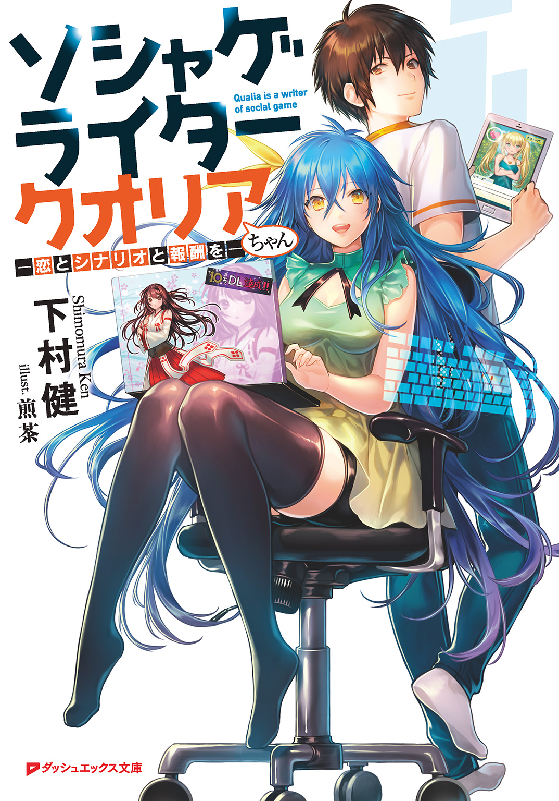
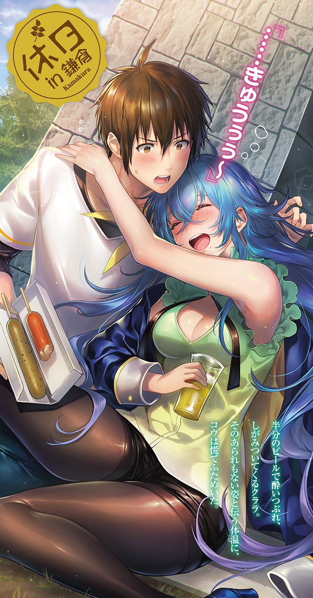
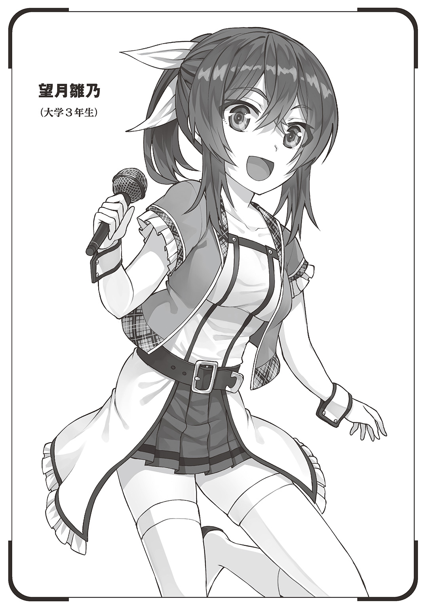
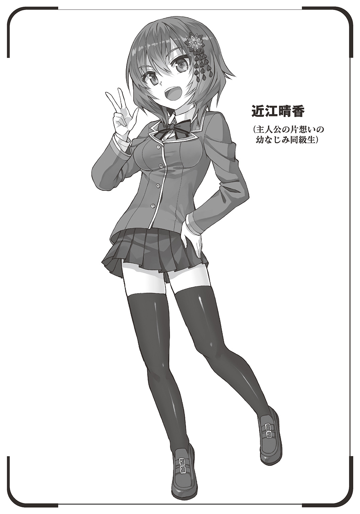

| ソシャゲライター クオリアちゃん ―恋とシナリオと報酬を― | |
| 下村健 | |

この本は縦書きでレイアウトされています。
また、ご覧になる機種により、表示の差が認められることがあります。

 ダッシュエックス文庫DIGITAL
ダッシュエックス文庫DIGITAL
ソシャゲライター クオリアちゃん
―恋とシナリオと報酬を―
下村 健
プロローグ『創作ラブコメは突然に』
「ずっと前から、好きでした......俺と付き合ってください！」
オレンジ色の西日が射しこむ、とある中学３年の教室でのこと。
卒業式を終えた少年・松平は、目の前にいる女の子・神風陽子に告白した。
理由はあまりに明白。
――明日になったら、もう会えないから――
他の生徒がいなくなり、静かになったところで。
胸に渦巻いていた熱を、叫ぶように放った。
「......」
口を結び、緊張を抑えるその顔は、控えめに言っても〝まったく特徴がない〟。
髪は目元にギリギリかからない程度の黒で、中肉中背。『君に届け』の風早くんのような爽やかイケメンでもなければ『俺物語!!』の剛田猛男のような、いかつい風貌でもない。
あえて喩えるなら〝ギャルゲーによくいる主人公〟。
そんな表現が妙にしっくりくる、勉強も運動も、すべてが普通の男子生徒だった。
だが彼が、自分のスペックを気にしたことは１度もない。
クラスメイトに「松平......『まったいら』か。ネタのような名前だが『すべてが平均値』のお前には、ぴったりだなぁ」なんて言われても、イヤに思ったことなどなかった。
なぜなら「それが普通だ」と思っていたから。
......けれど。
「普通すぎるの。つまらないわ」
「え......？」
自分の人格すら破壊しかねない、容赦のない一言。
ずっと想い続けてきた相手からの胸を抉るような返事に、平の頭は真っ白になった。
（......普通すぎるって）
泣きたい気持ちと、悔しさと、ショックとが綯い交ぜになり。
その後どうやって家に帰ったのかも、わからなかった。しばらくセミの抜け殻のような空っぽの状態が続き、そしてある時、ふと強い感情が湧き起こった。
『次に誰かに告白することがあったら、確実に心を射止めたい』
『〝普通〟から脱したい』――と。
◆
「俺は死にましぇん！ あなたのことが、好きだからっ!!」
そして時は移ろい、５年後の春。
平は、ひとりの女性に告白していた。
場所は神奈川県鎌倉市にある、こぢんまりした喫茶店。
相手は大学の先輩にあたる、川口久月麗。膝裏まである長いストレートヘアと切れ長の瞳が特徴的で、胸はそこまで大きくない。しかし首筋や腰が引き締まっている為、モデルのようなスタイルの良さを感じさせ、思わずはっとしてしまうほどの美人だった。
「......君は」
「あ、あれ？」
下げた頭の上に降りかかった戸惑いの声。
多少なりとも自信があった平は、それで一気に狼狽えた。
『次に好きになった誰かには、絶対に〝普通すぎる〟なんて思われないようにする！』
固い決意を胸に高校へ進んだ平は現在に至るまで、いわゆる名作と呼ばれる類のものを（ドラマから映画、マンガに小説、果てはゲームまで）ひたすらインプットした。その数――なんと１００００作。
『多くの人を震えさせた名言を知れば、相手の心を摑む普通じゃない告白ができるはず！』
それが普通すぎる生活を送ってきた真面目な平なりの必勝策......だったのだが。
「か、家族になろう!?」
「......」
「あなたは死なないっ。俺が守るから!!」
「......」
あまりの無反応さに、平の顔は徐々に引きつっていく。
同時に「受け入れて欲しい想い」から取ったお辞儀のポーズ。それが解除しづらくなり、自身がぷるぷると震えてしまっていた。
（いま先輩を見て、その瞳が哀れみの色に染まっていたら......）
最悪のビジョンが脳裏を過ぎるが、平はそれを振り払うように勇気を振り絞り、
「俺を............幸せにしてくださぁぁぁ――――いっ!!」
店に入った瞬間から下がりっぱなしだった頭を上げ、力強くクララを見据えた。
と、そこで初めて気がつく。
クララが〝露出度の高すぎる、プラグスーツのようなもの〟を着ていることに。
「『１０１回目のプロポーズ』に『パルフェ』。『エヴァ』に『バクマン』......だな」
「え......え？」
この場にふさわしくない、大学にいた時の彼女では絶対に着ないであろう服で、クララは悠然と微笑んでいた。
驚く平を気にする素振りも一切なく、
「どれも一度知ったら忘れられない、心に引っかかる言葉ばかりだ。いいセンスをしている！ やはり私の目に、狂いはなかったということか」
「......先輩？」
「君は、脚本科の生徒だろう？ ――頼む！ ソシャゲの仕事を、手伝ってくれ!!」
「......ええと」
「心配なこともあるだろうが、君に頼みたいのは主に私のサポートだ。原稿はすべて、この私が書き上げる！」
「あの......なんというか。ちょっとだけ、情報を整理させてもらっていいですか？」
拳を固めてぐいぐいと迫るクララに、平は両手を突き出し静止させる。
深呼吸をし、思わずクララの胸に注がれてしまった視線を慌てて顔のほうに戻すと、
「......俺の言葉、届いてました？」
「それはもちろん。ドラマにゲーム、アニメにマンガ。いろんな作品を押さえているという強みがはっきりとわかる、素晴らしいアピールだったぞ！ 即採用だ!!」
「バイトか会社の面接ですか、これ!?」
人生を賭けた全力の告白。
それがまったく相手に受け取ってもらえなかったとわかり、平は大きく肩を落とした。
それに対しクララは、小首を傾げながら眉をひそめ、
「......すまない。聞いたような覚えはあるんだが、君の名前をすっかり忘れてしまっていたのは、やはり失礼だったな。『ギャルゲーによくいる主人公っぽい』から『シュジン・コウ』......コウという呼び名は、どうだ？」
「いや、どうだって......なんですか、その謝ってるのかけなしてるのかわからない女優みたいな名前は」
「そうむくれずとも、男でもいるだろう？ 最近映画化した『アオハライド』とかに」
「そういうことでは、なくてですね！ その主人公のことは、この際どうでもよく――」
「とにかく、限られた文字数の中でいかに読者の心を摑むか。それがソーシャルゲームのシナリオライティングで、最も重要と言えるポイントなんだ。そしてそれが私は、苦手ときてる......だからどうか、君の力を貸して欲しい！ 頼む!!」
「......プロなんですか？」
「......大学を辞めた、半年ほど前からな」
頭を下げながら答えるクララに、平は嘆息した。
容姿端麗で、成績優秀で、肌の露出も少ない服で身を固めた、とてもまともそうな女性。
それがクララに対する、平の第一印象。
だがいざ家に来てみれば、そんなイメージが一瞬で吹き飛ぶような現実で、
「......わかりました。俺にできる範囲であれば」
「!? 助かるよ、コウ！」
「その名前、やっぱり決定なんですね......」
ガバリと顔を上げたクララに、平は苦笑いした。
しかし不思議と、最初に呼ばれた時ほどイヤな気分にはならなかった。
――好きな人に頼られて、愛称で呼ばれて、そばにいられて。
――告白なんていつでもできそうな、ラッキーな状況じゃないか。
最初は大きかった不安も時間が経つにつれ、喜びと期待でいっぱいになった。
しかしそれは、非常に甘かったのだと彼は知ることになる。
初めてクララのサポートをする、１週間後から......。
第１話『クララと一撃必殺セリフ』
「トーストにイチゴジャム......これは普通すぎるか」
焼きたての６つ切り食パンに、サクッとバターナイフを刺したところで平は手を止めた。
テーブルの上にあるのは、どでかい容器に入ったマーガリンに瓶詰めのイチゴジャム。ピーナッツクリームにマーマレイド、はちみつといった普通の家庭によく見られるラインナップ。しかしそれ故、平は「どうしたら意外性を持たせられるか」と真剣に悩む。
「......マーガリンにハム。その上に目玉焼きの黄身ものせよう、うん」
納得のいった様子でテキパキと準備を整え、大口でかぶりつく。
「おっ。いい感じ！」
しゃくっとパンの感触がした後、ハムの旨味と黄身の甘味が、マーガリンの塩っ気とともに口内に幸福の余韻をもたらす。その〝いつもとちょっと違う、特別な朝食感〟に平は満足げに頷いた。
本人が気づいていないだけで、やっていることはごくごく普通のことなのだが。
「......今日の夕方は、いよいよ先輩のサポートだ」
紺のビジネスバッグの中身を確認すると、平は緊張した面持ちで家を出る。
行き先は、徒歩５分圏内にある大学。キャンパスには初々しさ溢れる１年生が舞い散る桜を眺めながら楽しそうに歩いているが、平は小さく口を動かしながら黙々と闊歩する。
手に広げているのはどこにでも売っている、Ａ４サイズの青ノート。
タイトルは『心を揺さぶる名言集 ナンバー25』――平の５年の軌跡だ。
失恋のショックから立ち直った後、平は１８００日かけて、１万以上の作品に触れてきた。そしてそこで、心に引っかかった言葉を１行に１つずつ、書き留めていったのである。
Ｂ罫の標準構成は、35行×30枚。つまりノートの両面を使って書けるはセリフは、１冊あたり２１００個。１万作なら５冊で終わる計算だが「１作品につき１つしかいい言葉がない」なんてことはなかなかない。例えば『北斗の拳』なら「我が生涯に一片の悔いなし」「お前はもう死んでいる」といった、どこかで耳にしたようなものが幾つも存在している。
そうした印象的な言葉を〝あくまで平の心に引っかかった〟基準で選び取っていった結果、25冊という膨大な量になった。平はそこからさらに「告白に使えそうな言葉」に黄色い付箋をつけ、それが特に多いものを数冊、常に持ち歩くようにしている。そしてすぐに使えるように、何度も小声で口にし、脳に叩きこんでいるのだった。
「......３限目まで、１時間あるな」
２限の基礎創作論の授業を終えると、平は小説とナンバー26のノートを取り出す。
そしてふと、教室の左奥。最前列の、彼とは反対側の位置にある席を眺めた。
『あ、あの......先輩！』
『これは......私の学生証？ 君が拾ってくれたのか？』
長い髪をかきあげ、驚きの表情。
そして次の瞬間には目を細め、にこりと微笑み。
川口久月麗と松平のそんなやりとりが、１年前のそこで行われた。
しかし平がクララを知ったのは、それよりも少し前のことだ。
『あれは......』平が何気なく向いた先、そこに彼女はいた。
『......』
黒板を凝視。その凜々しい横顔は、既に絵になりそうなほど映えていたが、
『ふふ。このネタなら、父さんも褒めてくれるな』
眉を釣り上げた、険しい表情から一転しての微笑。
楽しそうになにかを綴った後、顎に手を当て真剣に悩むポーズ。
授業に集中していないのではなく、授業を真面目に受けた上で〝別のなにか〟に夢中になっている。それが平には、はっきりとわかった。
そしてそれからクララを遠目に窺う日が続き、ある日彼女が落とし物をして、
『......ありがとう』
クララに笑いかけられた、その瞬間。
自分は恋に落ちたのだと、平は自覚した。
「普通すぎる」と言われて泣いて、忘れようと思っても何度となく胸の痛みとともに蘇った初恋の呪縛。それからようやく解放される、前に進めるのだと、安堵した瞬間でもあった。
『男の初恋は、一生忘れられない傷痕になる』
なにかの作品で得たその言葉もまた、平の不安を煽っていたのかもしれない。
もう一度、誰かを好きになれるかどうか。
自分が積み重ねてきた〝普通じゃなくなる〟努力が、無駄に終わるのではないか。
そんな、切実な不安を――。
◆
「『喫茶ａｂｃｂ』......ここだな」
表に出た看板を確認し、平は大きく息を吐き出した。
ノートの住所と照らし合わせても、間違いない。クララの家だ。
（前回は顔を見た途端、緊張してそのまま告白しちゃったからなぁ）
本気で人を好きになった証拠でもあるが、同じ失敗を繰り返したくはない。
クララの依頼に応えるのが前提だが、チャンスがあれば今度こそ想いを伝えたかった。
平は意気込み、ゆっくりと木の扉を引いて、
「！ 来てくれたか、コウ!!」
「っ......せ、先輩」
勢いよく席を立ち、破顔したクララに出迎えられた。
しかもその服は、先日と同じ〝露出度の異様に高いＳＦスーツ〟。
二重の衝撃に、コウの心臓は大きく跳ね上がってしまった。
「......前も思ったんですが。なんなんですか、その服」
「うん？ ......いわゆる戦闘服というやつだが」
気を取り直そうとするコウに、クララは平然と席へと案内する。
「戦闘って......宇宙の戦争にでも、参加するつもりですか？」
「私の能力を知った何者かに召喚された時は、そういうこともあるが」
「......が？」
訊き返すコウに、クララはやけに厚いノートＰＣに指を這わせ、
「主な着装理由は『これを着ていると、世界を感じやすいから』だな！ リアルを肌で感じることで、作品への反映力が圧倒的に違ってきて......」
「ええと、つまり......仕事用の服？」
「そういうことだ！」
カチャカチャ、パーンと軽快な打鍵音が響き渡り、コウに画面が向けられた。
そこには「クオリア様」という宛名とともに「ソーシャルゲームのセリフ作成をお願いしたい」といった旨の文章が綴られている。
「『クオリア』というのは、私が使っているペンネームで、な。私や妹たちの、名前の頭文字からつけられている」
「......本当に、プロだったんですね」
頭の中ではすごいと思っていても、残念な格好のせいで、ため息混じりの返しになる。
「ですが、そもそもなんでソシャゲの仕事を？」
「......それは」
はつらつとしていたクララの顔に、ふいに影がさす。
クララは昨年の２学期で、大学を中退していた。
コウは最初、長期の休養をとっていると思ったのだが、どうやら違うようであるとクララの同級生から聞いた。そして散々悩んだ末、想いを伝えるべく学生証に書かれていた住所の記憶を頼りにここを訪れたのだった。
「実は......両親が亡くなってな」
「えっ!? それは、ええと」
「気にする必要はない。一緒に仕事をする仲だ。いつかは話さねばならないことだった」
気まずそうにするコウに、クララは優しく微笑みかけた。
「最高気温が40℃を超える、茹だるような暑い日でな。父さんと母さんは、とあるイベントに参加していた」
「......イベント」
「たくさんの人が集まる同人誌即売会、とでも言えばわかるだろうか」
クララから出た言葉に、コウは重々しく頷いた。
「......聞いたことがあります。夏は特に地獄で、倒れる人もいるとか」
「その時の館内温度は46℃。特に酷い状況だったらしい」
「......軽いサウナ状態ですね。でも、ちゃんと水分をとって日陰で休んでおけば、それでも大丈夫だと思うんですが......お歳ということも、あったんですか？」
「いや」クララは首を横に振る。
「そのとき父さんと母さんは、コスプレをしていてな」
「は？」
「キャラが可哀想だから名前は伏せるが。どちらも全身真っ黒という、それはもう『やりやがったな！』と思える格好で、会場を練り歩き――」
「ちょ、ちょっと待ってください！ 絶対にそのせいじゃないですか、死んだの!! 炎天下に真っ黒な服？ 『やりやがったな！』じゃないです、『なにやっちゃった』んですか!?」
テーブルに手をついて、立ち上がるコウ。
クララは向かいの席に座ったまま上目で見つめ、
「......オタクの性というヤツだ。許してやってくれ」
「いや、『許してやってくれ』じゃなくてですね！ 自殺行為にもほどがありますよ！ ていうか、実際に亡くなられてしまったわけだしっ!!」
「とはいえ、本人たちは満足げに笑っていてな。死に顔を確認した私や妹たちは『さすが、自分たちに好きなキャラ名をつけた親だ』と、概ねこの行動については納得している」
「......初めて名前を知った時から、もしかしたらとは思ってましたけど」
「『立った』とは、言ってくれるな？ 小学生の頃『立った』『立った』と囃し立てられて、それはもう恥ずかしい想いをしたんだ......」
真っ赤に染まった顔を両手で覆い、クララはぶるぶると震える。
７月２日という、１年のド真ん中に生まれたから「平」。そんな名前をつけた自分の親もどうかとコウは思っていたが。上には上がいるのだと、痛感せざるをえない真実だった。
「そんなわけで、私のことは名前ではなく〝先輩〟と呼んで欲しい」
「......まあ、今と変わりませんから、俺は別にいいですけど」
キリッとした表情に戻ったクララに、コウは小さく息を吐き出した。
話せば話すほど明らかになる残念な事実に、心のライフは既に０になりかけている。
「とにかく、仕事の話に戻りましょう。俺に手伝ってもらいたいというのは？」
「ああ。これだ」
クララはノートＰＣを引き寄せ、ささっと違う画面を映し出す。
「......小嶋千枝里。高校１年生のドジッ子で、身長１５０ｃｍ。胸は小さく、髪は茶色のサイドテール。軟式テニス部に所属しており、主人公のことは『先輩』と呼ぶ」
「クライアントから送られてきた、私の担当キャラの設定書だ」
何故か苦々しそうに、クララはつぶやいた。
「恋愛の話になるとテンパるところがあり、憧れやすい性格から主人公の同級生である近江晴香のことを『師匠』と慕う」
「......」
「絵を見る限り、人懐っこそうな、可愛い子じゃないですか。一人称は......『あだち』？」
「......そう。『あたし』でも『あーし』でも『わっち』でもなく『あだち』......東京23区の足立区と同じ『あだち』。『ペルソナ４』の冴えない刑事・足立透と同じ『あだち』だ！ 名前ではなく、一人称がなっ!!」
「くっ」と悔しそうに呻き、クララがテーブルに突っ伏す。
その目尻には、透明な雫のようなものが光っていた。
「......これって、表記ミスじゃないですか？ さすがにまともな精神で、一人称を『あだち』にする人なんていませんよ。じゃなきゃ、どこが可愛いと思って――」
「まともな精神で作られた設定が送られてこないのが、ソーシャルゲーム制作あるあるだ！ 私も目を疑い、すぐに確認してみたが『それで合っている』とメールが返ってきた」
「......それで、このキャラでどんなセリフを？」
「......告白。それも10個」
クララがぎゅっと目をつぶり、唇を嚙みしめる。
言わんとしていることは、充分コウにも想像がついた。
『好きです、先輩......あだちと、付き合ってください！』
『あだち、前から先輩のことがずっと......こ、これ以上は、言えません！』
『......あだち、先輩がいいんです。他の誰でもなく、先輩のことが......』
『「月がきれいだね」なんて......だ、ダメです、先輩。あだちなんて、全然可愛く――』
「全然可愛くないですね、本当に！ 大事なことを言ってるはずなのに、全部『あだち』で冷めるっていうか、やっぱり苗字に思えますよ、これ！ なんてややこしいんだっ!!」
クララが作成したエクセルファイル。そこに羅列されたセリフを見たコウは、予想通り叫ばずにはいられなかった。
クララが助力を求めるのも無理ないとわかる、かなりカオスな仕事である。
「まあ、一人称が酷いのは揺るぎのない事実だが、前に言ったように私はこういう『一言で心に突き刺さるセリフ』......『一撃必殺セリフ』とも言うべきものが苦手でな。一応『あだち』を使わない形で６つ作成したが、残り４つぐらいは使わないと不自然だろう」
「それで、俺に......」
「より〝引っかかるセリフ〟にしてもらいたい。できれば、一人称を組みこむ形で」
「プロとして恥ずかしい限りなのだが」と、クララは頭を下げた。
依頼人が作成した設定に本気で怒り、悩んでいた様からも、苦肉の策なのだとわかる。
「......本当に、悔しいのだがっ」
ギリリと歯ぎしりの音がした後、クララの頰に一筋の涙が伝った。
その原因は、依頼人だけではない。キャラクターを魅力的に見せてあげられない、プロとしての力量不足から、無念の想いから、自然と溢れて出てしまったのである。
「発注が来てから今日までの７日間、私なりに必死に考えてみた......１セリフ80円。全部で８００円という、コンビニのバイト代より安いかもしれない報酬だが」
クララが顔を上げる。
「このセリフは、ゲームが配信される前の宣伝に使われる。つまりこのセリフがダメならゲームを始める前に、プレイヤーが『これはクソゲーだ』と思い『本編のシナリオを読む前にやめる』という、クライアントにもプレイヤーにも申し訳ない結果になる可能性がある」
「......」
「私はそんな......クソゲー呼ばわりされる結果は、絶対に避けたい！ 妹や父さんたちの為にも。そしてなにより、少しでもこの作品を楽しみにしてくれてる人たちの為にも!!」
「先輩......」
吐き出された言葉には、確かな熱と魂が宿っていた。
コウはその真剣さに、ただ息を呑み、
「......ソシャゲの仕事って、そんなに安いものなんですか？」
クララの必死さに見合いそうにない金額。それについて、正直に訊ねていた。
「ＰＣゲーム。多くは、18禁のエロゲーと呼ばれるものや家庭用ゲームの影響だ。ガラケーと呼ばれる、スマートフォンが流行る前にあったケータイのゲームが世に出始め、まだ数年......いわゆるソシャゲの歴史は他のゲームに比べ、浅すぎるんだ。だからそれより前からあったＰＣや家庭用ゲームの報酬相場がそのまま使われた。１ＫＢで１０００円という、ソーシャルゲームでは安すぎる金額がな」
「１文字あたり、約２円......だから１セリフ40文字ほどのこの仕事が、80円に」
「あくまで、私のような〝底辺ライターの場合〟だがな。月に１００万を稼ぐトップライターは、１文字あたり10円。１ＫＢ５０００円で、取引していると聞く」
「先輩の、５倍......？ 貧富の差が、激しい業界なんですね」
「ああ。つまり、闇の部分もあるが......まぶしいほど夢や光に溢れる仕事でもあるわけだ」
辛気くさい雰囲気を振り払うようにクララはニコリと笑い、壁の時計に目を向ける。
針はもうすぐ、18時を示そうとしていた。
「......ありがとうございます。とりあえず、状況はわかりました。ふたりで頑張って、クソゲーなんて呼ばれないセリフを作りましょう！」
「......助かるよ、コウ」
ふっと微笑を浮かべるクララ。
そんな彼女に、コウは照れくさそうに頰をかき、
「いえいえ。それでもうひとつお訊きしたいんですが、締切は」
「今日だ」
「えっ」
「さらに言えば、あと５分だ」
「なっ......ちょ、えええ？ なんでそれを、今まで俺に！」
「言おうと思ったが......！」
バンとテーブルを叩き、クララは頰を赤らめる。
「自分で言うのもなんだが、その......私は人と話すのが苦手なところがあって。君とはまだ３回目だし、切り出しにくくて......」
「いや、いやいやいや！ なに恥ずかしそうに顔を逸らしてるんですか！ 今はそんな場合じゃないでしょう!? 早くこっちを見て、一緒に考えないと――」
「そうは言っても、急に緊張してきて......！ か、家族以外の者と、なかなか話もできなくて......打ち合わせすら、まともに行ったことないんだ!!」
「いつも大学で端っこのほうの席に座ってたのは、その為ですか!? ていうか、なに開き直って......ああ、もう！」
本当に、残念な美人だ！
叫びたい気持ちをグッと抑え、コウはパソコンのエクセルファイルを睨みつける。
そこへ間を置かずして、横に並ぶようにクララが屈んだ。
長い髪が揺れ、ふわりと漂う石けんの香りにコウはドキリとしながらも、
「告白のセリフ......心に引っかかるもの......」
強引に意識を引き剝がし、脳内の記憶にアクセスする。
――蓮くんが、すきですっ。蓮くんの一番になりたいです――
――何度生まれ変わっても、何度出会っても、私はきっとあなたに恋をする――
――俺は、お前が、お前が、お前が好きだぁぁぁッ！ お前が欲しぃぃ――ッ！――
――司、生きなさい。あなたが得損なった愛情を......私が全て注いであげるから――
――お願い......一日でいいから。あたしより、長生きして......――
「コウ？」
「一人称......憧れやすい性格......近江晴香を『師匠』と慕う......」
25冊×２１００。ノートに綴った５２５００もの名言がコウの脳裏に浮上していた。
そこに目の前のキャラ設定を高速で叩きこみ、
「......『あたしの初恋は、先輩です。あたしの初めてを、受け取ってくれませんか？』」
「！ 一人称が『あだち』じゃ？」
コウの紡ぎ出したセリフに、クララは目を見開いた。
「千枝里はそうでも、師匠と慕う近江晴香は『あたし』です......だから」
「そ、そうか！ 千枝里は『憧れやすい性格』。常にはきはきしている晴香に憧れて『晴香のように喋れたら』と一生懸命練習していたとしたら、千枝里の健気さも？」
パンと両手を合わせるクララ。
しかしコウはそれに構わず、頭を埋めつくす〝引っかかる名言〟から法則性を探し出し、
「『舌っ足らずですけど、これだけは絶対に嚙みません......あたし、小嶋千枝里は......先輩のことが、大好きです！』」
「なっ......さらに設定の追加を!? だが」
クララは強く頷く。
「これで、千枝里の『あだち』にリアリティが生まれた！ そして大事な場面で、ちゃんと大事なことを正しく言い切る、頑張り屋な姿を応援したくなってくるぞ！」
確かな手応えに、クララは思わず拳を握った。
幸いなことに、この作品のシナリオは、まだ書かれていない。セリフが作成されるのも、今回が初めて......つまり、設定書以上のものが作られていない状態だった。
こういう場合、担当するキャラクターがより魅力的になるのであれば、設定の追加は許されることがある。いや、確実に許してもらえる！
そんな確信がクララの胸に熱く、募り始めていた。
「『か、髪をほどいちゃ、ダメです......これはコートに出るときのおまじないで、先輩への気持ちを封じるための、飾りなんですから』」
「......ゲームには、サイドテールをほどいた時の画像はない。ただこれは〝ゲーム画面には、表示されない宣伝用のセリフ〟だ。しかも、声優さんに喋ってもらえる！ プレイヤーは想像力が搔き立てられ〝髪がほどけた千枝里の姿〟を思い浮かべて、もだえるに違いない！ さりげなくテニス部や照れ屋の設定を拾ってるあたりも、いいじゃないか!!」
嬉々として、キーを打ち始めるクララ。
そんな彼女の様子に、コウは苦しそうに微笑む。
すらすらと紡ぎ出せているように見えて、実は脳がズキズキと悲鳴をあげていたのだ。
（『バタフライ・エフェクト』の主人公も、情報を詰めこみすぎて死にかけたっけ......）
映画と同じような状況が、コウに起きているのかどうかはわからない。
ただ、今の状態をクララに悟られるわけにはいかず、
「『師匠のように胸も身長も、大きくはありません。だけどあたしは......あたしの先輩に対する想いは』」
「......想いは？」
振り返るクララに、コウは自身と重ね、
「『誰よりも、大きいです......好きです、先輩っ!!』」
叫ぶように、言葉を吐き出した。
頭を押さえ出すコウに、クララはグッと親指を立て、
「よくやった！ 少し長い気もするが、主人公に抱きかかえられるほどの千枝里を想像させ、そんな彼女が精一杯このセリフを絞り出したかと思うと、思わず胸に『きゅん』とくるな。......これでいこう！」
「......よかっ......た............」
満面の笑みを浮かべるクララに、コウは弱々しく笑い返した。
サポートと言っておきながら、全部ひとりで考えて。
視界が一瞬、ブラックアウトしかけたほど疲弊していたが、
「ありがとう！ 本当にありがとう、コウ！ 助かったよ!!」
「ちょ、ちょっと......先輩？」
きっと、ランナーズハイになっているのだろう。
提案したセリフをファイルに書きこみ、両手を合わせてくるクララ。
掌を通して伝わってくる熱、喜び、感謝の気持ち。
それを確認できただけでコウはもう、なにもかもがどうでもよくなっていた。
胸の高鳴りを鎮めるべく、もったいなく思いながらもクララから身を引き、
「......とりあえず、なんとか間に合った、という感じでしょうか」
「いや、実は３分すぎている」
「えっ......噓っ!?」
コウは慌てて、パソコンの隅に目を向けた。
そこには確かに「18時03分」の表示。セリフを捻り出すのに必死で、今の今まで気づかなかった。
「あ、あの......締切をすぎた場合は」
「書き手は、依頼人から信頼を失う。次の仕事がこなくなることもあれば、最悪プログラムやグラフィック、収録なんかの別作業が遅れ、多大な損害が発生。遅延金を請求されたり、作品が世に出る日付が、大きくズレることもある」
「の、呑気に語ってる場合じゃないじゃないですか！ すぐにメールに添付をっ......え？」
「大丈夫だ、問題ない」
迫るコウの唇――そこにクララの人差し指が押し当てられていた。
そしてクララはそのまま、右手を頭の位置まで上げ、
「今から、時間跳躍する」
「......はい？」
「私は３日で８時間だけ、意識を過去に跳ばすことができるんだ」
言いながら、指を鳴らす時のような形を作ってみせる。
「......冗談でしょ。『時かけ』や『タイム・リープ』じゃあるまいし」
「どちらかと言えば『ミッション：８ミニッツ』が近いかもしれんな。ただしあれは、８分間を永遠とループする能力だが」
コウに向かってクララは不敵に笑い、
「............え？」
パチンっと音が鳴った。
コウがそれを認識した瞬間、視界が１、２秒ほど白く染まったような感覚に襲われた。
頭がぼんやりとし、しかし目の前には、変わらずクララの姿がある。
イスに座り、絵になりそうなほどの微笑でコウを眺めており、
「......どうやら、上手く繫がったみたいだな。気分はどうだ？」
「あ、えと？ どうって」
耳に鮮明に届く声。
それにより、夢から覚めるように脳の冴えが戻ってくる。
だが、なにかがおかしかった。
先ほどとなにも変わっていないはずなのに、ここでクララと仕事をした。その記憶が本当にあったのかわからない――夢の中で見ていたような情景として、コウの頭に存在していた。
確かに「あった」はずのことなのに「なかった」かのような不安に襲われる。
その言いしれぬ恐怖に、コウは自然と肩を抱いていた。
「コウ。君はいま『つい先ほどまで、私とセリフを練っていた記憶』がぼんやりとあると思う。しかし次第に『私とここで、ギリギリまでそのセリフをブラッシュアップしていた記憶』が入りこんできて、どちらも本当にあったかもしれない出来事として認識するようになるだろう。何故なら私は、君が来た１時間ほど前に時間跳躍し、後者の世界にしたからだ」
クララはパソコンをいじり、コウに画面を向けた。
そこには「17時55分」に依頼人にファイルを送付した、さっきはなかったはずのメールがある。
そして不思議なことに、それをクララが自信満々に送った過去がふわりと「まるで、さっきあったこと」のように、コウの脳裏に浮上してくるのだった。
「よくある『タイムトラベルもの』との違いは『現実には並行世界は存在しない』ということ。つまり『この世界は複数ではなく、１つしかない』んだ。だから書き換わる前の世界の記憶と書き換わった今の世界の記憶が混ざり合ってしまうという欠点を、この能力は持つ。......ただしこれは、能力が発動された地点から半径数メートル程度の距離にいた者で、なおかつその者が書き換わった世界でも発動点からそう変わらない位置にいる、つまり〝前の世界と上手く繫がった〟場合のみに起こる、極めて限定的なものなんだが」
「......何故、そんな能力を？」
小難しい話をし始めたクララに、コウは率直な疑問をぶつけていた。
「これは......たぶん父さんたちの影響だな」
「えっ？」
「話しただろう？ 真夏に全身真っ黒なコスプレで、イベントに参加してしまうどころか、娘たちに好きなキャラ名をつけてしまう〝重度のオタク〟。......どうも私たち姉弟は、その影響を受けてしまったみたいでな。全員、なんらかの能力が備わっていて――」
「いや、ありえないでしょ！ なんでそれで時間を戻せるようになるんですか!?」
「なんでって......実際に使えてしまうのだから『そういうものだ』としか言えないな。それに、正確には『時間を戻す』のではなく『過去へ意識を跳ばす』だけで」
「細かいことは、いいんです！ ああもう、本当に」
――普通じゃない!!
コウは自分が言われたかった言葉を、クララに向かって叫んでいた。
◆
「お疲れ様、お姉ちゃん」
「ん？ ......ああ、アイナか」
コウが喫茶店を出て、クララが見送った後。
クララは背後にいる人物へと向き直った。
空には夜の帳が降り、声の主――愛菜のあどけなさの残る顔がはっきりと確認できないほどになっている。
「今日は珍しく、遅いじゃないか。部活に復帰したのか？」
「ううん。中を覗いたら、お姉ちゃんが誰かと話をしてるみたいだったから。わたしが入ったら邪魔になるかもって、買い物に行ってたの」
右手に持ったビニール袋を持ち上げてみせる。
クララは「そうか」と口元を緩め、働き者の妹の頭にそっと右手をのせた。
アイナの髪は、クララとは対照的なショートのボブ。それでいて、両側を赤いリボンで結んでいる箇所があり、制服姿も相まって〝とても女の子らしい姿〟をしている。
胸も高２の割には大きく、クララが軽い嫉妬を覚えるほどだった。
「締切、間に合った？」
「......コウのおかげでな。しかも私の能力を使った上で、だ」
大きな瞳に見据えられ、クララは苦笑いで答えた。
――自分の弱点を把握した上での、コウへの依頼。
それについては、クララの予想を遥かに超えた結果を得ることができた。
しかし人付き合いの下手さもさることながら、過去へ戻り「他のライターよりも多くの時間を使ってしまったこと」。それが今回クララにとって、最も反省すべき点だった。
「時間をかければ必ずいいものができる」というわけでもないが、当然ながら時間をたくさん使えば「いいものができる可能性」は高くなる。
故に「締切を破ったり」「いろんな手を使って時間を増やしたり」といったことは基本的にするべきではないと、クララは考えていた。
１週間なら、24時間×７日で１６８時間。
その、与えられた枠内でどれだけのものが生み出せるか。
制限があるなかでライター同士が正々堂々と戦い合い、限界までそれぞれが切磋琢磨することで、クオリティや技術が向上。結果、依頼人や遊び手が喜ぶようなものができあがる。
そうクララは信じているし、彼女に基礎を教えた父親もまた、その姿勢を貫いていた。
だから他人よりも多く時間を使えてしまう自身の能力をクララは、極力使わないようにしている。――使わなければ依頼人や遊び手に申し訳ないものができてしまう、本当にどうしようもない時を除いて。
「コウ......くんは、お姉ちゃんの後輩なんだっけ」
「辞めてなければ、脚本科の３年のはずだ。またウチに来ることもあるだろう」
「ふーん。そうなんだ？」
人差し指を顎に当て、アイナは思案げな顔をし、
「あたしと会ったら、速攻で殺してやらねぇとな。姉さんのために」
「......アイナ？」
「あ......ううん、なんでもない！ わたし、冷蔵庫にこれ、しまってくるね！」
首を傾げる姉に笑いかけ、アイナは店の脇にある２階に続く階段へと急いだ。
「もう。いきなり出てきちゃダメじゃない、やっちゃん」
「別にいいじゃねぇか。姉さんはあたしたちのこと、知ってるわけだし」
コンクリートの段差をカツカツと、革靴で上がる音が響き渡る。
ただしそれは、ひとり分だけ。
後ろからクララが登ってくる様子も、しばらくはなかった。
第２話『アイナと５１２文字の世界』
「ああ。やっぱり......普通とは違うと思ってたけど」
『心を揺さぶる名言集 ナンバー26』――５年更新し続けたノートの最新版を手に、コウはげんなりしていた。
紙面に書かれているのは、先日訪れたクララの家の店名『喫茶ａｂｃｂ』。その表記を「どこかで見たことがある」と気になっていたのだが、ようやく思い出したのだ。
（まさか『きまぐれオレンジ☆ロード』から持ってきてるなんて......）
自分たちの娘に好きなキャラ名をつけ、炎天下のイベントで真っ黒なコスプレをしたという、こまったさんなクララの両親。そのわずかな情報を頭の片隅に、過去のノートを漁っていると「答えてくれる？ Ｌｉｋｅ ｏｒ Ｌｏｖｅ？」「Ｌｉｋｅ！ ――限りなくＬＯＶＥに近い......ね！」といった名やりとりが目についた。そこから「そういえばヒロインの鮎川まどかがバイトしてた喫茶店が『ａｂｃｂ』だ！」と、答えが弾き出されたのである。
ちなみにこの『きまオレ』の名ゼリフを今日、コウはクララに使おうとしていた。
しかし店名が同じとなると、クララがあの作品を知っている可能性がある。
つまりまた、告白だと気づかれない気がしており、
「なにか他に良いものなかったかな」コウが別のノートに手を伸ばした時だった。
「オレは、アイナちゃんと添い遂げる!!」
「なっ......なんだ!?」
突然聞こえてきた名ゼリフに、コウはびくりと身体を震わせた。
前方に、ちょうど喫茶店の扉を開き、学ラン姿の男が店に入っていくのを確認する。
一瞬のことだった為、じっくり見ることはできなかったが、真っ青な坊主頭に１８０ｃｍほどの長身。野球部のエースと言われたら「やっぱり」と頷いてしまいそうな、ガッチリした体格の少年だった。
（俺と同じように、誰かに告白しに行ったのかな？）
しばらくその場を動けずに、コウが固唾を呑んで見守っていると、
「喉元ぶっ刺されたくなかったら、今すぐ立ち去りなっ」
「えええっ!?」
ふいに、ドスの利いた声が聞こえた――
そう思った瞬間、「ひぃっ！」と青ざめた少年が転がるように店から出てきて、そのまま走り去ってしまった。
「......なんだったんだ？ 今の」
自分より大きな男が、化け物でも見たかのように狼狽え、逃げてしまった。
その光景を目の当たりにしたコウの足は、完全にすくんでいた。
（でも、ここで立ち止まってたら先輩を裏切ることに）
初めて自分に笑いかけてくれた、大学でのワンシーン。
それを思い出し、コウは勇気を出して扉の前に立った。
前々回、前回と、いろいろと残念なことが判明したが、それでも惚れてしまった相手。すぐに嫌いになることなど、できないのである。
「こ、こんにちは～......」
おそるおそる店に入り、カランコロンと心地よいカウベルが鳴ると、
「あ、はーい！ いらっしゃいませ～！」
コウに挨拶してきたのはクララではなく、知らない女の子。
身長はコウより頭１つ分ほど小さい、１５０ｃｍほどだろうか？
細身だが、思わず直視するのを躊躇うほどボリュームのある胸が制服にエプロンという強烈な武装の上からでも充分にわかるぐらい、凶悪な悩殺力を放っている。
髪は短く、全体的にあどけなさが残る、人の好さそうな少女だった。
「お好きな席におかけにください。いま、メニューとお水をお持ちしますから」
「ああ......ありがとう、ございます......」
予想とは違った対応に面食らいつつ、コウはきょろきょろと周囲を見渡す。
イス、テーブル、カウンター。すべてが焦げ茶の木で統一された、どこか懐かしさと温かみを感じさせる店内には、全部で20ほどの席が存在している。
しかし、そのどこにも、人はいない。
いつもそうだが、祝日の15時という普通は繁盛してそうな今でさえ、閑古鳥状態。
まだ待ち合わせの時刻には早いせいか、クララの姿さえ、そこにはなかった。
（さっきの人は、いったいどこに......トイレの中にでも、いるのかな？）
扉をぶち破って聞こえた、恐ろしい声。その主をコウが捜していると、
「お手洗いですか？ それなら、奥の......あっ」
カタンとなにかが倒れる音。
見ると、先ほどの女の子がお盆の上のコップを倒してしまっていた。
水が大きな双丘にこぼれエプロンが制服に張りつき、暴力的な形をさらにくっきりと浮き彫りにしている。
「だ、大丈夫ですか？」
「は、はい......ごめんなさいっ。すぐに新しいのを、用意しますね！」
コウが近寄るも、少女は自分より客の心配をしているようで、
「きゃっ!?」
「わっ......」
少女は向きを変えると床の水で足を滑らし、コウに向かって倒れこんできた。
そしてふたりは重力に引っぱられ、
（......これ、なんつーギャルゲー？）
コウの鼻から下には、マシュマロのような柔らかい感触。
熱を持ったソレの持ち主は、真っ赤な顔でコウを見下ろしていた。
「わわっ......だ、大丈夫ですかっ!?」
「............」
今度は逆に、コウが訊かれる番。
しかし口を動かそうものなら、いろいろと〝もっと危ないこと〟になりそうだった為、押し潰されてない両手で〝○〟を作ってみせる。
（......人をダメにするクッションって、こんな感じなんだろうか）
やましい気持ちになってはいけないと、コウは必死にノートＰＣで見た画像に脳内変換し、少女が離れるのを待った。打ちつけた後頭部がジンジンと熱を放っていたが、もはやそんなことを気にしている心の余裕など、ないに等しかった。
「あの......拭きましょうか？」
「へ、平気だから......もう気にしないで！」
そんなこんなでどうにか席に着いた後、少女は手ぬぐいをコウの下半身に伸ばしていた。
新たなコップの水がわずかにズボンに飛んでしまい、それを気にしたのである。
しかし少女の意向に添うと、またギャルゲーのような展開になりそうなので、コウは自分で拭うことを選択した。
「うぅ......滅多にこないお客さんにわたし、なんてことを......」
コウが怒ってないことに安心したのか、少女は細長いメニューで顔を隠している。
その様子からして、きっと悪気はなかったのだろうとコウは思った。
胸に水をこぼしたり、それで滑って倒れてきたり、男の下半身を拭こうとしたり。
妙に男が女性キャラと仲良くなるゲームでよく見かけるシチュエーションに危ぶむ気持ちもあったが、少女の恥ずかしそうな呻きに自然と笑みがこぼれ、
「もしかして、先輩の妹さん？」
「へ？」
ごく自然な調子で、声をかけていた。
クララには、妹がいるという話である。
ならば接客をしている彼女がそうなのではと、軽い気持ちで切り出したのだが、
「てめぇが噂の泥棒ネズミかっ」
「な......何事!?」
柔和なイメージから一転。目の前の少女から突然、野太い声が放たれていた。
目と口の端が大きく釣り上がり、キンッとどこからともなく音がした――
そう思った次の瞬間にはコウの両腕は搦め捕られ、少女が背後に移動。喉元には冷たい金属の感触......いつの間にか、フォークの先が押しつけられる形になっていた。
「答えろ。てめぇが〝コウ〟か？」
「あっ......ぐっ？」
ギリギリと腕を引き絞られるコウの耳たぶに、生温かい息がかかる。
これが先ほどの優しい少女のものなら、コウもドキドキしたかもしれない。
しかし今、背筋を駆けあがるのは恐怖、焦り、戸惑い......
別人のようになってしまった少女は「返答次第では、すぐにでも殺す」とでも言わんばかりの迫力で、
「なんだ。もう来てたのか」
「!? 先輩っ！」
「ちっ......もう少しで排除できたのに」
２階の居住スペースから降りてきて、店の扉を開けたクララ。
その姿を見た途端、背後の少女は何故かコウの拘束を解き、自由にしたのだった。
◆
「......川口愛菜です。高校２年生で」
「つまるところ、私の妹だ。そしてさきほど君を襲ったというのは、アイナの人格変換能力によって入れ替わった、もうひとりのアイナ。〝闇アイナ〟とでも言うべき別人格なんだ」
「とかなんとか説明されて、すぐに納得すると思いますか？ なんなんですか、その『遊戯王』に出てきたような設定は！ 黄金のパズルでも完成させたんですかっ!?」
ダンッと両手をテーブルについて、立ち上がるコウ。その前には変態スーツのクララが座り、右隣で申し訳なさそうにアイナがもじもじとしている。コウが解放されて振り返った時には、最初に見たこの〝普通のアイナ〟に戻っていたのだ。
クララの話では、アイナの中に存在する他の人格がしたことは、ホスト人格であるアイナは覚えている。しかし、他の人格が「なにを思っているか」「どんな行動をするか」までは完全に把握できず、止めることも難しいらしかった。
「ご、ごめんなさい。やっちゃんがご迷惑をおかけして......いつもはわたしを守ってくれる、優しい子なんですが」
「闇アイナだから〝やっちゃん〟ですか......またずいぶんと、可愛らしい名前ですね」
「〝ヤンデレイナ〟とも呼んでいたが、それだと可哀想だからな。ちなみにアイナは料理に裁縫に洗濯と女子力においては最強だが、ゲームは苦手だ。ギャルゲーに関しては、ちょっとエッチなシーンが流れるだけで顔を背けるほどピュアだが、男と絡むとよく〝ギャルゲー展開になる〟という、ラッキースケベ自動発生能力も秘めている」
「......そうなっちゃってる本人としては、すごく恥ずかしいんですけど」
アイナがチラとコウを窺い、視線と視線が重なる。
その瞬間、アイナは「わわわっ」と顔を赤らめ、ぎゅっと目をつむった。
その様は純粋そのもので、わざとらしい感じがしない。むしろ、とても女の子らしい態度に、コウはドキリとしてしまった。
アイナの服装が制服で、高校では女子との甘酸っぱい会話などしてこなかったコウだからこそ、余計にそう感じてしまうのかもしれない。
「とりあえず、噓を言っているようには見えない、とは思いました。......けど」
咳払いをし、アイナを見据える。
「例えばアイナちゃんが、素人にはわからないようなすごい演技をする子だったら......そんな疑惑は、どうしても頭の片隅に残っちゃいます」
「で、ですよねー......」
「仕方ないです」と、残念そうに眉を下げるアイナに、
「つまり『これは演技ではない』とアイナの能力を充分に知ることができれば、コウも納得するんだな」
「......先輩？」
クララが微笑を浮かべ、コウにノートＰＣを向けた。
画面には「シナリオに関するご相談」といった件名のメールが表示されている。
「それって、今回の？」
「ソシャゲの仕事だ。先日セリフを作成した会社から『同じ作品の別キャラで』という発注が来てな。今回はゲーム画面に表示されるイベントＣＧ......一枚絵、スチル。呼び方はさまざまだが、ようは『ヒロインの可愛らしい絵に合わせたシナリオを頼みたい』という話だ」
クララがエクセルファイルをクリックする。
ほどなくして映し出されたのは、金髪のツインテールに気の強そうな碧眼といった、いかにもギャルゲーに出てきそうな女の子だった。
しかし前回のことがあった為、コウは緊張した面持ちで設定を確認し、
「......ルイーズ・ブルーメル。フランスの貴族で、主人公の高校には勉強の為に留学中。身長は主人公より15ｃｍも低い１５５ｃｍだが、常に偉そうな態度で命令を下すキャラ。一人称は......『ワタシ』！」
「まともだと、思うだろう？」
思わずガッツポーズしたコウに、クララは薄笑いで返した。
「違うんですか？」
「今回は主に〝そっち〟じゃない」
キーボードに指を這わし、クララがテキストファイルを開く。
「これは......シナリオ？」
画面に映し出された文字の羅列に、コウは目を凝らした。
ルイーズ「おい、貴様！ 貴様にこれをくれてやる!!」
主人公 「いきなりなんだ！ ってこれは、写真か!?」
オレはある日、ルイーズに写真を突き出された。
オレが受け取った写真をじぃ っと見つめると......
っと見つめると......
そこにはまあゴブリンのように可愛いルイーズ様が映っているではないか！
主人公 「なんだかよくわからないが......スゲー写真だな！ オレにくれるのか!?」
ルイーズ「ああ、くれてやる！ しかし勘違いするな!?」
ルイーズ「別に貴様のことが好きだからとか、そういう理由では決してないからな!!」
ずびしぃ！ っとルイーズはオレに向かって指を差してくる。
なんだかよくわからないが、タダより安いものはない。うん、ないなっ!!
主人公 「じゃあ、ありがたくもらっておくぞ！ なんだかよくわからないこの写真!!」
ルイーズ「ああ、大事にするのだぞ！ このワタシが映っている写真だからな!!」
平べったいスライムの如く、ドレスを引きずりながら去るルイーズ。
なんだかよくわからないが、ちょっとだけ幸せを感じた時間だった！
「......どうだ？」
「............」
読み終わって眉間をつまんだコウに、クララが呆れ顔で訊ねた。
コウは「なんだかよくわかりませんが」と苦しそうに言葉を吐き出し、
「読んでて、すごく疲れました......」
「それは、エクスクラメーションマーク――びっくりマークとも呼ばれる『！』が多いのが原因だろう。担当ライターはルイーズのツンデレっぽいところを出したいと思ったんだろうが、使い過ぎて主人公ともども、何故か常に怒っているような印象を受ける」
解説するクララに、コウは「なるほど」と弱々しく頷いた。
「それと......用意された一枚絵に合わないというか。ルイーズの可愛さが、あまり伝わってこない気もします」
「ゴブリンやスライムなど、現代恋愛ものには不釣り合いな比喩が使われてるからな......おそらく書き手は、本当はファンタジーものが書きたかったのか、あるいはそっちが好きなのだろう。どこか全体的に、やけくそになって書いた感がある」
「......ありえるんですか？ プロですよね？」
「プロでもプロらしく、しっかり仕事しない者がいるのも、ソシャゲ業界あるあるだ」
荒い息をつくクララ。
前回も「クソゲーにはしない」とギリギリまで抗っていた彼女である。
他のライターがいい加減な仕事をしているのは、見ていて辛いところがあるのだろう。
「こんな原稿でも、ディレクターが忙しかったりまともな読解能力がない者がチェックしてたりすると、通ってしまうのだがな。今回はさすがに依頼人もマズイと思ったようだ」
「それで、リライトですか」
先ほど見たメール。そこには「シナリオを直して欲しい」といった内容が記されていた。
「手を抜いて、仕事から降ろされる。それもまた、この業界にはよくあることだ」
「ちなみに、今回の報酬は」
「ジャスト１０００円。短いシナリオとなると、業界では一般的に『20クリック前後』......文字数だと『５００』。ＫＢ換算で『約１ＫＢ』と指定されることが多いからな」
「......てことは、また１文字あたり２円の計算ですか」
「ＰＣやコンシューマーのゲームであれば、月に２００～３００ＫＢほど書くから、20～30万は入るのだがな。少ない文字量のなかでいかに読者に刺さるように書くか。キャッチコピーに近いスキルが要求される、考える時間のほうが多いソシャゲ業界においては、正直ジリ貧でしかない。私はこの〝ありえない単価〟を変えたいと、常日頃思っている」
両手を組んでおでこをつけ、睨むようにテーブルを見つめる。
揺れる瞳には、クリエイターとしての情熱と、どこか悲しみの色が宿っている――クララの目の前に座るコウからは、そんなふうに見えた。
「話は逸れたが、ともかく修正だ。そもそもヒロインの名前からして、設定者の趣味丸出しなのはどうかと思うが。どんな条件が提示されようと、私たちは救わねばならない」
「......このゲームを遊んでくれる人と、依頼人をですか？」
「それとこのヒロインと、イラストレーターをだ」
クララが画面を切り替え表示させたのは、最初のルイーズの一枚絵。
キツそうな釣り目がわずかに柔らかなカーブを描いており、頰は朱色に染まっている。
口の端もわずかに上がり、微笑を浮かべているように見えるが、泣きそうでもあった。
「ルイーズは、何故こんな表情をしているのか。普段はドレスなのに、何故ここでは私服なのか。――この絵の裏には必ず、描いた者の意図とヒロインの想いがある。それを読み取り、文章にし、より魅力的になるように読者に提供するのが、私たちライターの仕事だ」
パチンと打鍵音を響かせ、クララがテキストファイルを立ち上げる。
それがスイッチとなり、場の空気が一瞬で研ぎ澄まされたのをコウは肌で感じた。
――可愛く見せたい。このキャラを好きになってもらいたい。愛して欲しい。
描き手にそんな気持ちがあったかどうかは、正確にはわからない。
しかし絵を見る限り、荒さは感じられず、むしろ細部へのこだわりが感じられ、
「それじゃあ産むね、お姉ちゃん」
「ああ、頼む」
なんとかしたい――コウの胸に熱が湧き上がったところで、ずっと黙っていたアイナが口を開いた。
こめかみに人差し指を立て、ぶつぶつと設定文を読み上げると、
「ワタシなら、最後のデートにヤツを誘い、そこで写真を撮るはずだ」
「......アイナちゃん？」
先ほどまでの優しそうな声とは一変した、通りのいい声。
目つきは気の強そうな釣り上がったものへと変わり、木製のイスを確認するや否やハンカチを敷いて、その上に優雅に腰掛けた。
「最後のデートとは、どういうことだ？」
クララはそんなアイナを気にかける様子もなく、質問する。
「そのままの意味だ。この表情からして、ワタシは嬉しくもあり、寂しくもあるのだろう。そんな状況になるとしたら――『祖国に帰ってこい』と、お父様から連絡があった。親の命令に逆らえず、留学すら断れなかったワタシは、もちろん承諾せざるをえない。しかし、ずっと不機嫌で、ワガママばかり言っていたワタシに、なんだかんだ言って付き合ってくれたヤツにワタシはいつの間にか惚れて......」
アイナが胸元でぎゅっと、拳を固める。
「帰る前に『せめてヤツとの思い出が欲しい』と、いつもと違う服でヤツと出かけ、最後に無理矢理、笑顔を作りながら並んで写真を......そんなところだろう」
「......なるほど。喜んでいるのは主人公とふたりで撮ったからか」
真剣な面持ちで、クララが顎に手を添える。
アイナは眉をひそめながらテーブルの上のカップの取っ手に指をかけ、音も立てずに中の紅茶をすすった。
「ワタシ自身も、写真を見て、驚いただろうな。『まさかこんなにもヤツのことが、好きになっている自分がいたなんて』......と。嬉しさと寂しさが混じり合った、貴様のことが好きなんだぞ、貴様がこんな顔をさせたんだぞ、と言わんばかりの証拠品。自分の想いがこもったこの写真は、ヤツに持っておいてもらいたい、そう思うだろうな」
「だが、絵で用意されてるのはルイーズだけが映ったもので............そうか！」
イスをはね除けるように立ち上がり、クララがすさまじい速度でキーをタイプし始める。
「ど、どうしたんですか？ 先輩」
「コウ！ 君はスマホを持っているか!?」
「あ、はい......これですけど」
取り出したのは、最新版でも古すぎる型でもない、ごく普通のｉＰｈｏｎｅ６――それを見たクララは「いじっていいか」と問い、何度か画面をタップした。
「よし、やはりいけるっ！」
自信に満ちた笑み。
コウが戻ってきたｉＰｈｏｎｅを覗きこむと、そこにはギャルゲーが映し出されていた。
画面の下から３分の１が、シナリオを表示するメッセージウインドウ。上から３分の２にキャラクターや背景が表示される、標準タイプのもの。今クララが手がけている『初恋メモリーズ』より、１つ前のスマホ作品だった。
「......出来たっ！」
バチンッと強くエンターキーが押されたのは、それから30分後のこと。
クララがシナリオをいじっていたのは、ちらと確認したコウにもわかっていた。
しかし、いったいどんなふうに修正されたのか？
元の酷いものを見ているだけに、ドキドキしながらディスプレイを覗きこむと、
「......これ、完全に別物じゃないですか」
「でも、前のより遥かにいいだろう？」
戸惑うコウに、クララは（アイナほど大きくはない）胸を張り、満面の笑みを浮かべた。
その横に座っていたアイナは、あの凜とした様はどこへやら。最初にコウが見たようなのほほんとした顔で、両手を合わせた。
「うん、さすがはお姉ちゃん。演出指定が細かくて、わたしでもゲーム画面が浮かぶよ」
「いや、そこからして全然違う気が......確かにわかりやすいですけど、問題ないんですか？ 前のシナリオの『シ』の字も残ってないような、ほぼ新規のシナリオで」
「大丈夫だ、問題ない。キャラブレはないはずだし、演出指定......キャラのセリフと地の文以外の文章を除けば、ギリギリ５００文字程度の分量だ。条件は、すべてクリアしている！」
「それになにより、一枚絵を上手く使えてると思うしね～」
姉に同調するように、アイナがにっこりと微笑んだ。
そんな妹を「そうだろうそうだろう」とクララは、わしゃわしゃと撫でまくる。
ふたりの言い分は、コウにもよくわかっていた。
クララは、プレイヤー＝主人公というゲームの構造を上手く用いたのだ。
ゲームの主人公はある日、私服のルイーズとデートをした後、彼女の家に行く。そしてそこで、ポラロイド写真を撮られる。
ルイーズは、アイナが語ったように「フランスへ帰る予定」がある為、主人公との思い出の品が欲しかったのだが、内に溢れる感情を抑えきれず、嬉しさと寂しさが混ざったものになった。しかし素直になれない自分が素直になれた姿が、そこにはあり。
ルイーズは、その場で写真を半分に裂いて、主人公に〝自分が映っているほう〟を渡す。
これが〝ゲーム内で表示される一枚絵〟になるのだが、スマホ作品の為、絵は縦長だ。
そして、シナリオ中で裂かれた写真もまた（横長であったものが、半分になる為）縦長となり「プレイヤーがゲームで受け取る一枚絵と、作中で主人公が受け取る写真がリンクする」という、スマホゲームならではの表現に昇華されているのだった。
この仕掛けに気づいた時、コウも思わず唸った。
一枚絵に主人公が映っていない理由にもなるし「再会した時には互いの写真を合わせて、もう一度この時から、時計の針を進めよう」――そんなルイーズの未来への希望も、示されているように思えた。
しかしだからこそ、元のシナリオとはかけ離れている気がして、
「まあ私も、これで満足しているわけではない。フックが足りないしな」
「......フック？」
「君が得意とする〝読者の心を引っかけるワード〟だ。なにかないか？」
「......そうは言われても」
突然求められ、コウは困惑した。
だが、その為に自分はクララの前にいるのだと、意識をシナリオに集中させ、
――朔ちゃん...キスでも...キスでもしませんか？――
――同じ犬でも、あんたは駄犬ね。だ・け・ん！――
「！ 愛称......命令ばかりするルイーズが、主人公に対してなにか愛称をつけていたら？」
記憶の海で見つけた、今回に合いそうな名言の法則。
コウはそれを、クララに伝えた。
「普段は腹がたつような呼び名でも、愛しさがこめられた時はまったく違った印象を受ける......〝ギャップ魅せ〟か。やってみよう！」
まるでピアノを弾くように、クララは楽しそうにノートＰＣのキーを叩く。
「いい......すごくいいぞ！ ルイーズと主人公の関係がよりはっきりしてきたから、普段の彼らがわかるような、むず痒いやりとりも追加して......これならっ!!」
先ほど完成させたファイルの上から、書いて、削り、書いて、削り――そして。
// 背景：黒
ルイーズ「......いくぞ」
主人公「お、おいルイーズ。いきなり？」
// 演出：画面振動
// 背景：白
力強く引っぱられた途端、視界が白く染まった。
// 背景：イラスト
主人公「......なんでこんなことを」
ルイーズ「思い出が、欲しかったのだ」
ルイーズ「明日にはもう、ワタシは日本にいないからな」
覇気のない声が、華奢な背中越しに聞こえる。
使用人が撮った、ポラロイド写真―
オレたちが並んで映ったその半分をルイーズは丁寧に破いて渡し、いつもの服に着替えた。
// 背景：ルイーズの家（室内・夜）
// 表示：ルイーズ（ドレス）
ルイーズ「１２時の魔法は、解けてしまったからな」
ルイーズ「それは貴様が持っておけ、盆暗」
主人公「......別に構わないが、どうしてオレにお前のほうを？」
もらった右半分を見せる。
そこには、私服姿のルイーズ。
つまり、目の前のお姫様が持っているのは......
ルイーズ「ふんっ。そんなこともわからんから、貴様は盆暗なのだ」
// 演出：ルイーズ拡大
眉を釣り上げ、いつもの強気な調子で迫ってくる。
ルイーズ「これは約束ではなく、命令だ」
ルイーズ「決してワタシのことを忘れるな。決して今日のデートを忘れるな。決して―」
// 演出：ルイーズ照れ
ルイーズ「他の女に、なびくな」
ルイーズ「また会えるその日まで......信じているぞ、盆暗」
ルイーズが左手を胸の位置で挙げた。
オレは、しばし考え......
// 演出：ルイーズ満面の笑み（照れ差分）
いつもそうしてきたように右手でルイーズの手を取り、忠誠を誓ったのだった。
// 演出：ゆっくりとホワイトアウト
// 演出：ふわりと「イラスト」と、それに重なるように「命令だぞ」
という文字が浮かび上がってＥＮＤ
「......いいですね、盆暗」
「力業が多くなった感はあるが、ふたりの関係が好きになってもらえたら、嬉しいな」
イスに背を預け息を吐き出したクララに、コウは自然と笑いかけていた。
まさにクララが願っているように、ルイーズと主人公のふたりが、騎士と姫の許されざる恋のようにも思え「もっと見たい」と思ってしまったのだ。
「わたしも好きだなぁ。こんな恋、してみたいと思うし」
アイナもほっとしたのか、大きく胸を撫で下ろしている。
それで双丘が震えた為、コウは慌ててクララを見るが、そっちも目に毒であり、
「なんにせよ。今回も助かったよ、コウ......」
「せ、せせ、先輩っ!?」
目を逸らそうとした瞬間の〝両手握り〟。
掌を合わせるだけでなく指間膜に侵入してきた細指に、コウの心臓は跳ね上がっていた。
「きゅっ」と包むように握られ、手の甲にはクララの指の腹。
先ほどまで、キーをタイプしていたせいだろう。肌に染みるように伝ってくる熱とこそばゆい感覚に、コウの体温は急激に上昇していき、
「そ、そういえば今回の仕事は、全部で何日ぐらいかかったんですか？」
恍惚とした表情で迫るクララを正気に戻す為にも、話題を変えていた。
前回の〝両手合わせ〟の件でも、わかったこと。
クララは仕事を終えると、高揚した気分そのまま過度なスキンシップに移るのだ。
それは感謝の念を伝えたいからかもしれないし、すさまじい緊張から解き放たれた喜びや達成感を共有したいからかもしれない。
しかしいずれにせよ、人付き合いが苦手な彼女がそこまで大胆になれる理由は〝無意識だから〟であるはずで、
「あ、ああ......そうだな」
はっとしたクララは弾かれたように手を離し、咳払いをした。
頰を赤く染め、恥ずかしそうに片目をつぶると、
「昨日の夕方にメールが来たから......作業時間は約１日だな」
「えっ。１日!?」
「ライターが降ろされた仕事なんて、だいたいそんなものだ。ルイーズの見せ方について考えてたら明らかに時間が足りないと判断し、すぐに君に電話をかけたんだが」
「相変わらず、とんでもない業界ですね......」
ため息をつくコウに、クララは優しく微笑んだ。
「君には酷いところばかり見せてしまった気もするが、そう悪いことばかりでもないさ」
ノートＰＣの画面を閉じ、まっすぐにコウを見つめる。
「企画やアイデアが通れば好きにゲームを作ることもできるし、自分のゲームがケータイでいつでも確認できるというのも、嬉しい点だ」
ちょいちょいっと、人差し指でテーブルの上のｉＰｈｏｎｅを示す。
コウが操作すると、そこには参考にしたギャルゲーが表示された。
画面が出てくるまで、10秒もかかってない。
ケータイで遊ぶソシャゲには、でかい機体のスイッチを入れる手間も必要ないのだ。
「コンシューマーやＰＣゲームと違って、何百万何千万というプレイヤーに遊んでもらえる可能性もある。オリジナルで、売り上げランキング50位ぐらいまでに入れば、ＴＶアニメ化の可能性も出てくるしな」
「......ソーシャルゲームのシナリオライティングに限って言えば、どんな服、どんな髪型で仕事しても誰にも怒られそうにない、という特権もありそうですね」
「......それはひょっとして、私のことを言ってるのか？」
自分を指差し、ムッとするクララだが、
「はい。ずっと黙ってましたけど先輩、今日は右側がはねてますよ」
「なっ!? 寝癖......アイナぁぁぁっ!!」
「お、お姉ちゃんずっと、仕事に集中してたから......なかなか言いだせなくて」
姉に泣きそうな顔で迫られ、アイナは困り顔になった。
女子力の高いアイナが姉弟の面倒を引き受けていることからも分かるとおり、クララは仕事以外のことが壊滅的にダメらしい。
髪の手入れだけでなく、疲れた時はご飯を食べさせてあげたり寝ぼけた夜のトイレにも付き合ったりと、もはや介護レベルの世話をアイナがクララにしていると聞いて、コウの中の理想のクララ像がまたひとつ、音を立てて崩れた。
「それにしても......アイナちゃんの人格変換能力、でしたっけ。すごいですね」
「キャラの設定を頭に叩きこみ、そのキャラそっくりの人格を産み出すからな。アイナがいると、キャラの掘り下げがスムーズになるんだ」
「お姉ちゃんの役に立てるのは嬉しいけど、結果的にいろんな子が産まれるから『あらゆる男性の理想の女性になれる』って、お兄ちゃんが言ってて......〝全員の恋人〟なんて呼ばれ方をされるのは、ちょっと恥ずかしいかな」
「ちなみに私は〝時間の記述者〟という二つ名を与えられている」
「......非常に厨二力の高い方が、いらっしゃるんですね」
今後に会うかもしれないアイナの兄。
その姿をぼんやりとコウが想像していると、
「オレは生きる！ 生きてアイナちゃんと添い遂げる！」
「また殺されたいヤツが来やがったか......」
喫茶店の扉を勢いよく引いて突入してきたのは、逃げた生徒とはまた違う学ランの男。
その姿を確認するや否や（おそらく闇のほうの）アイナが袖からフォークを取り出し、ものの数秒で撃退に成功していた。
そしてそのまま、コウの眼前へと迫り、
「や、闇アイナちゃん？」
「とまあ能力もさることながらアイナ自身のスペックの高さもあって、アイナに告白しにくるクソ野郎が多くてな。ヤツらからアイナを守る為に、あたしが産まれたのさ」
フォークの先を喉に突きつけ、コウの耳元で生温かい息を漏らす。
しかし、そこに最初のような殺気はない。
それがわかっているのか、クララも闇アイナに対して特に慌ててはおらず、
「お、俺は別に、アイナちゃんに告白なんか......」
「しないだろうが、姉さんは狙っているだろう？ 姉さんはあたしにとってもアイナにとっても、大事な存在なんだ。てめぇを殺ると姉さんが悲しみそうだから今は手を出さないでおくが、もし姉さんを泣かせるようなことをしたら......」
闇アイナはニヤリと笑い、つんつんと、フォークでコウの眉間をつつく。
「ここにこいつをぶっ刺した後、目ん玉をくりぬいてやるからな。覚悟しておけ？」
「は、はぃぃっ......！」
耳まで割けるのではないかとすら思う、釣り上がった口の端。殺人鬼スマイル。
藤田和日郎の作品に出てきそうな人物を前に、コウはただ頷くしかなかった。
そして、やはり――
（やっぱりこの人は......いや、この人たちは、普通じゃない!!）
お決まりのセリフを、頭の中で叫ぶのだった。
◆
「『素人にはわからないようなすごい演技をする子だったら』......か」
コウがいなくなり、しばらくして。
アイナは店のカウンターで食器を洗いながら、コウの言葉を反芻していた。
クララが説明したように、アイナの人格変換能力は本物で、演技ではない。
しかし、もし能力を頼らずに設定されたキャラクターを素早く理解して、まるで本物のように演じることができたなら。
昨年まで演劇部に所属していたアイナは、そんなことをつい考えてしまう。
昔から胸が大きかったせいか、アイナはよく、男子から告白された。
だが異性を好きになったことがないアイナは自身の恋というものに今ひとつ実感が湧かず、自分に迫ってくる男性が怖いという想いもあり、
『ごめんなさい』
言わなくてはならないその一言がどうしても言えずに、今日まで生きてきてしまった。
心優しい性格もあり『こうしたい』『ああしたい』と自分の主張を通したり、強い発言をしたり、といったこともそれほどない。
しかしその結果、困った時は能力を頼るという弱い自分が出来上がり、女子には『誰とも付き合わないなんて、お高くとまっている』と思われたりもしている。
そうではないと証明する為にも、演劇で頑張るという手段があったのだが、それも今は「休部」という形をとっていた。
――このままじゃいけない。いつまでも弱い自分では、いたくない。
そう思っていても、なかなか変えることができず。
そんな折り、現れたのがコウだった。
好きな人のために、役に立ちたいと頑張る、自分たちとは違った普通の人。
その姿が、アイナのなかで、とてもまぶしく見えた。
だから......
「わたしもコウくんみたいに、頑張れるかな？」
聞こえるとしたら、自分の中にいる、別人格たちだけ。
そう思ったからこそアイナは、ため息を漏らすようにつぶやいたのだが。
「どうやったかは知らないけど、姉さんだけでなくアイナにまで気にかけさせるなんて......これは一度ボクが見て、ダメだと判断したら社会的に消すしかないね」
店の隅からアイナを窺い、彼女の心まで推理してみせる、小さな影がひとつ。
美少女という言葉がぴったりな、端整な顔立ちのその人物はかぶった学生帽のツバを深く下げ、鋭い瞳を窓の外に向けたのだった。
第３話『歩く毒舌機と３ＫＢプロット』
昼の間、海から陸に向けて吹く風――海風。
世田谷区の下高井戸駅から新宿を経由して１時間ほど移動すると、それは鎌倉のホームに潮の香りを運び、好きな人がいる土地に来たのだということをコウに知らせてくれる。
クララの家は鎌倉から私鉄・江ノ島電鉄に乗り、海に向けて３つ進んだ長谷駅付近にあるのだが、コウに景色を楽しむ余裕はない。というより観光地であることは知っているが、よくわからない為「移動中は告白の言葉を選ぶ時間に充てよう」と切り替えているのである。
「『大好きです。今度は噓じゃないっす』は、やっぱりストレート過ぎるよなぁ。『スラムダンク』の舞台に近いし、先輩が知ってる可能性が......でもそうなると」
Ａ４のＢ罫ノートを片手に、コウはぶつぶつと作戦を立てる。
と、顔を上げた先に見慣れたものを発見した。
「『初恋メモリーズ』......早く配信されないかなぁ」
「オレ、この小嶋千枝里って子のシナリオ、気になってる。『あたしの初恋は、先輩です。あたしの初めてを、受け取ってくれませんか？』なんて、なんかこうもじもじしちゃうよ」
「......」
学ラン姿の少年たち（おそらく、アイナと同じ学校の生徒）がスマホを見て、ニコニコしている――その光景を見たコウは思わず、胸にあたたかいものが宿るのを感じた。
画面には、前にクララと作成したキャラのセリフと絵が表示されている。
ティザーサイトの事前登録時に出てくる、宣伝用のキャラ紹介だ。
ボイスはまだ入っていない為、音もなにもない、絵と文だけの簡素なアピール。
にも拘わらず、目の前の生徒たちは、それだけの情報を元に作品を楽しみにしており。
（......やりましたよ、先輩。『クソゲー』だなんて、思われてません。それどころか）
――自分のゲームがケータイでいつでも確認できるというのも嬉しい点だ。
コウの脳裏に、先日のクララの言葉が蘇った。
報酬が安かったり、制作時間が短かったり、設定がとんでもなかったり。
手伝いをすることで思い知らされた〝カッコイイ〟〝自分の好きなことを仕事にできている〟〝儲かってそう〟そんな華のある、ゲームクリエイターというイメージからはかけ離れた現実。それに面食らった部分も多かったが、決して悪いことばかりではない。
むしろクララの言うように、ケータイという〝いつでも起動できるゲーム機〟を多くの人が常に持ち歩いていることから、プレイヤーの反応をコンシューマーやＰＣに比べ〝より近い距離で確認できる〟そんな喜びがソーシャルゲームにはあるのだと、コウは理解した。
そしてまた、そんな仕事に関われているのが楽しいと強固な記憶として残ったのだった。
◆
「なんでそう君は......社会的に、消されたいのかっ!?」
「は？ ......え？」
コウがほくほくした気持ちで長谷駅を降り、歩くこと数分。
クララの家である『喫茶ａｂｃｂ』の前まで来た時、その声は聞こえた。
「も、申し訳ありません！ すぐに任務を遂行してまいりますぅ～！」
ほどなくして鳴り響くカウベルと共に、スーツ姿の女性が店を飛び出てくる。
メガネの上からでもわかる、今にも泣きそうな顔。後ろ髪を団子のようにきっちり固めたスタイルから大人の雰囲気が漂うが、垂れ目なこともあり、どこかトロそうな印象も受ける。
そして事実、女性はバサリと手帳のようなものを落としたがそれに気づく様子もなく、コウが声をかける間もなく走り去り、
「こ、これって......警察!?」
開かれた黒の手帳に金色の桜の代紋を確認し、コウは啞然とした。
喫茶店から物騒な言葉が聞こえ、警官が謝って出てきた。
それはいったい、どのような状況なのだろう？
（今の人がアイナちゃんに告白しに来た......とは考えにくいし）
声の調子からして、震え上がるような闇アイナのハスキーとも違っていた。
怒っているのに、どこか可愛らしさも感じられる幼いもので、
「し、失礼しま～す」
コウは拾った手帳を届ける為にも、意を決して店に入ることにした。
「......」
中央の席には、ひとりの少女が座っていた。
おそらくコウの胸あたりまでしかない、小学生と思われる身長。
首もとまで伸びた髪と白い肌、そして整った顔立ちが独特の色気を醸し出しているが、それよりも目立つのは明治時代の学生を彷彿とさせる帽子とマントだった。
下半身も袴な為、全体的に古風な和を感じさせ、不思議なオーラが放たれている。
他に人がいないところからして、彼女もアイナと同じ、この店の者――つまりクララの妹なのだろうとコウは思った。
少女は両の手の指を合わせ、その先を顎につけながら鋭い瞳をコウに向けている。
合掌しているような、なにか思考しているような、奇妙なポーズだったが、
「姉さんがいた大学の脚本科の生徒で、学年は１つ下の三年。歳はハタチ」
やがて小さな口が開き、心地よいアルトを響かせた。
「交際経験ゼロ。バイト経験もゼロ。一般の中流家庭の出で、お金持ちではない」
「えっ......あれ？」
コウは最初、クララやアイナから情報を聞いたのだと思っていた。
しかし少女は、ふたりが知らないであろうことも次々と語り始め、
「お偉いさんとのパイプもなし。これは将来性もゼロだね。ゼロゼロゼロ。姉さんは諦めなよ――童貞くん」
「な、なんでそんなことまで!?」
あまり異性には知られたくない情報。
それすらもなんの迷いもなく言い当てる少女に、コウは狼狽えた。
驚きと共に恥ずかしさがこみあげ、自然と股を閉じる姿勢になり、
「君のそうした仕草や服装、視線の這わせ方、息づかい。君を構成するすべての要素を論理的に整理することによって、点と点が線で繫がり、君という人物を浮き上がらせる」
「......それってつまり、推理したってこと？ 今のわずかな時間で？」
「それ以外にどんな答えが出るとでも？」
少女は肩をすくませ「やれやれ」とため息をついた。
そして右手を頰につけ、ジト目でコウを見つめてくる。
「わかりきってることをいちいち訊くのは、君の真面目な性格故だろうが、それは君が『さほど頭がよくないこと』を露呈していることになる。......凡人アピールは問題を解決できない時の逃げ道としては有効だが、ボクのような人間が相手の時は苛立ちしか生まない。気をつけるといい」
「ぼ、凡人アピールなんて......そんなことっ！」
「ふぅん？ そこに引っかかるんだ？ さては君、過去に『凡人だ』とか『普通だ』って誰かに言われて、傷ついたことがあるね」
「うっ？ ......ぐっ」
言葉に詰まったコウに少女は口の端を上げ、小悪魔のような笑みを浮かべた。
（み、見透かされてる！）
コウの背筋に、冷や汗が伝う。
信じがたいが目の前の少女はコウの一挙一動から、松平という人間の情報をまったく狂いなく引き出し、さらにそれを手玉にとって遊んでいるようだった。
なにか迂闊なことを話そうものなら、自分という存在がこの場で真っ裸にされてしまう。
そんな身体の芯からの恐怖にコウは後ずさり、
「......まさか先輩の妹さんに、こんな子がいたなんて」
ぼそりと当たり障りのないことをつぶやいた、その瞬間だった。
「妹......！ 君の目は節穴か!? 社会的に消すぞっ!!」
「えっ。なんで!?」
それまで冷静だった少女がガタンと大きな音を立て、派手にイスを転倒させていた。
「なにをどう推理したら、ボクが『姉さんの妹』という答えになるんだ！」
「ち、違うの？」
「だから、わかりきってることをいちいち訊くな！ ボクは『クララ姉さんの弟』だ!!」
「......噓でしょ？」
「本当だ！ さっきから『ボク』『ボク』言ってるじゃないか！」
「いや......そんなふうに見えなかったし『ボクっ娘』なのかなって」
「そんなわけ、あるか！」
「じゃ、じゃあ......いわゆる」
「男の娘と書く『男の娘』でもないからな？ それ以前に『男の子』でもない！ ボクは高校３年の17歳、もう立派な大人だ!!」
「......」
「あ、いま『その背で？』とか思っただろう？ 『女の子みたいな顔してるのに』とか思っちゃっただろう？ 言わなくてもわかるぞ、周りに散々言われ続けたからなっ！」
「......そこは、推理じゃないんだ？」
「うっ......な、泣いてなんか、ないからな！」
「誰もつっこんでないって、そんなこと」
コウが指摘すると、少女（のように見えるクララの弟）は細い指で、目尻を拭った。
その頰は悔しさなのか恥ずかしさからなのか、微かに赤く染まっている。
そして声は、どれだけ怒鳴っても女の子のそれとしか思えず、
（男に対して『可愛い』だなんて、普通は思っちゃいけないことなんだろうけど）
不覚にもドキリとして、コウは目を逸らした。
と、そこで二階から降りてきたクララと、ばったり顔を合わせることになったのだった。
◆
「川口李也――私の弟で、４姉弟の次男坊だ。ＩＱ１８０というどこかで聞いたような頭脳を活かし、鎌倉で起きる数々の事件を解決してるが、そこから〝死神〟だとか〝歩く毒舌機〟とか、いろいろ言われてしまっている」
「歩く毒舌機......」
「警察である自分たちを差し置いて、現役高校生のボクが活躍するから気にくわないんだろうね。誰もが一つや二つ持ってる、隠し事ややましい事を暴いていったら皮肉たっぷりに呼ぶ人が増えたんだよ。負け犬の遠吠えってやつさ」
ふふんと鼻を鳴らし、リーヤが自信たっぷりにストローに口をつける。
しかし吸い上げているのがミックスジュースの為、まったく格好がつかない。
そしてそんな様ひとつとっても小さな女の子が精一杯、大人であろうと虚勢を張っているように見えてしまい、
（なにをやっても『可愛い』としか思われないのは、男として複雑だろうな......）
コウはどう見ても女の子にしか見えない男子高校生を前に、胸を痛めたのだった。
「とにかく、これでわかったろ。ボクは姉さんの『弟』で、れっきとした『大人の男』なんだ。今度『女』や『子ども』と間違えたら、君のあんな情報やこんな情報をネットにばらまいて、社会的に消してやるからな！」
「とまあ口は悪いが、決して悪い子じゃないんだ。仲良くしてもらえると、私は嬉しい」
むすっとするリーヤの横でクララが眉を下げ、コウに笑いかける。
言ってることも態度も明らかにクララのほうが大人に感じられたが、口に出すと本気で消されそうな雰囲気の為、コウは黙っておくことにした。
「さて、コウも来てくれたことだし、互いの紹介はこれぐらいにして本題に入ろう」
一息ついたところでクララがノートパソコンを開き、コウに画面を向ける。
そこには「倉敷なずなの個別シナリオについて」という件名のメール。
本文には「１話あたり60行程度（前回のシナリオの３倍）」「10話構成」「11話以降も続けられるように」といった、今回の仕事についての詳細が書かれていた。
「『初恋メモリーズ』。これまでやってきた作品のヒロインルートのシナリオ執筆ですか」
「既に情報が公開された『初メモ』だが、先行して作成された一言セリフと１ＫＢシナリオ以外、ゲーム本編の原稿はなにもあがってなかったからな。共通ルートがようやく完成に至り、そこから分岐するヒロインルートも各ライターたちに発注された、というわけだ」
「事前登録が始まってるのに、ヒロインたちのシナリオがまだ出来てなかったなんて......」
電車での会話を思い出し、コウは震えた。
クララが仕事をしている『初恋メモリーズ』はプレイヤーが男性主人公となり、いろんな女の子たちと仲良くなっていく、いわゆるギャルゲーと呼ばれる青春恋愛ものである。
プレイヤーは当然、ヒロインたちのストーリーが気になるわけで、ボイスやイラストも作品を構成する重要な要素だが、最終的な評価はシナリオの出来に大きく左右される。
つまり、ヒロインシナリオは『初メモ』の肝と言ってもいい部分なのだが、それが配信まであと２週間もない時点で、制作すら始まっていないとはコウも予想してなかった。
「大丈夫だ、問題ない。共通ルートを書いてるライターが『上手く乗らない』とか『構成が難しい』とか、それらしい理由をつけて制作が大幅に遅れ、その後ろのヒロインルートが配信数日前に完成して世に出ることなど、ソシャゲ業界ではあるあるだからな」
「あるあるなんですか!?」
「大手のゲームなら『シナリオはフルボイスに！』と収録の必要が出てくるが、それ以外の作品は『予算がないからボイスなし！』となることが多いからな。キャラの絵や背景を表示させる、簡単なプログラムで済むものなら、数日あれば世に出すことができる。父さんがやった仕事では、納品したシナリオが翌日には配信されてた、なんてこともあったぞ」
「......胃に汗をかきそうな、ギリギリの戦いですね」
いちプレイヤーであれば、絶対に知ることはなかったであろう裏事情。
それが結果的に「良い作品」になったのであれば問題ないが、推敲すらまともにされなかったが為に「クソゲー」になってしまわなかったのだろうかと、コウは心配になった。
「とりあえず、今回はその〝遅れた共通ルート〟から上手く繫がるようにヒロインルートのシナリオを作成すればいい、ということですね」
「『なずなと両思いになるが、告白するまではいかない』という条件を守った上でな。だがまずは設計図となるプロット作りだ。今回与えられたキャラ設定はこれなんだが......」
「図書委員長代理補佐。本が好きな上級生だが、気弱な性格から友人は主人公の憧れである鷹音凜同ひとりのみ。紅茶を淹れるのが上手く、一人称は『私』......と」
■共通ルートの流れ
高校２年の主人公はある日、同級生で幼なじみの近江晴香の神社を訪れる。
そこには覗きこんだ者の未来に結ばれる相手が映し出される神鏡があった。
モテない人生を送ってきた主人公が面白半分で封を解くと
巫女服の石凝咲夜（いしこり・さくや）が現れ、６人の少女を鏡に映し出す。
そして自らを鏡の精と名乗る咲夜は
「おぬしが誰かを選ぶまで、わらわはおぬしに憑いて回る」と
主人公と共同生活を送る宣言をするのだった。
以降、主人公は小うるさい咲夜に憑きまとわれながら
晴香を含めた６人のヒロインたちと接触し、絆を育むキッカケを得る。
しかし、優柔不断で恋愛経験もない主人公は、誰を選ぶか決められない。
そんな主人公に咲夜が「試しに憧れの先輩にしろ」とせっついたことから
主人公は鷹音凜同（たかね・りんどう）の前で、大失態をおかしてしまう。
苛立った主人公が咲夜とケンカすると、神鏡が咲夜の姿を映し出す。
ふたりが紡いだ時間から咲夜も"主人公のお嫁さん候補"なったのだ。
咲夜は動揺し、しばらく主人公を意図的に避けるようになる。
指示者を失った主人公は、自分はこれからどうしていくべきか、
ようやく真剣に考えるのだった。
■なずなルートで描きたい内容
・なずなの隠れた片目が露わになり、なずなが真っ赤になって恥ずかしがる。
・なずなのお気に入りは、リラックス効果のあるカモミールティー。
・「委員長代理補佐」だが図書委員としての働きは有能な、出来る女感。
・常に弱気だが、好きな本については我を忘れて語る。
・鷹音凜同となずなの親友関係。
⇒凜同となずなは、偶然か意図的か互いに花の名前がつけられている。
おそらくなずなは、名前からして勇ましい竜胆（りんどう）と
道ばたに生えてる小さくて地味な自分（なずな）を比べ、自信がない。
・なずなが図書委員長がやるべき全校生徒の前での発表をやらされることに
⇒なずなは「絶対に無理」と逃げようとするが
「凜同に負けず、なずなも素敵だ」と主人公が伝えることで勇気が湧く。
⇒なずなは、それまでの彼女のイメージを一掃するかのようなスピーチで締め。
いつものイラスト付きのエクセルファイルが開かれた後「プロット叩き」というファイル名のテキストが、続けて展開された。
「......あれ？ もうお話が」
「あくまで、ネタレベルだがな。なずなのどんな姿を見せたいか。どうしたら多くの人に好きになってもらえるか。自分がこの作品をプレイした時のことを想像して『人付き合いが苦手だが、本のことになると人が変わったように夢中で話す子どもっぽいところ』。『友人である凜同と比べコンプレックスを抱いているが、実は負けず劣らず芯が強く、デキる女性であるところ』。あとは『咲夜や凜同のことで悩む主人公にそっと紅茶を淹れてくれるような優しい面が出るといいな』なんて思ったことから、アイデアを箇条書きにしたんだ」
なずなの頭を撫でるように、クララが人差し指で画面をなぞる。
その眼差しはまるで、娘か友人を見るように優しく、慈愛に満ちたもの。
――なずなを好きになってもらいたい。魅力的に見せてやりたい。
そんな想いが、クララの前にいるコウにも伝わってくるようで、
「......なずなと凜同を対比させるの、いいと思います。凜同が主人公の憧れの人なら、友人と想い人の間で揺れるなずなも描けそうですし」
「今回は『なずなと主人公が両思いになるまで』だから、展開するのは11話以降になるだろうがな。もちろん三角関係も想定しているが、伏線はあくまで『別に回収しなくても問題ない程度』にしておかなければならない」
「え？ ......何故です？」
首を傾げるコウに、クララは人差し指を立てた。
「ソーシャルゲームというのは、週刊連載のマンガと同じでな。人気がなければすぐに打ち切りになって、終了する危険が常につきまとう。だから〝ある程度軌道に乗るまで〟は、いつ終わっても問題にならないように、回収できないかもしれない伏線は明確に張らないようにする、というのが基本なんだ」
髪を耳にかけ、クララはコウのカバンのポケットからはみ出た本に目を移す。
「小説と違って気軽に読み返せるものでもないし、更新が数ヶ月単位になることもある。たとえ伏線を張ったとしても、新しいストーリーを読む際には忘れられてるのがオチだ」
「......けど、どんでん返しとか。ストーリーを盛り上げたい時は、ありますよね？」
「それはもちろん」
コウの問いに、クララはピンと凜々しく眉を釣りあげた。
「『伏線を回収した』と明確に感じさせたい時は二、三度『これが伏線だよ』と、多くのプレイヤーが気づくレベルで、わかりやすく提示してあげたりすることで、対処する」
「......それってもう、伏せられた線というよりは明確な線だと思いますが。それがＰＣやコンシューマーゲームとは違う、ソシャゲのシナリオ展開法なんですね」
Ａ４のノートを開き、コウは裏表紙に内容を書き留める。
心に引っかかったものがあれば、とにかくメモをする――
そんなコウの５年に及ぶ習慣が、自然とその手を動かしていた。
「という感じで、なずなルートで見せたいことはだいたい固まってるんだが、詳細は詰めてない。君には〝よりプレイヤーの心に残るような言葉〟......あるいは、そういう〝シチュエーション〟を、どんどん提案して欲しい」
「......俺に助力を求めるってことは、やっぱり今回も？」
「あまり時間がない。あと４時間だ」
「......報酬は」
「３万円」
「!? そ、そうか！ １ＫＢで１０００円だから、その３倍の話が10本なら――」
「ただし、シナリオが納品された時に支払われる」
「っ......てことは、プロット代は」
「もちろん、０円だ」
「ああ、もう！ そんなことだろうと思ってましたよ!! ていうか、働いてるのにお金が出ないって、どれだけソシャゲ業界は闇なんですかっ!?」
「......これもＰＣやコンシューマーゲームの影響だ。あちらで使用されている〝グロス（プロット代はシナリオ代に含む）〟という考え方が、そのままソーシャルに来ていてな。知名度もない底辺ライターは『予算がない』の一言で、プロット代がもらえない地獄が続く」
こめかみを引きつらせ、クララは荒い息を吐き出す。
報酬の話は、どうも精神的なダメージを与えるようである。
「あまり訊かないほうがいいのだろう」とコウは反省し、
「心に残るような言葉......シチュエーション......」
話題を変えるためにも、目の前の設定を頭に叩きこみ、記憶の海に潜りこんだ。
――光さんじゃなくて私だけを愛してるなら、『愛してる』って言ってよ!!――
――わたしは皆さんとこのノートを通して、仲良くなりたいと思っています――
「！ 筆談......」
やがて連鎖的に言葉と共に浮かび上がったのは、ひとつのビジョン。
「なずなは気弱な性格で、おどおどしてて、友達も凜同以外いないんですよね。主人公と話すのも、最初はもたついてしまうとしたら？」
「......紙に文字を書いて、コミュニケーションをとろうとするというアイデアか？」
「仕事がデキるなら、ペンとメモを胸ポケットに入れてても、不自然じゃありません」
コウはテーブルにのった水を口にし、興奮気味にクララに話す。
「先輩が『描きたい内容』に『なずなの隠れた片目が露わになり、恥ずかしがる』というのもありました。なずなは慣れてないのか、自信がないのか、そもそも両目で誰かを直視しようとすると緊張してしまうのだとしたら......逃げで、メモで話そうとしませんか？」
「それがシナリオが進むごとにちゃんと会話するようになり、最後も『声』で『逃げず』に『はっきりと喋る』ようになれば？」
パチンと両手を合わせ、クララの目つきが力強いものとなる。
「......いけるな。最初は、なずなとのこそばゆいやりとりとして筆談を楽しんでもらい、後半はそこからの変化を楽しんでもらう！」
「あとは本が好きなら定番ですが、デートは神保町とかで古書店巡りをするとか」
「いいな！ そしてそこでのエピソードを活かすために、図書委員長に任せられるスピーチは『推薦図書の紹介』とかにして、見つけた本を発表すれば......」
「これもよくある展開ですが、その内容が主人公への告白ともとれるものになっていると」
「むず痒い!! それを期待する者も多いはずだ、ここは王道でいこう！」
唸る古いノートＰＣを中央に、機体に負けない熱をコウとクララは放出していた。
その様子を少し離れた席から、リーヤが冷静に観察している。
しかしふたりは気にすることなく、次々と思いついたネタをテキストに打ちこみ、
・なずなと参考書をさがす
・なずなが凜同との過去を話す
・凜同が「なずなを嫌いにならないで欲しい」と頼む
・なずなの花を眺めながら「私は地味な花で、なにをやってもダメなの」となずなが嘆く
１時間も経った頃には「プロット叩き」に連ねられた箇条書きは、20を超えていた。
だがコウとクララは、互いの間にある画面を睨んだまま硬直。
アイデアは一通り出したものの、どうまとめていいか、わからなくなったのだ。
「そろそろボクの出番みたいだね、姉さん」
「......リーヤくん」
コウが振り向くと、満面の笑みを浮かべた少女（に見える男子高校生）が立っていた。
クララは両腕を組み、やがて「......頼む」と悔しそうにつぶやくと、
「任せてよ」
リーヤは最初にコウが見た、両の手の先を合わせたポーズを取った。
「１話あたり60行......３ＫＢ程度で10話構成......なら論理的に組み立てていくと」
そして目をつむり、小さな口をもにょもにょと動かす。
そんな様も「どこか女の子的だ」とコウが思ったところで、
「１話目で咲夜と凜同の件で元気のない『主人公となずながぶつかる』――なずなは主人公を心配し『カモミールティーを淹れる』――落ち着いた主人公が『薙刀で勝ったほうがなんでも言うことを聞く約束を凜同として、負けたことをなずなに話す』――そして２話目は」
「!! 先輩と出したアイデアが、どんどん使われて？」
息継ぎもせず、止め処なくリーヤから発せられる言葉。
否、もはやプロットとも言うべき話の筋が瞬時に作られていく様にコウは目を剝いた。
次々と、すらすらと、まるで完成文を読み上げるように各話の内容がつぶやかれていく。
そしてそれをクララが追いかけるように、驚異的な速度でキーをタイプしていき、
「10話目――４話目で凜同が『なんでも言うことを聞く約束だ』と主人公に『なずなを嫌いにならないで欲しい』と頼んだ流れから、何故なずなをステージにあげたと主人公に怒る――しかし『なずなのスピーチは大成功』――凜同は自分の心配が杞憂であったとわかり、主人公となずなが自分の知らないところで絆を育んでいたのだと知る――なずなは勇気をくれた主人公にお礼で『最初と同じようにカモミールティーをご馳走』――『あなたのいいところを凜同にも知ってもらいたい......ううん、やっぱりあまり知られたくないかも』と心に引っかかるような大胆な発言――『図書室の隅には、デート中に摘んだなずなの花が輝いている』......これで点と点はすべて繫がり、線となった」
■なずなルート簡易プロット
▼１話目
・悩む主人公と本を運ぶなずながぶつかる。
・なずなは心優しいため主人公を許し、むしろ元気がないようだと心配する。
・なずな得意のカモミールティーでリラックスした主人公は
「薙刀で勝ったほうが、なんでも言うことを聞く約束」で凜同と勝負し、負けたことを明かす。
・なずなは「敵なしである自分に挑むなんて度胸のあるヤツだ」と
実は凜同が主人公を認めていたことを教えてくれる。
▼２話目
・なずなの協力で、主人公は凜同に「ずっと憧れていたこと」を伝えられる。
・それは好きという気持ちではなく羨望に近い為「今後も部活に励め」と凜同は微笑。
・主人公は、心のモヤが取れるが
「凜は堂々としていて勇ましいから、羨ましい」となずなが本音をこぼすのを聞く。
・図書委員長に命令されて、文句を言うことなく働くなずなが主人公は気になり始める。
▼３話目
・なずなはいつも、ぼそぼそと自信なさげに喋る。
それをどうにかしたいと考えた主人公は、彼女が熱心に読んでいる本について訊ねる。
・なずなは人が変わったように夢中で本について語り、やがて我に返って動揺する。
・イスごと倒れそうになったところを助けようとして、一緒に倒れる。
・なずなの髪で隠れていた片目が露わになり、思わず「可愛い」と言うと頬を叩かれる。
▼４話目
・図書室での一件から、主人公はなずなとぎこちなくなる。
・そこへ凜同がやってきて「なんでも言うことを聞く約束」を行使し
「なずなを嫌いにならないで欲しい」と頼まれる。
・幼稚園からの親友である凜同は、なずなの自信のなさと友達の少なさを心配していた。
・主人公は「約束ですし」と受け入れて、なずなに「付き合ってください！」と叫ぶ。
▼５話目
・休日に、なずなと主人公は本屋巡りをする。
・「付き合ってください」は「参考書さがし」であることの種明かし。
・なずなは本に関わるため、頼れるお姉さんとなって主人公を嬉々として先導。
・そんななずなを見れた主人公はほっとし、なずなも先日の件を謝り仲直りする。
▼６話目
・しばらく疎遠になっていた咲夜が登場し「上手くやってるじゃないか」と褒めてくる。
・主人公は、放課後なずなに会うことが楽しみになってきていると告白。
・だがなずなは、相変わらず図書委員長に仕事を押しつけられて、困り顔。
・「嫌だと言わないんですか」と主人公が問うと「そういう人間だから」と冷めた反応。
▼７話目
・なずなが凜同との過去話を語ってくれる。
・凜同は大事な友人だが昔からなにをやってもなずなは凜同には敵わず、陰に隠れた。
・「名は体を表す」と言うように「私は地味な花で、なにをやってもダメなの」。
・自虐的ななずなを見ていられず、主人公は「もう一度、付き合って下さい」とお願い。
▼８話目
・休日、主人公たちは神保町に行く。先日なずなが詳しく語っていたのだ。
・今回は目的がないお出かけのため、デートだとなずなは緊張する。
・しかし主人公が本や店について訊ねると、次第に調子を取り戻し活き活きとする。
・やがて我に返って慌てるなずなに、主人公は「素敵でした」と本音を告げる。
▼９話目
・良い雰囲気になるが、図書委員長から「来週の推薦図書の発表を任せる」との電話。
・「逃げないでください」と主人公。あなたの素敵なところをみんなに知ってもらいたい。
・なずなの花を指して、それぞれ役割がある。輝いていると素直な言葉を述べる。
・なずなは主人公を見つめ「覚悟が決まりました」と告げる。
▼１０話目
・主人公は凜同に責められるが、なずなはスピーチを成功させ、地味なイメージを払拭。
・なずなは笑顔でお礼を言って、紅茶を最初の頃のように淹れてくれる。
・主人公の良いところも凜同に知ってもらいたい、でも知らせたくないかも、とも言う。
・笑顔のなずながいる図書室の花瓶には、ふたりで摘んだなずなの花が輝いていた。
//ＥＮＤ
// １１話が制作される場合、１１話に続く。
「......すごい。ほんの数分で、バラバラだったアイデアがちゃんとした１本の話に」
「それが『神の掃除人』と呼ばれる、リーヤの能力だ」
パチンとエンターキーを押し、残念そうに眉をひそめたクララが顔を上げた。
「リーヤにかかれば、どんなに情報があろうと、そう間を置かずして理路整然としたプロットが出来上がってしまうんだ」
「論理的に考えていけば、簡単なことだよ」
脇に置いてあったミックスジュースを取り、リーヤは満足げに吸った。
「プロットは、数式と同じなんだ。ＡがあるからＢ、ＢだからＣ、Ｃが来るからＤと、必ず順序立てて、ゴールに向かうように組み立てていく。あえてＢを飛ばすとか、高度なテクニックもあるけど、プレイヤーが多いソーシャルゲームでは、より多くの人が理解できるように丁寧に描くのが基本だって、前に姉さんが言ってた。だから必然的に極めて単純な数式になって、考えるのも楽ってことだね」
「そうは言っても、普通のライターだとよほど調子がよくなければ今の作業に１日はかかる。それを一瞬で、しかも『楽だ』と言って組み立てられると、プロとしては悔しい限りだ」
「それで先輩は、すぐにリーヤくんに任せなかったんですね」
やむを得ないといった顔で、能力の使用を頼んだクララ。それは本当は『自分の力で、時間内に完成させたかった』――そんな己に対するクリエイターとしての厳しさ故なのだと、コウは目の前の女性のことをまたひとつ、理解したのだった。
「ま、姉さんより上という言い方は好きじゃないけど、これで君もボクが『大人』の『頼れる男』だって、よくわかったろ？」
ドヤとでも言うかのように、胸を張るリーヤ。その姿は「頼れる大人の男」というより、やはり「必死に大人になろうと虚勢を張る可愛い女の子」にしか見えない。
が、そこでコウはひとつだけ、あることに気づいた。
自信がみなぎっている時の顔。それがリーヤとクララは、そっくりなのだ。
ひとまずふたりが姉弟である、ということにコウが妙には納得していると、
「せ、先輩......？」
「ありがとう、コウ......君のおかげでいいアイデアがたくさん、スムーズに出た。密度の濃いものになった。これできっと、プレイヤーも喜んでくれる。記憶に残ってくれる......」
いつの間にか近寄り、まるで家族か親友のようにハグをしてくるクララ。
ふわりと鼻先をかすめる長い髪、石鹼の香り。首から背中に巻きつけられた両腕の細さと温かさ。そして柔らかな膨らみは、コウの胸にふよぷよと押しつけられており、
「姉さん。疲れて誰かに寄りかかりたい気持ちもわかるけど、コウに迷惑だよ」
行き場所を定められない手が宙をさまよい『カリオストロの城』状態になっているところに、冷たい声が突き刺さった。
それにクララは「す、すまない！」とコウに冬の毛布のような名残惜しさを感じさせながら、身を離してしまう。
「......」
コウもいずれ注意し、同じ結果に辿り着く予定だった。
しかしそれが「してやったり」といった顔で微笑むリーヤに誘導されるのと自分でやるのとでは、まったく抱く気持ちが違ってくるわけで、
「頼まれたもの、買ってきましたぁ！ リーヤさんっ！」
もやもやしたものが胸に溜まってきたところで、やかましく響き渡るカウベルの音。
入り口には、黒スーツに白のワイシャツが映える、トロそうなメガネ警官――目白つぐみが立っていた。
彼女の階級が警部補であることも、開かれた手帳からコウは知っている。
「夜までに戻ってこれただけで、よしとするか......次に忘れたら警視正のお父さんに弱味を暴露して、君を退職に追いこむからな」
「そ、それだけは！ リーヤさん好みの事件をなるべく、持ってきますからぁ！」
つかつかと歩み寄るリーヤに、つぐみは両膝を折って白のビニール袋を突き出す。
長身のつぐみが自分より低くなったことが嬉しいのか、リーヤはピンと背筋を伸ばし、腰に手を当てニヤけている。
（大人に対して自分が勝ってることを示すことで、大人の気分になってるのかな？）
明らかに年上で、それなりの地位の人間を従わせる――そんなリーヤを見て、自分も社会的に消されないように気をつけようとコウがふたりを見つめたところで、
「あれ？ フルーチェ？」
よく物を落とす人なのだろうか？ つぐみが袋から細長い箱をドロップさせていた。
そのパッケージはスーパーでよく見かける、ヨーグルトに近いおやつで、
「リーヤさんは、あたしが担当する事件を解決する代わりに、いつもそれと牛乳を用意しろとうるさくて......でもあたし、今日は５個じゃなく、４個しか買ってなかったから」
「社会的に、消されそうになったわけですか」
こくりと頷くつぐみ。
コウがリーヤのほうを向くと、リーヤは気まずそうに目を逸らす。
そこから、床で異様に目立ってる箱を見られたくなかったのだろうと推測すると、
「大人と言い張る割には、子供っぽいものが好きなんだね」
「いっ――」
リーヤから返ってきたのは、まるでしゃっくりをあげるような裏返った声。
「いちいちわかりきったことを言うんじゃない！ 社会的に消すぞ!?」
そう叫んだ顔は、恥ずかしさのあまり真っ赤っか。
目尻には、微かに涙のようなものが溢れていた。
「な、泣いてなんか、ないからな！」
「だから誰もつっこんでないって、そこは」
リーヤは慌てて指で拭い、悔しそうに呻く。
その姿は、どこをどう見ても〝いじられて泣く、可愛い女の子〟だった。
◆
「おう、リーヤ。また近所の子供にからかわれたのか？」
「......兄さん」
音もなく真横に現れた気配に、リーヤは慌てて背を向けた。
クララが２階に上がったのを皮切りにコウもつぐみも帰った為、店に他に人はいない。
だから安心して顔を洗い、赤くなった頰をごまかそうとしていたのだが、
「それともあれか。コウってヤツを消し損ねて、ぐずったのか」
「......ボクが消そうと思ったら、確実に消すよ。今は保留にしてるだけ」
頭の上にのせられた大きな手を払いのけ、リーヤは帽子をかぶり直す。
自分より３歳年上の兄が、リーヤは少し苦手だった。
筋骨隆々で見上げるほどの背丈である、非常に男らしいところもそうだが、あまり論理的に動くタイプでなく、おおらかで、とても自分には真似できないと思っているのである。
面倒見もよく、人としては好きだが、たとえ弱味を衝いてもまったく気にしないような性格の為「兄には勝てない」と、リーヤは頭の中で白旗をあげていた。
「コウは、手強かったか？」
「というより、純粋すぎるというか......真っ直ぐすぎて、拍子抜けしたところがある。姉さんやアイナを少しでもたぶらかそうとしてたら、容赦しなかったんだけど」
リーヤの脳裏に、クララとアイデアをぶつけ合っていたコウの姿が蘇る。
リーヤが見ていた限りで、コウはクララに対して必死だった。
なんとか役に立とうと限界まで頑張っていたように思え、
「......認めてやるのか？」
「まさか。驕りによって決めつけては、真実を見抜けないよ。......半年前のようにね」
苦々しい思いがこみ上げ、リーヤは深呼吸する。
――決して過信しすぎず、すべてを冷静に、的確に、慎重に把握していく。
それが昨年の夏以降、リーヤが自身の胸中で唱えている、戒めの呪文だった。
砂糖と塩が取り替えられたりとか、蟬の抜け殻が靴に入れられたりとか。
リーヤは幼い頃から日常で起きた事件を次々と解決し「天才」や「神童」などと周りに呼ばれ、うぬぼれていた。
――自分に解けない謎はない。成績も優秀。弱味を握れる自分に敵はいない。
そんなふうに自信満々に好き勝手、生き続けた。
しかしそれが原因で、一生後悔するような重大な推理ミスを犯してしまったのだ。
「コウに姉さんは渡さない。姉さんを救うのは、ボクじゃなきゃダメなんだ......じゃなきゃ、パパとママにボクは」
うつむいて握った拳。
それがとても小さいのが、リーヤにはたまらなく悔しかった。
――もっと自分が大人だったら。もっと姉に頼られるような男だったら。
そう思うが、身体の大きさと女の子のような顔と声は、変えることができない。
だから中身を変え、行動を変え、精神的に大人になっていくしかないのだ。
高校を卒業し、一般的に『大人』と認められるような歳になるまでは。
「ボクはもう、自分のことだけ考えて生きたりはしない。残った兄さんや姉さん、それにアイナのことも考えて、生きてく......だから姉さんに近寄る虫をすぐに許すわけには」
両の手の先を合わせ、リーヤは目をつぶる。
敬愛するホームズの真似から生まれたポーズ。それは嵐のように荒れた心さえ、凪いだ湖面のように静かで落ち着いたものに変えてくれる。
「......ボクは、いつでもここにいられるわけじゃない。兄さんが店番をしてて、コウが『ダメ』だと思ったら、容赦なく斬ってよ」
「うーん。そう言われてもなぁ」
リーヤの兄――王我は、弟の願いに困ったように頭をぼりぼりと搔き、
「ま、オレも気になってたとこだし、ちょっと見てみることにするか」
そう言って笑い、ずっと肩に担いでいた血のりの大剣を床に振り下ろしたのだった。
第４話『脳筋兄さんと味付けテクニック』
雪のように白い、傷ひとつ付いてないｉＰｈｏｎｅ６。
その機体のホームボタンを押し、コウは短いインナーヘッドホンを装着した。
そして鎌倉へ向かうＪＲ線を待ちながら、耳に意識を集中させ、
『か、髪をほどいちゃ、ダメです......これはコートに出るときのおまじないで、先輩への気持ちを封じるための、飾りなんですから』
鼓膜を震えさせたのは、クララとの仕事で作成したヒロインのセリフ。
音がなかったティザーサイトも、今では収録済みのボイスが聴けるようになっていた。
画面には恥ずかしそうに縮こまる、髪をサイドで結ったテニスウェアの小嶋千枝里が表示され、なんだか照れくさくなって目を逸らしてしまう。
洞察力の優れたリーヤなら『ウブそのもの』と言われそうな仕草だったが、
（こうやって、ゲームが出来ていくんだなぁ）
思わずニヤけてしまうのを、コウは止められなかった。
前回は絵とセリフしかなかったところに、ついに聴覚を刺激する素材が入った。
ここにあとは背景が加わり、シナリオが表示されれば、ゲームは完成となる。
今まで配信されたものしか触ったことがなかったコウは、少しずつ作品を構成するパーツが組み合わさり、形づくられていく過程に純粋に感動していた。
フタを開けてみれば、まだヒロインシナリオが上がっていないという胃が痛くなるような惨状だったが、だからこそ「なんとしてでもいいものにしたい」と燃える気持ちもあった。
◆
「そして今日こそ、先輩に想いを伝えたい......」
『喫茶ａｂｃｂ』の看板を見上げながら、コウは拳を固める。
ここに来るのは５回目。しかしいつも気づけばクララたちによって、告白するタイミングを見失っていた。
仕事に入ると意識がそちらに集中してしまう為、決めるとしたら店に入った直後。
それしかないとコウは生唾を飲み、
「残念ながら......俺はあなたといると、幸せなんですっ!!」
今の自分と重なる想い。
それと熱を名言に乗せ、思いきり扉を引いて叫んだ。
「オォォォォォォッ!!」
返ってきたのは、耳をつんざくような咆哮。
それは感激のあまり、クララが化け物のような声をあげた......のではなく、
「グルル......」
「ド、ドラゴン!?」
視界に広がっていたのは、ゲームなどでよく見かける、大きな翼と蛇に似た獰猛な顔。
コウの何十倍もの巨体がズシリと揺らしているのは喫茶店の木の床ではない。荒廃した灰色の大地で、
「あ......あぁぁっ」
耳の尖った少女が、同じように隣で身を震わせていた。
目と目が合い、エルフ――という単語がコウの脳裏に浮かぶ。
しかし互いに歯がカチカチと鳴り、その場を動けない。
肌が痺れるほどのプレッシャーが前方から放たれ、現実感をコウから奪い、
「グオォッ!!」
「！ あああ、危ないっ！」
鋭い爪が少女に向かって振り上げられた瞬間、コウは弾かれたように飛び出していた。
少女を抱きしめる形で地を転がり、迫る殺気に身を竦ませ、
「――よくやった」
ぎゅっと目をつむると、どこからかそんな声が聞こえた。
次いで響いたのは、硬いなにかがぶつかり合う音。
そして間を置かずして、ズズンと、激しい揺れがコウの頰を叩き、
「悪かったな、巻きこんじまって」
「オーガ......？ オーガっ!!」
腕の中の少女が、泣きそうな顔で立ち上がる。
とてとてと小走りで向かった先。それを追うようにコウが振り向くと、
「......あなたは」
２ｍはある大剣。それを担いだ男が、ドラゴンの死骸を前に誇らしげに立っていた。
◆
「てなわけで、オレが長男の王我だ」
「オーガは血吸いの剣と呼ばれる武器で、次元を斬り裂くことが出来てな。コウはそれで空いた穴に入って、異世界に行ってしまったというわけだ」
「なるほど。喫茶店に入るとそこは雪国ならぬドラゴンのいる国だった......って、すぐに納得すると思いますか？ なんでそうありえないことばかり起こるんですか！」
無事だった少女と別れ、数分後。
店に戻ったコウは淡々と説明するクララとオーガを前に、息巻いていた。
姉弟全員が能力者だとは聞いていたが、まさかリアルモンスターハンティングに参加するとは思ってもみなかったのである。
「まあまあ、細けぇことはいいじゃねぇか。ワンパンチ・キル・ワード」
「ワン......？ なんです、その呼び名は」
爽やかに笑う大男の肩に、クララは手をのせ、
「コウは心に引っかかるような一撃必殺セリフを作るのが、得意だろう？」
「まさかそこから？ ......てことは」
クララに時間の記述者、アイナに全員の恋人、リーヤに神の掃除人という二つ名を与えた、厨二力の高い人がいるという情報がコウの中で蘇った。
「駅のホームとか、洋服ダンスとか。昔から異界や不思議な世界に行く小説が好きで、読みまくってたからな。気づいたら、そういう〝現代日本じゃない場所〟に通じる〝次元のほつれ〟を見つけられるようになって、この剣も〝ここじゃない世界〟で手にいれたんだ」
「いや、別に俺はあなたの能力や武器について考えてたわけじゃないんですが」
「おっ、そうか？ まあいいじゃねぇか、細けぇことは！」
大口で笑い、オーガは店の奥にズシズシと歩いていく。
肩当てに大剣というファンタジー感たっぷりな格好の為、古めかしい厨房に立つと「ここはコスプレ喫茶かなにかですか？」と、常識人であるコウは思わずツッコみたくなる。
「......なにか作るんですか？」
「だと思うぞ。オーガは『喫茶ａｂｃｂ』のマスターだからな」
「へぇ！ そうだったんですねっ」
意外な事実に、コウの眼差しは尊敬のものに変わる。
オーガは両腕に抱えるほどの麻袋から肉の塊を取り出すと、
「おうっ!!」
威勢のいい掛け声と共に宙に投げ、血のりがついた大剣で切り刻んだ。
「えっ......そ、それって？」
「おう。お前もさっき見た、オレの武器だ！」
ニンジンやジャガイモのような野菜も、空中でカットしながらオーガは平然と答える。
「いや、それはわかってるんですか。その剣についてる赤いのは」
「――模様だ」
真っ白な歯を見せ、オーガはフライパンを手に取る。
しかしコウは、ぶんぶんと首を横に振り、
「いや、いやいや！ どう見ても、さっき倒したドラゴンの血じゃないですか、それ！ 血吸いの剣なんて、いかにもな名前がついてるし！」
「おう。名付けたのはオレだが......まあいいじゃねぇか、細けぇことは」
「全然細かくないんですよ、さっきから！ あなたが流そうとしてることは！」
「衛生管理は大丈夫なんですか!?」とコウはカウンターに身を乗り出すが、
「カッカするのは、鉄分が不足してる証拠だ。男は肉！ これでも食って、笑顔になれ!!」
数分と経たずしてオーガが出したのは、肉が８割を占める野菜炒めのようなもの。
振りかけられた胡椒が湯気と共に鼻腔をくすぐり、コウの食欲を刺激する。
「命の危険にさらしちまったからな、タダでいいぜ！」
「......ま、まあ。仮にもお店を経営してるわけですし、模様のこともとりあえずは信じて」
厚意を無駄にするわけにはいかないと、コウはおてもとを割って料理を口に運ぶ。
「あっ......美味しい!? 少しかたくて、独特の臭みのようなものがあるからラム肉でしょうか？ 嚙んだ時にぎゅっと旨味が溢れて、なんだか幸せな気持ちになれます！」
感想を言いながら、どんどん味わいたいという気持ちが増し、コウは夢中で箸を動かす。
しかしその脇では、クララがやけに真剣な顔で様子を窺っており、
「気に入ってくれて、良かったぜ。『美味しい』って言葉が聞けて、オレも幸せだ！ 姉貴たちには反対されたが、やっぱメニューに入れるべきだな――ゴブリンの肉畜生炒め」
「............え？」
口の中の温度が一気に氷点下になるのを感じ、コウは顔を上げた。
「ゴ、ゴブリン？」
「おう。『指輪物語』......映画だと『ホビット』とかに出てくる、ちっこくて、ひょろっとした可愛げのないヤツだな。炒めたり焼いたりしたら、意外といけるんだぜ」
「......それを、入れたんですか？」
「おう！ オレは基本的に、異世界で採ってきたもので作るからな。フライパン料理だけしかできねぇが、興味があるなら今度一緒に、ひと狩り行くか？」
「ゲームみたいに言わないで下さいっ！ ていうか、なに食わせるんですか!?」
空になった皿を前に、コウは胃を押さえる。
同時に横のほうから「やっぱりか」とクララのぼそりとした嘆き。
どうにもオーガの料理は、姉弟たちにも評判が悪いようである。
「オーガには『次元の暴走者』という二つ名があってな......ときどきちょっと暴走してしまうことがあるんだ。本人に悪気はないから、どうか許してやって欲しい」
いつものようにクララはノートＰＣを開きながら、コウに小声で話す。
論理的に社会的排除を企むリーヤは別として、天然の破壊者という意味では気を抜くとすぐにギャルゲー展開に発展するアイナもコウは危険だと思ったが、オーガには内臓から殺られるかもしれないと別の命の危機を感じた。
「......それで、今日の問題はなんなんですか？」
「ああ。前回プロットを作成した10話構成のシナリオなんだが」
とりあえず、腹をくだすような感覚もないので、コウは仕事について確かめると、
「あれ？ もう出来てるんじゃないですか、これ」
開かれたフォルダの中身を見て、間違いがないか目を凝らす。
「倉敷なずな第１話」「第２話」といったファイル名のテキストが「第10話」まで順に並んでいた。
念の為「サイズ」も調べるが、どれも規定の３ＫＢを満たしており、クララが何故自分を呼んだのかコウにはすぐに理解できなかった。
顔を上げると、クララは口をへの字にしながら、
「出来ているか否かと言われたら『出来ている』......がプロットの時から感じていたが〝パンチ〟が少し足りない気がしてな。７人いるヒロインの中で『抜群になずなが良かった』『記憶に残った』。そう言ってもらえるレベルには、まだ達してないと思うんだ」
「......それって〝心に引っかかる言葉が足りない〟ということですか？」
これまでの経験からコウが眉をひそめると、
「それもある......が。どちらかと言えば要素だな」
「要素......」
「簡単に言うと、部品だ。例えばこのノートパソコンのＵＳＢポート。マウスでもケータイの充電器でも、４つまで接続できる穴が空いているが、なずなルートは今、このうち３つまでしか埋まっていない。そんな気がする」
「あくまで個人的な感覚なのだが」と、クララは顎に手をやり、唸り始めた。
少しでもその気持ちを理解しようと、コウもシナリオを読みこんでみるが、
「......うーん、確かに。なずなのストーリーとしては今のままでも充分に面白いと思いますが、なにか物足りない気もしますね」
「それがなにとは言えないんですけど」と、コウも唸り声をあげる。
１ＫＢシナリオの時もそうだったが、クララのシナリオはキャラの立ち絵や表情・服装差分、暗転や画面振動といった演出指定が細かい為、完成後のゲーム画面が想像しやすい。だから今キャラがどんなことを思い、どんな動きをしているかが摑みやすく、内容もするすると頭に入ってきた。
文章は、ズバ抜けて上手いわけではないが、降ろされたライターほど酷いものではない。
展開はプロットで大まかな流れを決めた際「親友である凜同となずなの対比」「なずなの弱気だが可愛い部分と仕事では有能なギャップ」「なずなが逃げそうになった時に主人公が関わることで、なずなの未来が（育まれた絆により）変わる」といった、お話としての面白さは担保されているように思えた。
だからクララが言うように、足りないものがあるとしたら要素。
あともう一押し〝なにか〟があれば、より濃いものになりそうな気がコウもした。
アニメにもなった『シュタインズ・ゲート』で言えば、ヒロイン・牧瀬紅莉栖が主人公・岡部倫太郎の白衣に縫いつけたピンクの糸。
『クロスチャンネル』なら「友情は見返りを――」「求めない」といった、キャラクター同士の関係性やシナリオの内容を強く印象づけるような名やりとり。
『ひぐらしのなく頃に』なら、悟史という名前が書かれた金属バットや不自然な形をした鉈といった、所持者とセットで思い出すような名アイテム。
いま取り組んでいる『初恋メモ』と同じノベルゲームというくくりならそういうものではないか、とコウは考える。
しかし、なずなルートにおける〝それ〟がなんなのか。すぐに妙案は出てこない。
「ディレクターから、事前登録者数が５万を超えたと昨日メールがあってな......」
テーブルに置かれたコーヒーを飲み干し、クララが青い顔をした。
「近年のコンシューマーやＰＣのノベルゲームなら、１万本売れれば黒字になり得る時代。しかしソーシャルのギャルゲーは基本無料の為、その倍以上の人に読まれることになる。......それは〝たくさんの人に見てもらえる喜び〟になるが、同時に『なんだこのクソゲーは』と叩かれる危険も負うことになるんだ」
「......やっぱり怖いものなんですか？ 批判は」
「ああ、怖い。ものすごく怖いな！」
両肩を抱き、クララはうつむいた。
「人というのは十人十色。十人いたら十人はそれぞれ違った環境で育ち、いろんな価値観を持っている。......だから十人とも大絶賛をする作品というのはまず生まれないし、賛否両論は出て、当たり前だ」
クララの唇の痕がついた白のコーヒーカップ。そこにオーガがそっとブラックを注ぐ。
「だから喜ばれることもあれば、叩かれることもある。それはプロになった時から覚悟していたことで頭では理解してるし、心の防御壁も展開している。......だが」
クララは「ふう」と息を吐き出し、取っ手に人差し指を引っかけた。
「だが、それでも私は、一人でも多くの人に喜んでもらいたい。できれば十人全員に『楽しかった』と言ってもらいたいし、叩かれたくもない。いい意味で記憶に残るものを作りたい......そんな相反する想いが、湧き出てくる。これは創り手の多くが内に抱いていることだろうが、私はそれに加え、どうしても忘れられない過去があってな」
「中学の時のことだ」と、クララは遠い目をする。
「私は初めて、とあるギャルゲーを買った」
「......そんな頃から、男性向けゲームをプレイしてたんですか？」
「シナリオライターだった父さんの部屋に、その手のゲームが転がってたからな。遊んではいなかったが、小学生の時から絵本の代わりに作品の資料本なんかは読んでたんだ」
「さすがに18禁のものは、隠されていたが」と補足するクララに「そもそも娘に、そんなもの読ませちゃダメでしょ！」とコウはツッコミそうになったが、愛おしそうな思い出のようだった為、言葉を呑むことにした。
「そしてまあ、当時〝オタク〟というものを知らなかった私は、同級生に『あの作品、すごかったよ！』と紹介してしまったわけだ。初めて自分のお金で買って、初めてプレイしたゲームだったから、補正がかかっていたところがあった。だからクラスの、やたらギャルゲーに詳しい男子に『あれはクソゲーだ』と言われた時は、酷く悲しかった......」
「実際その後、何本も同じジャンルのものをプレイすることで、シナリオがクソだと気づいたんだがな」クララはため息混じりに付け足した。
「だが、その時の私は悔しくて『クソゲーなんかじゃない！』と、言い張った。戦った。そしたら『あのオタク女、やべぇよ！』なんて、言われるようになってしまって......」
「もしかして、家族以外の人と話そうとすると、緊張してしまうっていうのは」
コウの問いかけに、クララは弱々しく頷いた。
たぶんその男の子にとっては、何気ない一言だったのだろう。
だがそれはクララの胸を大きく貫き、一生消えないであろう傷痕になってしまった。
『ストレートな、特に子供の時の言葉ほど、残酷なものはない』
そんななにかの作品から得た名言が、コウの中に浮かんで消えた。
「そもそも、あの作品のシナリオさえ良ければ、あんなことは起きなかったんじゃないか。いい作品が増えれば、私と同じような目に遭う人も生まれないんじゃないか。――『クソゲーなんて、あっちゃダメなんだ』。いつしかそんなふうに私は思うようになって、気づいたら父さんと同じ道を歩もうとしていた」
「......それが先輩が、ゲームシナリオライターになったキッカケ、ですか」
「正確には『なりたいと思うようになったキッカケ』......かな。あのゲームはクソゲー呼ばわりされても仕方がないものだったが、その後やった神ゲーと呼ばれる類のものは、本当にいいものばかりで......私もそんなシナリオを書いてみたい。記憶に残るゲームを作りたい。そう思うようになった」
「だから」と、クララの眉に力が入る。
「私は......クソゲーと呼ばれるようなものを作りたくはない。ディレクターがライターのことを考えず、プレッシャーだけを与えてくるような状況に追いこまれても、ギリギリまで、一人でも多くの人が『いい』と言ってくれるような、自分が放てる最高のものを世に出すべく戦いたいんだ！ ......たとえ苦手なブラックコーヒーで、胃を痛めようとも!!」
「え......えええっ？ 無理矢理だったんですか、それ！」
「常に意識を覚醒させ、興奮状態にする為のドーピング剤としか、私は思っていない！」
グイッとカップを傾け、クララは腹部を押さえる。
先ほどから「ブラックを飲む先輩、カッコイイ......」などと思っていたコウは「やっぱりいろいろと、残念な人なんだ......」とまたひとつ、夢を壊され閉口してしまった。
当然ながらそんなコウの内心などクララは知るはずもなく、
「しかし、徹夜で書き上げたせいか、身体の限界が近い。そろそろいいアイデアが出ないと、今日中に入稿するのは」
「オレに任せな、姉貴！」
カップをソーサーごと回収し、オーガが頼もしい声をあげていた。
親指を自分に向ける弟に、クララはぎゅっと目をつむり、
「締切まであと２時間......やむを得ないか」
リーヤの時と同じように、苦し紛れのゴーサインを出した。
オーガはニコリと笑い、店のアンケート用紙と一緒に立てかけられたペンを取ると、クララのノートＰＣから印刷指示を出す。
ほどなくして、厨房の奥からガガガッと、古いコピー機特有の騒音が発生。
▼３話目
・なずなはいつも、ぼそぼそと自信なさげに喋る。
→①「奈瑞菜」本当は漢字
それをどうにかしたいと考えた主人公は、彼女が熱心に読んでいる本について訊ねる。
・なずなは人が変わったように夢中で本について語り、やがて我に返って動揺する。
→②「ゲームブック」具体的な作品を
・イスごと倒れそうになったところを助けようとして、一緒に倒れる。
・なずなの髪で隠れていた片目が露わになり、思わず「可愛い」と言うと頬を叩かれる。
▼４話目
・図書室での一件から、主人公はなずなとぎこちなくなる。
・そこへ凜同がやってきて「なんでも言うことを聞く約束」を公使し
「なずなを嫌いにならないで欲しい」と頼まれる。
・幼稚園からの親友である凜同は、なずなの自信のなさと友達の少なさを心配していた。
・主人公は「約束ですし」と受け入れて、なずなに「付き合ってください！」と叫ぶ。
▼８話目
・休日、主人公たちは神保町に行く。先日なずなが詳しく語っていたのだ。
・今回は目的がないお出かけのため、デートだとなずなは緊張する。
・しかし主人公が本や店について訊ねると、次第に調子を取り戻し活き活きとする。
→③「思い出のマーニー」なずなは外側の人間
・やがて我に返って慌てるなずなに、主人公は「素敵でした」と本音を告げる。
▼９話目
・良い雰囲気になるが、図書委員長から「来週の推薦図書の発表を任せる」との電話。
・「逃げないでください」と主人公。あなたの素敵なところをみんなに知ってもらいたい。
・なずなの花を指して、それぞれ役割がある。輝いていると素直な言葉を述べる。
・なずなは主人公を見つめ「覚悟が決まりました」と告げる。
▼１０話目
・主人公は凜同に責められるが、なずなはスピーチを成功させ、地味なイメージを払拭。
・なずなは笑顔でお礼を言って、紅茶を最初の頃のように淹れてくれる。
・主人公の良いところも凜同に知ってもらいたい、でも知らせたくないかも、とも言う。
・笑顔のなずながいる図書室の花瓶には、ふたりで摘んだなずなの花が輝いていた。
やがて吐き出されたプロットを摑み、テーブルまで運ぶと、
「この話に足りてないのは――これだ！」
勢いよく書き殴ったのは番号と単語、そしてそれを説明する一文だった。
「矢印で引っぱってるように、①の『奈瑞菜』は３話目の『なずなが自信なさげに喋ること』への追加要素だ」
太い指の腹を紙面に滑らせながら、オーガが解説を始める。
「対になる凜同が漢字なのに何故コイツだけひらがななのか、気になってな。もしかしたら実は、こんな名前があるが『菜っ葉に失礼な気がする』とか思ってて、自信のなさの表れとしてひらがなにしてるんじゃねぇかとオレは思った」
「ああ、なるほど......確かにその漢字なら菜っ葉っぽくて、彼女に合ってそうですし『そんなに自分に自信がないんですか!?』って思わずツッコむような、なずなの性格をより印象づけられるエピソードになりそうですね」
「おう！ だろ？」
コウが頷くと、オーガは嬉しそうに口角を釣り上げた。
クララは顎に手を置いたまま「②は？」と冷静に先を促す。
「②は『なずなが夢中で本について語る』ってシーンが、今のシナリオだと『恋愛ものやファンタジーもの』といった感じに、具体的な作品名を挙げずに展開しちまっていることへの指摘も兼ねたものだ。たぶん時間がなかったんだろうが、なずなの趣向や生い立ちを知る絶好の機会だぜ、ここは」
「うっ......た、確かに。３日しかなかったから『とにかく書き進めないと』と、無意識的にさらっと書いてしまっていた気がする......迂闊だった」
「３日って......まさか徹夜って、ずっと？」
死んだ魚のような虚ろな目で、クララは力のない笑みを作る。
どれだけライターを過酷な状況に追いこむのだろうとコウの胸に怒りが宿るが、今はそこに気を取られている場合ではないと、オーガに意識を集中する。
「なずなは、凜同以外の友達がいない。そして凜同は中学の頃から薙刀をしていたとなると、なずなは一人で図書室にいることが多かったはずだ。......だが、自分に自信がなくて諦めているだけで、心の中では友達を求めてた。そんななずなが一人で夢中になれるものといったら辛い現実から離れて、本の中のキャラクターたちと冒険できる児童文学やジュブナイル小説、あとはゲームブックなんかを読んでいたとしたら、ちょっとあまりない感じのキャラクター性が出て、記憶に残るんじゃないかと思った」
「......ゲームブックって、あれですよね。『Ａだと思うなら10へ』『Ｂだと思うなら１１３へ』といった感じに、物語を読み進めながらゲームみたいに分岐していく――」
「古くは『火吹き山の魔法使い』。最近のだと『進撃の巨人』や『七つの大罪』といった漫画を題材にしたものまで、幅広く展開してるヤツだな」
オレも昔、鉛筆と消しゴムを握って本の中で冒険をしたものだ、とオーガは笑った。
「なずなの場合、凜同がいる現実を完全にイヤとは思っていないはずだから、現実からほんの少し離れた『送り雛は瑠璃色の』なんかが、お気に入りなんじゃないかとオレは思う」
「......その考えから、③の『思い出のマーニー』も？」
「おう！ あれも船置き場近くの湿地の屋敷っつう、現実のすぐそばにある、不思議な場所で展開される話だからな。最近は映画が創られた関係で２０１４年度版が出ているが、古書店で１９８０年版を見つけたら、なずなは目を輝かすだろう」
「......ふむ」
クララはふたりの会話を黙って聞きながら、じっと紙面を見つめ続ける。
オーガのアイデアを元にシナリオを調整できるか、真剣に検討しているのだ。
「なずなは『思い出のマーニー』の主人公・アンナと同じように『自分は決して、輪の内側で友人たちと騒げる人間じゃない』『外側から眺めるだけの人間なんだ』と思っている。そしてそんな自分と接して、やがて〝内側の人間〟に変えてくれるマーニーのような大切な存在が主人公にあたると、なずなは思うようになって――」
「そ、そうか！ それで推薦図書を紹介するスピーチで、そのことを？」
コウは両手を頭に添え、すぐさま記憶の海へと潜る。
そしてなずなのシナリオに合う、なるべく心に引っかかるようなセリフになるように、５万を超える名言の中から法則性を見つけ、
「『私はまさに、アンナでした。ずっと輪の内側に入ることを恐れて、諦めて......けれどアンナにとってのマーニーのように、私を内側に引っぱってくれる、かけがえのない人に私は出会えました』」
「！ いいぞコウ、オーガ。そのまま話を続けてくれ!!」
突如としてバチンとキーが吹っ飛びそうな打鍵音が響き渡り、クララが咆哮をあげた。
スイッチが入ったのだろう。目と指に並々ならぬ力が入り、勢いよくシナリオの修正にかかり始めている。
オーガは「上手くいったようだな」とコウにウインクし、
「なずなに『ゲームブック好き』という設定を追加しようと思ったのは、レベルの概念も使えるんじゃないかと思ったからだ」
「レベル......？ なんのです？」
「『人としての』だ」
「思い出せ」と、オーガは『思い出のマーニー』の話をコウに振る。
「アンナは、レベル０と言っても過言ではないほど、上手く人と接することができない不器用な人間だった。なずなも、同じようなものだろう。だがなずなも、主人公と接して――」
「最初は筆談が中心だったのに、次第に普通に話せるようになっていく......」
「そこを読者にわかりやすいように示す値として、ゲームブックでよく用いられるレベルの概念だ。なずなはある時『主人公といると、レベルが上がっていってるような気がします』と冗談めかして言う。そして主人公もまた恋に臆病で、恋愛という輪の中に入れず、外側から眺めることが中心の人間だったから......」
「あっ......まさかふたりで『レベル１ですね』とか『３まできた』とか、報告しあう？」
「『ふたりだけのやりとり』が生まれて、それがそのまま『ふたりの絆のレベル』にもなるっつー寸法だ」
「いい......いいぞ！ ゲームにおける親密度をシナリオ内の愛しい掛け合いとして表現する試み！ 11話以降、そこにレベル０からスタートして対抗意識を燃やす、凜同の姿までイメージできた!!」
コーヒーを大量に投下した効果もあるのだろう。クララは活き活きと、楽しそうにテキストを開いてはいじり、開いてはいじりを繰り返していく。
コウはそんな熱くなるクララに自分ももう少し、喜んでもらいたいと思い、
――「いい香りだな・・・」「花言葉があるのよ」「初恋の痛み・・・」――
真剣に悩んだ末、落雷に打たれたかのように脳裏に浮かんだのはとある名作のビジョン。
視界いっぱいに広がる不気味な黄色い弟切草が、一瞬で淡い紫色のライラックに変わるという、印象的なワンシーンだった。
コウは我に返ったようにスマホで素早く検索をかけ、
「......古書店で『思い出のマーニー』を見つけたら、主人公は夢中になって語るなずなにプレゼントしませんかね？」
「するだろうな、男なら」
両腕を組んだオーガに、コウは静かに鼻から息を漏らす。
「......ならこれは、ラストを変える提案になりますが」
そして今も文字を紡ぎ出し続けるクララを見下ろし、
「主人公となずなはデート中に見つけたなずなの花を図書室に飾るのではなく、なずなが栞にして『思い出のマーニー』に挟み、最後に主人公に渡すというのはどうでしょう？」
「......その心は？」
「なずなの花言葉が――『あなたに私のすべてを捧げます』だからです」
声だけで返していたクララがくるりと、背後のコウに振り返った。
コウは緊張を隠すように「偶然だと思うんですが」と前置きし、
「なずなのスピーチで、なずなにとって主人公が、かけがえのない人になっているというのはプレイヤーの分身である主人公にも伝わると思います。ですが、これは恋愛ものの、ラストシーンですから。もっとはっきりと『プレイヤーのことを異性として、好きになってくれてるかもしれない』という期待を感じさせるように、続きが気になるような終わり方にしてもいいんじゃないかなと、思ったんです」
「......それでなずなからのプレゼントか」
「本に詳しいなずななので、なずなの花言葉も知ってても、いいと思います。その上で『なずなの花言葉って、知ってますか？』と主人公に問いかけ、主人公が知らないと答えると」
「なずなは『ふふ。秘密です』などと、はにかんでみせる......プレイヤーはなずなが思わせぶりな発言をするというギャップが気になり、ゲームを終えて調べたら」
「『あなたに私のすべてを捧げます』――と、初めて意味がわかって」
「もだえるっ!!」
両手を勢いよく合わせ、クララはコウを指さした。
「ゲームの中のみの体験だったはずが、一度現実に返って、その上でもだえてしまう！ しかもシナリオ上では明確に『好きだ』とは言っていない。だからその後、凜同が対抗馬として出てきても、三人のやきもきする関係を展開していくことができるぞ！」
徹夜の疲れなんて、どこへやら。
クララは勢いよくノートパソコンに向き直り、派手なタイプ音を響かせ始めた。
そして今回の締切である20時まで、あと５分と迫ったところまで指を動かし続け、
「あの......先輩。規定の３ＫＢを大きく超えて、３・９９ＫＢとか、３・９８ＫＢとか、ほとんど４ＫＢに近いファイルがあるんですが」
「でも、ギリギリ３ＫＢ台だ！ クライアントも、鬼じゃない。面白ければ多少分量をオーバーしていようと通してくれる！ ――というわけで、送信っ!!」
計10個のファイルが入ったフォルダ。それを圧縮し、クララはメールに添付した。
そして無事納品を確認すると、空気の抜けた風船人形のようにテーブルに突っ伏す。
それでコウとオーガも目を合わせ、互いにほっと胸を撫で下ろした。
「......なんか、いろいろ盛りだくさんというか。すごい濃度になった気がしますけど、大丈夫でしょうか」
「ああ。それについては、問題ない」
むくりと、クララが気の抜けた緩い顔を上げる。
「ソーシャルゲームのシナリオは、ＰＣやコンシューマーで20ＫＢぐらいかけて書くものを５分の１ぐらいに圧縮して、めちゃくちゃ濃いものとして提供する――それぐらいの意識で書かないと、薄めたカルピスのようなものになってしまうんだ。前のあの、酷いシナリオが延々と３倍の量で展開されてしまったら、悲劇しか生まないだろう？」
「それは......なんだかよくわからない、面白さも可愛さもキャラの魅力も全然伝わらないものになるでしょうね」
「ああ。だから基本的には濃いものを目指す。ギリギリまで濃くする、という今回の攻め方で問題ないんだ。あくまで〝私や父さんのやり方〟......だけどな」
「あ......先輩？」
疲れがピークに達したのだろう。
クララは微笑を浮かべ立ち上がると、コウに近寄ろうとして前のめりになっていた。
慌てて抱き止めると、そのまま「ぎゅっ」と、腰に回される両腕。
しかしそのままずるずると重力に引っぱられ、その頭がコウのお腹のあたりにきたところで止まった。
両膝を床について、身体を支えながらもグリグリと、なにかを求めるように離さぬように顔を押しつけてくる。
「......ありがとう。......ありがとう、コウ......」
弱々しく漏れる、感謝の声。
それにコウは、どう応えたものかと隣のオーガに視線を移すと、
『悪い。そのままにさせてやってくれ』
右手を顔の前で立てて、申し訳なさそうに笑われてしまった。
仕方がないので気恥ずかしさを感じながらも硬直し、やがてクララがうとうとし始めたのを確認して、
「......それにしても、オーガさんの設定追加力とでも言うんでしょうか。すごかったです」
「そう言われると照れるが、姉貴もそこを買ってくれていてな」
小声で話しかけると、オーガは数回、鼻の頭を搔いた。
「オレは小さい頃からいろんな世界を旅して、いろんなヤツを見てきた。そのせいか、物事を客観的に捉える能力に優れてるみたいでな。......例えば『こういうヤツなら、こんなことをやってたらイカす』とか『こんな趣味を持ってるんじゃねぇか』とか。キャラ立てや魅力増しで、姉貴をサポートするようにしているんだ。シナリオを書くっていうのは、よく料理に喩えられるから、オレは味付け役ってわけだな」
両手を腰にニヤリと笑う。そんな様ひとつとっても、オーガの心の広さが伝わってくる。
いろんな客の様子を眺めながら要望に応えていく、喫茶店の店長には向いているだろうなとコウは思った。
「あああっ!? し、しまった！」
と、そこで、急にクララが立ち上がっていた。
「ど、どうしたんですか？」
「請求書！ 『ちゃんと納品しました』っていう書類をクライアントに送らないと、すぐに報酬を振り込んでもらえないんだ！ 原稿を締切に間に合わすのにいっぱいっぱいで、すっかり忘れていた！」
キーボードをタップするように、宙で指を上下させる。
「落ち着け」「落ち着け」と呪文のように唱えながら、コピー機に印刷指示を出し、
「......時間がなさそうですけど、いつまでに郵送すればいいんですか？」
「今日だ！」
「えっ」
「普通の社員は、20時には退社してしまうだろうから、急がないと受理されない！」
「いや、それ以前に――」
「郵便局はもう、開いてないのでは？」とコウが言おうとすると、
「血による破壊ッ!!」
勇ましい掛け声とともに、コウの真横から強烈な風圧が放たれた。
オーガが、剣を振り下ろしたのである。
その前にはコウとオーガが通って帰ってきた、空間が斜めに斬り裂かれた半月型の跡――次元の穴が出現していた。
「今からオレが敵の根城に行って、進行を食い止めてくる！ だから姉貴は――」
「その間にサインとハンコを押して、書類を完成させておく！ 助かる、オーガ！」
「おうともよ!!」
「え、えええっ!?」
驚くコウをよそに、ふたりは戦地に向かう戦士のようにサムズアップ。
オーガは大剣を担ぎながら、勢いよく走り出そうとした為、
「そ、そんな物騒なものを持って現実世界に飛び出しちゃダメですって！ 普通に銃刀法違反で捕まりますよ!?」
声を張り上げ、慌てて静止。
結局、クライアントの帰宅はコウが赴いて、阻止することになったのだった。
◆
「給料が入ったら、コウを食事に誘おうと思ってる」
「......姉貴？」
請求書の件が落ち着き店の扉に『ＣＬＯＳＥ』の札をかけると、クララはオーガにそんなことをぽつりとこぼした。
オーラが片眉をあげると、クララは微笑を浮かべて弟を見上げた。
「彼には、ずいぶんと世話になったからな。お前たちさえよければ『今後もよろしく頼む』と、うちで一緒に卓を囲みたいんだ」
「オレは別に構わないが......いいのか？ 仕事以外のオレたちを見せることになるぜ？」
「......見られて恥ずかしいものなど、ないだろう？ リーヤとアイナはわからないが」
「なるべく、自然な私たちを見て欲しいんだ」クララは苦笑して、いつも通りの料理を出すようにオーガにお願いした。
オーガは静かに頷き、２階へあがるクララを見送ると、
「姉貴は、自分の大事な家族を知ってもらいたいって気持ちがあるんだろうが」
右手に持った血吸いの剣を見つめる。
オーガがそれを手に、たまに〝現代日本ではない世界〟に行って〝人ならざるもの〟を斬っているのには、彼なりの理由があった。
同様にリーヤが大人になろうと、相棒の目白つぐみと様々な事件を解決してるのにも理由があり、アイナやクララもまた〝あの日〟を境にそれぞれ複雑な想いを抱くようになった。
コウを内側に入れるということは、そんな自分たち姉弟の闇の部分にも、少なからず触れる可能性があるということ。
それをクララはわかっているのだろうかと、オーガは心配せずにはいられなかった。
コウがクララの裏側を知って、今の関係が崩れてしまわないだろうかということも。
第５話『ライターの休日とコウの決意』
東京都区部23区――その中でもクララのいる神奈川県に近い、南西部にある世田谷区にコウのアパートはある。
６畳の一間のキッチン付きで、月４万５千円。風呂とトイレは一緒のユニットバスタイプだが、最寄りの下高井戸駅と大学まで徒歩数分といった好条件だった為、即決した。
実家がある埼玉県からは少し離れての一人暮らしだったが、親はそれでも「一人息子」の「初めて」は心配なのだろう。コウが３年になった今でも毎月５万の仕送りが、両手に抱えるほどのダンボール箱いっぱいの食料品と共に送られてくる。
『マ・マー』のスパゲッティや『ラ王』といった少し高めの麵類に、洗わずに炊けるあきたこまちの無洗米。トーストにしたとき外はさっくり中はもっちりになる『超熟』の６つ切りをはじめ、ツナ缶にサバ缶、湯煎するだけで食べられるレトルトカレーなどがぎゅうぎゅう詰めにされ、フタを開けるたびにコウは自然と笑みをこぼしていた。
「母さんは、またマヨネーズとケチャップを送ってきて......まだ半分以上も残ってるのに」
コウは成績も普通に悪くない為、奨学金を利用している。しかしバイトもせず、学業に集中してこられたのは学費や家賃、そして食費の大部分をこうして補ってくれる親の存在が大きく、気にかけてくれる照れくささと共にありがたさを痛感せざるを得なかった。
箱の底には一言――『自分の好きなことを頑張りなさい』と書かれた手紙。
普通とは違った脚本科に行きたいと申し出たコウに、親は同じ言葉を投げかけてくれた。
部活にも入らず、名作をひたすらインプットしていたのは親も知っている。しかしそこから「自分もなにかを生み出したい」という気持ちが湧いて出たことは、おそらくコウが打ち明けるまで知らなかったはずである。
「普通」や「安定」といった、自分たちが辿ってきた道から外れることになるかもしれない息子について、親がどんな気持ちを抱いていたか？ それはコウにはわからない。
ただ「４年間で、やれるだけやってみなさい」と背を押してくれたことだけは確かで、
（父さん......母さん......）
普通じゃない日常が送れ始めてる今を、コウは親に報告したかった。
けれど説明しようにも〝絶対に信じてもらえないようなこと〟ばかり起きている為、もう少しクララやソーシャルゲームのことを知って、自分の中で整理がついたら話そう。
そんなことを思い、コウは玄関の扉を開け外に出た。
今日は、クララとのデートなのだ。
◆
（まさか、サポート代を渡してくれるついでに晩ご飯に誘ってもらえるなんて）
鎌倉へと電車移動中、コウは心が浮き立つのが止まらなかった。
つり革に摑まりながら窓に映った自分の姿を確認したり、無意味にスマホをいじったり。
乗り換えの為に降り立ったホームでも落ち着かず、きょろきょろと周りを見渡し、
「......『初恋メモリーズ』」
クララと一緒に頑張った作品。
そのポスターが貼られていることに気づいて、思わず頰が緩んだ。
――鏡に映し出されし、未来の恋人たち。あなたは、誰との絆を育みますか？――
制作会社が考えたキャッチコピーの奥で、巫女服に黒髪ロングのメインヒロイン・石凝咲夜が、見る者をジッと見つめてくるような構図で、プリントアウトされている。
そして右端には「10万ダウンロード達成！」の文字。
それは無事、世に作品が放たれ、多くの人が遊んでくれているというなによりの証拠。
ギリギリの納品となったシナリオも概ね好評なようで、コウはクララの元へ向かう足を早め、喜びを抑えるのに必死だった。
「あ......先輩！」
そして新宿から60分という長い時を経て、コウはその姿を時計台の下に発見した。
長い髪が潮風にさらわれ、さざ波のように空へと舞っている。
服はいつものＳＦスーツではなく、黒のショートパンツに黒タイツ。上には紺のジャケットといった〝しっかりしてそうな女性〟の雰囲気が漂っているもの。
それはまぎれもなく、コウが惚れた時のクララで。
手を振りながらドキドキをごまかしていると、クララもコウに気づいて片手を上げ微笑。
彼女が駆け寄ってきたところで、
――平くん――
「っ......」
「コウ？」
突然顔を強ばらせたコウに、クララは首を傾げた。
コウはクララの声で我に返り、首を横に振ると、
「ご、ごめんなさい。ちょっと緊張しちゃって......」
何事もなかったかのように、笑みを作ってみせる。
数秒前に、クララと重なってしまった中学生の頃の思い出。
それを頭から追い出すように何度か咳払いし、速まった鼓動を落ちつかせようとする。
（神風は先輩と違って髪が短かったし、ウェーブがかかってて......似てるところといえば凜々しい感じと、なにかに夢中になってる時の横顔ぐらいで）
クララを好きになった時から、解放されたと思っていた初恋の呪縛。
それは今もなお、ときどきコウの胸を締めつけ、痛みと苦々しさを蘇らせてくる。
意識していなくても、忘れられたと思っても、ふとした瞬間に「好きだった時の記憶」が当時の想いを伴って浮かび上がり、泣きたい気持ちにさせられるのだ。
（でも、今は『いま好きな人とのデート』だから）
他の女性のことなど考えてはダメだと、コウは目の前のクララに意識を集中する。
「......それで、夜までまだ時間がありますが。ここを待ち合わせ場所にしたってことは」
「ああ。君には一度、この辺りを案内しようと思ってな。わざわざ鎌倉まで来てもらってるのに仕事ばかりで、ろくにお礼も出来てなかったし」
と、そこまで言って、クララはポンと手のひらに拳を打ちつけた。
肩に掛けた白のショルダーバッグから細長い茶封筒を取り出し、
「一番大事なものを忘れるところだった。――少なくて申し訳ないが、受け取って欲しい」
「あ......ありがとう、ございます」
手のひらにのせられた途端、ちゃりちゃりんと硬貨がぶつかる金属音。
薄い封筒越しにずしりとした重みを感じ、なんだか悪い気がしつつも中を覗くと５００円玉が10枚ほど入っていた。
それはコウの仕送りの５万円に比べ、確かに少ない金額だったが、
「......なんか、めちゃくちゃ嬉しいです」
「......そっか。ならよかった」
初めて稼いだお金。それが入った封筒を何重にも折りたたんでポケットに仕舞う。
そんなコウを傍目にクララは微笑を浮かべ、静かに先導するように歩き出した。
◆
「......このざるの中に、入れればいいんですか？」
「そうだ。硬貨だけでなく、お札も忘れるな。『洗ったお金は何倍にもなる』というのが、この銭洗弁財天に伝わるご利益だ」
言いながら洞穴内の水を柄杓ですくい、ざるの中身にかけてみせるクララ。
コウも倣っておそるおそるやってみると、隣からハンカチを差し出された。
洗ったお金は財布に戻すことで効果があるらしく、自然乾燥するのが待てない人は拭いてもいいのだとクララが説明してくれる。
「ちなみにここは、１９９９年に発売されたギャルゲー『メモリーズオフ』シリーズの６作目『トライアングルウェーブ』で登場する、有名な観光スポットでもあってな」
「は、はあ......」
「秋の物悲しい感じのＢＧＭが最高なんだ」と、クララはうっとりとした表情を浮かべる。
「『メモオフ』に関して言えば、先ほどまでいた鎌倉駅が澄空駅という名で出てきてな。鎌倉から藤沢を繫ぐ私鉄・江ノ島電鉄はシカ電として。鎌倉高校前駅は桜峰駅という２ｎｄの出会いと別れの場所として。江ノ島は『あしかじま』という名前で、何度となくデートイベントに使用され、特に４作目の『それから』で出てくる龍恋の鐘は――と？」
拳を握り締め、熱く語っていたせいだろう。
クララは自分に周りの視線が集中していることに気づき、うつむいてしまった。
その顔はトマトのように赤く『そういえば人付き合いが苦手だった』とコウも気づく。
ふたりは柄杓とざるを元の場所に戻し、そそくさと逃げるように場を離れ、
「ま、まあ、とにかく。メモオフはいいぞ」
「銭洗弁財天のことは、どうでもいいんですか......」
あくまでギャルゲーの話としてまとめたクララに、コウは冷静にツッコミを入れていた。
「君も知っての通り、神奈川県は海に面していることから、ギャルゲーやエロゲーの舞台によく使われてな。『メモオフ』の他に『辻堂さんの純愛ロード』というＰＣゲームにも、江ノ島が登場して......」
クララはスイッチが入ったのか、その後も意気揚々と作品の話を続けた。
「有名なのだと『君が望む永遠』なんかが桜木町や関内といった、ここより北のほうにある駅をモデルとしている。ああ、あと一世を風靡した『センチメンタルグラフティ』シリーズの恋愛アドベンチャーゲーム『センチメンタルプレリュード』も鎌倉が......」
「本当にギャルゲーが好きなんですね、先輩」
コウは幾つか知っているタイトルがあったものの、相づちを打つのが精一杯。
放たれ続ける熱についていくことが出来ず、呆れる気持ちがある一方で、キラキラした目で語るクララの横顔。それに自然と惹かれ、隣で見つめることに喜びを感じた。
それは大学で、初めてクララを見かけた時の感覚に似ていて――
ゲームというものに夢中になり、真剣に考え、いいものを書きたいと燃え。
好きだからこそ、徹底的にこだわり、クソゲーと言われるようなものは作らない。
そんなクララの熱情とも言えるものが近くで確認できて、そしてそれはおそらく大学にいる者の中ではコウしか知らないであろう彼女の姿だったから。
コウが「デート」と思っていた今日の時間も、クララにとっては「お礼」の意味合いが強く、まったくそれらしいムードにはならなかったが、
「あ......ええと、すまない。次の場所だが」
「そんなに必死にカンペを見なくていいですよ、先輩」
「！ こ、これは別に、方向音痴の私にアイナが持たせてくれたものではなくてだな？ 君に正しい知識を教えられるようにと、あらかじめ書き留めていた私のメモであって......！」
コウから見えないように、後ろに地図を隠す。
そんな彼女を見て、コウはますます嬉しくなってしまった。
先ほどいた銭洗弁財天まで、鎌倉駅から徒歩20分ほどの距離だったが、その道中クララは何度もやけに注意書きの多いパンフレットに視線を落とし、観光ガイドのような真似をしていた。
だが幼い頃から父親の影響で、男性向けゲームにどっぷりだった一つ上の先輩。
彼女は普通の人が喜ぶスポットよりおそらくそちらのほうが好きで、詳しいはずで。
「じゃあ、そういうことにしておきましょうか」
「そ、そういうことにって......君は意外と、意地悪なんだな」
拗ねたように前を向くクララ。
そんな仕草ひとつとっても、コウにとっては「嬉しい」以外のなにものでもなかった。
「ずっと一緒にいたい」などと贅沢な悩みを抱えてながらも歩いていると、ふいにクララの足が止まる。
「ウェディングドレス......」
鎌倉駅が、すぐそこまで迫った街道。
そこに面した小さな商店の前で、クララはショーウインドウに釘付けになっていた。
中にあるのは、純白の花嫁衣装。肩の部分が全開の大人っぽいデザインながら、腰には大きなリボンがついた女の子らしいもの。
それをクララは羨ましそうに眺め......やがて目を伏せた。
そしてそのまま、何事もなかったかのように歩き出そうとした為、
「な、なんだか......可愛らしい衣装ですねっ」
コウは心臓が飛び出しそうな心地で、強引に話題を振っていた。
今のクララの反応が、気になってしまったのだ。
「......そうだな」
しかしクララは抑揚のない声を、コウに背を向けたまま返し、
「せ、先輩が着たら......似合うと思いますよ、きっと！」
「............」
我ながら、なんて大胆なことを言ってしまったんだろう。
コウは言ってしまった後悔と、これがキッカケでクララが自分の気持ちに気づいてくれやしないか――そんな淡い期待で胸が詰まり、破裂しそうな想いで返事を待ったが、
「こんな男くさい、スカートすら穿く勇気のない私には、似合わないさ。......それに」
クララは眉をひそめ、もう一度ショーウインドウの中を見た。
「ああいうのはもう、私は捨てたんだ......今の私には、必要ないものだ」
「先輩......」
自嘲気味に笑い、その場から逃げるように前進を始める。
そんなクララにコウは、なんと言っていいか分からず、
「......」
「ん？ ソーセージ？」
やがて駅前まで出た時、再び止まったクララの視線をコウも追いかけていた。
『腸詰屋』という看板。漂ってくるのは、芳ばしい肉の焼ける香り。
テイクアウトコーナーからはパチプチと、網の上で肉が踊る音が響いており、
「......食べたいんですか？」
「い、いやっ？ 間違っても、ビールを一杯きゅっとやりながらつまみたいなどとは、これっぽっちも！」
「思ってますよね。お腹、いま鳴りましたし」
「あ......うぅぅ」
腹部に手を当て、その場にしゃがみこんでしまうクララ。
人付き合いが苦手とはいえ、なんてわかりやすい人なのだろうとコウは笑みをこぼし、
「先輩にもらったお金、ここで使わせてもらいますね」
そう言って取り出したのは、例の茶封筒。
ビールセット１０００円という文字を見つけ、コウはピースサインで店に駆け寄った。
◆
「......きゅうぅぅ～」
「せ、先輩？」
「......きゅうぅぅ～」
そして『腸詰屋』を後にして、数分後。
時計台の下に腰掛け、ビールを飲んだクララは謎の奇声をあげていた。
隣に座ったコウが呼びかけるも、目はとろんと半開きになり、頰は赤い。
ビニールのカップに口をつけ、ちびちびと少しずつ体内にアルコールを取りこんでいるが、誰がどう見ても〝すでにデキあがっている〟状態だった。
「一杯やりたい」などと言っていたから「きっと強いのだろう」と思っていたのだが、乾杯して３分の１も飲まずにコレな為、かなり弱いのではないかとコウは考えをあらためる。
「きゅうぅ～......」
「わっ。ちょ、ちょっと、先輩!?」
挙げ句の果てに、コウの膝の上をごろごろと転がり出す始末。
喉の奥から絞り出したような高い鳴き声からして、もはや動物と化していた。
クールで凜として、カッコイイといった最初のクララ像は完全に崩壊したと言える。
「はぁぁあぁ～......美味しい......お酒もソーセージも、美味しいぃ......」
「し、しばらく飲んでなかったんですか？ その感じからして」
ようやく人間の言葉を喋り出したクララに、コウがドギマギしながら訊ねると、
「うん......たぶん、去年の８月ぐらいから......イカの塩辛も牛のモツ煮も、チーかまもタコわさも、もろきゅうもししゃもも、あん肝ポン酢も銀杏も......全然、食べてない......」
「完全に呑兵衛のメニューですね、それ......」
「うん......だから言ったんだ。私は男くさいって......わかってるんだ、私は父さんにべったりだったから影響を受けまくって、アイナみたいな『女の子』にはなれないって......」
「いや、そんなことは」
「ある！ コウも今、認めたじゃないか......私が男くさいって！ どうせ私なんか......ぅ」
苦みのある泡を流しこみながら、ぱきゅぱきゅと焼きたてのソーセージを頰張る。
目尻に涙が浮かぶその姿は〝残念〟を通り越した〝めんどくさい〟飲んだくれだった。
コウの大学にも、酔うとあられもない姿になるゼミ生はいるが、
「はぁぁあぁ～......コウはあったかいなぁ。すりすりさせてくれぇ......」
「!? ......っっっ」
見たことがあるのは、あくまで男であって。
いま自分の胸に頭をぐりぐりしてきてるのは女性で、しかも好きな人だから。
「大丈夫だ、問題ない......私は酔うのも覚めるのも、早いぞ？」
「本当なんですか、それ!?」
鼓動がすごい速さで脈打っているのは、決してアルコールのせいだけではない。
見つめ合うだけで、思わず視線を逸らしてしまいそうになるほどの美人。
そんな年上の先輩が、だらしのない顔で、真下から自分を見据えてきているからで、
「父さぁん......ふふ......父さぁん......」
「相手を間違ってる時点で、後で全部忘れてるパターンじゃないですか、これ......」
漏れた呼び名が自分のものではないことに、コウは大きくため息をついた。
（でも、安心してくれてるってことかな？）
相変わらず膝の上で転がり出す、残念すぎる女性を見下ろして。
コウは自分の想いが今もまだ、変わっていないことを確認した。
それどころか、ますます惹かれていってる気さえして......
だからその後、あんな光景さえ見なければコウはクララに告白していたかもしれない。
クララが酒を飲んだり仕事を終えてタガが外れ、甘えてしまう理由さえ知らなければ。
◆
「......これが、夕食ですか」
大丈夫だと言っていた通り、数分もした頃には、クララの酔いは完全に覚めていた。
いつものキリっとした顔で、長谷駅付近にある『喫茶ａｂｃｂ』まで「ここが大仏のある高徳院だ」「鎌倉文学館だ」などとガイドを続け、そしてそれ以上にギャルゲーの話をし、空がうっすらと暗くなったと感じた時には、目的地に辿り着いていた。
いつものように扉を開けると、アイナとリーヤがイスに座っており、厨房のオーガが「じゃあ、始めるぜ」と、フライパンを取り出したのをコウは確認した。
それから待つこと、20分ほど。
木製のテーブルに置かれた料理を見て、コウは思わずクララのほうを向いていた。
深めの皿に盛られていたのは......真っ白なスパゲティー。
目を凝らすと、もやしが一緒に入っており、それと同じ長さぐらいに麵がカットされていることがわかる。
つまり「山盛り」に見える目の前のものは、実際「それほど量が多くない」はずで、なんらかの理由があって「たくさんあるように見せかけている」張りぼて。
挽肉たっぷりのミートソースやベーコンが入ったホワイトソースが別に用意されているかと見渡すが、あるのは「醬油」と「塩」のガラス瓶のみ。
ドッキリかなにかなのではとコウは確かめるが、クララから「リラックスしてもらう為に、オーガが普段通りの食事を用意してくれたんだ」という返事を聞いて、愕然とした。
......普段通り？ いつもコレを食べているのか？
出されたものは、全部食べなければならない。
普通に、真面目に教育を受けてきたコウはフォークを取り、試しになにもかけないで皿に盛られた〝白いスパゲティー〟を口にした。
後にアイナから話を聞いて納得したが、ソレはゴムのような食感だった。
嚙んでも嚙んでも旨味のようなものが感じられず、ただ「スパゲティーらしい」という感覚だけがあり、もやしと食べると〝ねちゃねちゃぐにょぐにょ〟。なんとも言えないむなしさだけが募っていく。
醬油や塩をかけることで、ようやく〝しょっぱい出来損ないの麵のようなもの〟を食べている気分になり、精神的苦痛を多少和らげることには成功したが、そこから調理の仕方ではなく原物（元の麵やもやし）が悪いのだと確信するに至った。
――雑貨屋に１００円で売ってた、１ｋｇのどこが生産国かわからないやつだよ。
そんなものが、この世にあるのか？
１００円ショップでもせいぜい６００ｇか７００ｇぐらいのもので、それなりの旨さが担保されたものを食べてきた普通のコウには、アイナの言葉は幻聴のように聴こえた。
しかし、自分がいま食しているのは紛れもなく「今まで食べた中で最も美味しくない、カロリー摂取だけを目的にしたようなもの」と言える、白い悪魔のような料理で。
「コウ。それ食った後、少しだけいいか？」
「......兄さん」
無心でかきこもうとしたコウに、オーガが声をかけていた。
隣でリーヤが鋭い視線を投げているが、オーガはそれを大きな手で制し、
「だ、大丈夫です......」
おそらく、今のこの状況についてのことだろう。
コウは静かに頷いて、湧き上がる複雑な感情を胃袋の中に落としこむことにした。
◆
「もう気づいてると思うが、川口家はかなりの貧乏だ」
「......やっぱりそうなんですね」
２階にクララたちが上がるのを確認した後、オーガは店の外で話を切り出した。
コウは向かい合った男の顔を確認するが、そこに笑みはない。
快活に、なんでも「細かいことは気にするな」と笑い飛ばしそうなオーガが、引き締まった表情で話しかけてきている。
それだけで「覚悟を持って打ち明けているのだ」と、コウにも緊張が走った。
「......お店の経営が、上手くいってないんですか？」
コウはおそるおそる、前から気になっていたことを訊く。
しかしオーガは「それもあるが」と苦々しくつぶやくと、
「姉貴の報酬が安いことも、問題だ」
言いづらそうに、視線を伏せて吐き出した。
だが「でも」と、コウは質問を重ねる。
「先輩は、月に１００万円を稼ぐトップライターの５分の１の取引額『ＫＢ１０００円』で仕事してるんですよね？ ......なら」
「『20万は入ってきてるはず』。そう思うかもしれないが、実際に支払われている月収はその約４分の１だ」
「え......５万円？ ちょ、ちょっと待ってください。じゃあ俺がもらったお金って」
――少なくて申し訳ないが、受け取って欲しい――
封筒を差し出した時のクララの声が蘇り、コウの胸は締めつけられた。
――５千円。
それはサポート代として多いのか、少ないのか。受け取ったコウにはわからなかった。
だがあの時のクララは、本当に申し訳なさそうな声で眉をひそめ。
コウが「嬉しい」と言ったら、安心したように微笑んでいた。
......何故そこで、気づかなかったのだろう？
コウは後頭部に、ハンマーで殴られたような衝撃を受けていた。
クララは「手伝ってもらったお礼に」と、わざわざ慣れない鎌倉案内までしようとしてくれた、人を思いやることが出来る女性だ。
そんなクララが20万も稼いでいるにもかかわらず、コウには５千円しか渡さない。
それはおそらく、ありえないはずのことだった。
事実クララは必死に得た10分の１ものお金をコウに渡し、なおも「申し訳ない」とコウをリードして......「まったく美味しくない安いパスタ」を文句も言わずに食べていた。
「......先輩」
今もまだ、ポケットに入ったままの残りの６枚の５００円玉。
それが現実に感じる重さよりもずっと重いという感覚が、コウの背を貫いていた。
「姉貴は親父とお袋が死んだ後、すぐに大学を辞めて、シナリオライターになってな......親父のペンネームを使えば苦手な打ち合わせもせずに、メールのやりとりだけで仕事ができる。そう言って、毎月お前が見てきたようにギリギリまで『クソゲーは作らない』『一人でも多くの人に楽しんでもらえるものにする』と身を粉にして、働いてきた。......だが」
「ソーシャルゲームはＰＣやコンシューマーと違って、たくさん書けるわけじゃなくて......でも報酬の基準は、安いそっちに合わせられてしまってるから」
「底辺ライターは『手が足りない時の補充要員』。そんな扱いが多いことから、発注量がそもそも少ないのも関係しているらしい。――どれだけ頑張っても、５万円前後。あとは仕事を投げるクライアントによって左右されるという、運の要素が大きいところがある」
「毎月安定したお金をもらってる会社員は、なかなか気づかないようだがな」と、オーガは寂しそうに笑った。
オーガはオーガで、両親が経営していた喫茶店のマスターを引き継ぎ、クララが店で仕事をし出す16時ぐらいまで普通に働いているらしい。
しかしもともと、そんな立場になるとは思っておらず、高校を卒業した後も「ひと狩り行ってくるぜ！」と異世界を旅して回り、いろんな人を救うことを生き甲斐としていた。
だから両親が亡くなった時「一番近い人を救ってやれなかった」と、長男としての責務を果たせなかった自分を酷く責めた。
そして、罪滅ぼしの気持ちから「少しでも姉貴の負担を減らそう」と店を回すことを始め、人がいない時は剣を担ぎ〝現代日本ではないどこか〟に行っている――。
「それはたぶん、辛い過去から逃げ出したい気持ちもあるんだろう」オーガは自分の弱さを認めた。
未だに異世界で戦っているのも「誰かを救うことで、親父たちを救えなかった過去を拭いされる気がするんだ」と、切実な想いをコウに語る。
そうしてひとしきり話し終えると、オーガは大きくため息をついて、
「姉貴は冗談めかしてあの日のことを話すが、姉貴は姉貴できっと、辛かったはずなんだ。大好きだった親父やお袋が死んで......あの日を境にオレたちは、みんな変わっちまった」
「......リーヤくんや、アイナちゃんも」
「アイナはずっとやってた演劇部を辞めて、店の手伝いをするようになった。リーヤは......あいつもオレと一緒で、好きに生きてたからな。『はやく大人になって、コンサルタント探偵として、大金を稼げるようになる』って、実績を作る為に警察といろんな事件を解決してる。......まだまだ子供っぽいところがあるが、あいつはあいつで必死なんだ」
オーガはそこで息を吸い、トレードマークである大剣を振り下ろした。
そして一転していつもの爽やかな、見ているほうまで明るくなる笑顔をコウに向ける。
変に辛気くさくなってしまった空気を、今の一太刀で断ち斬った――。
そんなふうに、コウには感じられた。
「姉貴は......お前に『自然なオレたちを知ってもらうこと』を望んでいた。そしてオレは、お前になら話していいと思ったから、こうして呼び出させてもらった」
「......どうして、そんなふうに？」
コウがおそるおそる、見上げるほど大きな男に問いかけると、
「お前がオレたちの片鱗を知ったってのもあるが......絶対に敵いそうにないドラゴンを前にしても、お前は自分より小さな女の子を見捨てなかった。お前があの子を庇ったあの時から、オレはお前のことを信頼していたんだよ」
ニッと白い歯を見せ、コウの腹を「とん」と拳で軽く突く。
「オーガさん......」
とても同じ歳とは思えない、器の大きさと心の余裕。
そんなオーガを前にコウは「自分も負けてられない」「このままではいられない」と、先ほどから燃え上がり始めている胸の篝火を、素直に解き放ちたいと思い、
「オーガさん、俺......先輩を幸せにしたいですっ！」
「おう？」
拳を握り、睨むように見据え、コウはオーガに意志を伝えた。
「今日、先輩がビールを飲んで、ソーセージを食べて......だらしのない顔をしてくれて俺、嬉しかったんです......『ああ、こんなところもあるんだな』って」
コウの脳裏に強く焼きついているのは、クララが酔った時の姿。
そしてそれと対になる、無表情で白いパスタを食べるビジョンが浮かび上がり、
「告白なんか、してる場合じゃなかった......大好きだからこそ、好きな人には美味しいものを食べてもらって、心から嬉しそうな顔をしてもらって、幸せでいてもらいたい！ あんな美味しくもない安いだけのものを〝仕方なく〟食べているような姿、俺は見たくないです！ ......簡単に『夢を捨てる』だなんて、諦めの言葉を吐く姿も!!」
「コウ......お前？」
――ああいうのはもう、私は捨てたんだ......今の私には、必要ないものだ――
女性なら誰もが一度は目を奪われるであろう、きれいな花嫁衣装。
それを羨ましそうに眺めた後、強引に視界の外に追いやったクララをコウは覚えていた。
口にはしなかったが、食費すら極限まで削る、川口家の経済状況。
弟や妹たちの為にも働くと決めたクララは、おそらく大学を辞めたその時、女性としての夢である「花嫁」という道も諦めたのだろう。
コウにはそんな気がして、ならなかった。
だからこそ、そんな現実を覆せるかもしれない、唯一の考えをオーガに提案する。
「オーガさん、俺......シナリオライターになります！」
覚悟を決めた男の言葉に、オーガは片眉をあげた。
真剣な顔で「何故だ？」と無言のプレッシャーをかけてくる。
「今のまま、先輩のサポートに留まっていたら......先輩の稼ぎを奪うだけの邪魔者にしか、なりません。でも、たとえ死ぬほど安い報酬でも、先輩と同じぐらいの金額を俺が稼げば先輩やオーガさんたちの生活は、もっといいものになるはずです！」
「......姉貴だけじゃなく、オレたちまで救う気か？」
竜すらも一撃で葬る男の眼光に、コウは一瞬ひるむが、
「......『困ってる人がいたら、助けてやりなさい』。俺はそんな、普通のことを普通に息子に教える、普通の親に育てられて、普通に守って生きてきました」
自身の生い立ちを振り返りながら一言一言、本心をぶつけていく。
「そして今の俺は、普通に『先輩やオーガさんたちの力になりたい』『幸せになって欲しい』......そんなふうに、思ってます。そしてこれは、決して『同情』なんて、安っぽい感情じゃない。オーガさんが言ってたように、俺はあなたたちの片鱗を知ってしまったから。普通じゃないけど、先輩を助けようと必死になる、あなたたちの力になりたいと心から思ったから......だから俺は、俺にできる最大限のことをやりたい――これは俺のそんな『熱情』だっ！」
「なにをどこまでやれるか、わかりませんけど......」自信なさげにコウは付け足す。
息は乱れ、いつの間にか力の入っていた手足は鉛のように重く、明らかに疲弊していた。
１秒、２秒と時が経つにつれ、冷静さを取り戻し「なんて啖呵を切ってしまったんだ......まるで先輩の創作熱が移ってしまったみたいじゃないか」などと頭を抱えそうになり、
「まさか、そこまで言い切るとはな！」
「いっ！ ......オ、オーガさん!?」
パシンといい音と共にお尻に痛みが走り、コウは叩いた男を見上げた。
オーガは「男だろ？ 背筋を伸ばせ！」と笑ってみせ、
「さっきも言ったように、オレはお前のことを信じてるが、リーヤと闇アイナは別だ。姉貴と一緒の『シナリオライターになりたい』なんて言ったら、お前を試すような真似もするかもしれないが......」
「オレはマスターらしく、カウンターから静かに見守るだけだ」オーガはウインクした。
それは協力者というよりかは、傍観者。
信頼はあっても、基本的に干渉はせず、やれるだけのことはやってみろ。
そんなオーガなりの厳しいメッセージなのだと、コウは理解し、
「......一人でも、見守ってくれる人がいる。それだけで、心強いです」
オーガにお辞儀をし、やがて力強く上半身を起こした。
「自分の気持ちに、正直に......全力で、やれるだけ！」
強固な想いを胸に、闇を煌々と照らす月を仰ぐ。
春の夜はいささか肌寒く、しかし心は熱く。
離れた親にまで届く勢いで、コウは〝普通じゃない道〟へと足を踏み出した。
第６話『アイドルゲームと成長』
「......これでよし」
緊張した面持ちでコウは立ち上がり、紺のビジネスバッグを肩に掛けた。
ズシリとした重み。その正体は名言を綴ったノート数十冊と、11・６型のノートＰＣ。
前者は以前のような「告白に使えそうなセリフが多いもの」ではなく「仕事で使えそうなセリフの割合が高いもの」。後者は言わずもがな。「サポートだけに留まらず、自分も書き手として業界に挑む」という意志の表れだった。
――新しい会社から、仕事の依頼が来た。よければまた、力を貸して欲しい。
毎回必要とされる度にクララから掛かってくる電話。それが何故ケータイからではなく、店のものからなのか。コウはずっと引っかかっていたが、川口家の裏側を知った今では「お金がなかったからなんだ」と、世知辛さを伴って状況を把握できた。
そして、だからこそ。
そんな劣悪な環境からクララたちを救いたいという感情が、胸の奥で熱を放っている。
普通の人生を歩んできた自分にどれだけのことができるか、コウにはわからない。
しかし好きという想い以前に、自分の全力を持って誰かを助けたいという気持ち。
それはコウが散々言われ続けた〝ギャルゲーの主人公〟がよく持っているものだった。
◆
「......アイドルゲームの２キャラ分のセリフ作成、ですか」
いつものようにコウがメールを確認すると、クララは静かに頷いた。
時計の針は16時を回り、店にはオーガだけでなく、アイナやリーヤもいる。
オーガとアイナはテーブルで向かい合うコウとクララをニコニコと見つめているが、リーヤだけはコウに見定めるような視線を投げている。
洞察力が優れている為、コウの変化にいち早く気づき、警戒しているのだ。
「ガラケーがまだ主流だった頃――『デレマス』。アーケードゲームが元のアイドル育成ゲームが配信されてな。人気作と似たようなものを作って儲けたいという先方の意図だ」
コウに断った上でｉＰｈｏｎｅを触り、クララはストアに並ぶアプリ版を指差す。
今のケータイに変えてからは遊んでなかったが、コウもコンシューマーゲームの『アイドルマスター』はプレイしていた為、どんなものかと軽く触ったことがあった。
その為『アイドルマスター シンデレラガールズ（通称デレマス）』についての説明は省いてもらい、今回のゲームについての詳細を聞くことにする。
「プレイヤーは男のプロデューサーとなり、事務所の女の子アイドルたちとトップを目指す流れとなる。レッスンやライブを通してアイドルを育成していくんだが、自分のお気に入りのアイドルから『おはよう』や『おやすみ』の挨拶をされることがあってな。......それを」
「〝よりプレイヤーの心に刺さるセリフ〟として作成する。それが今回の仕事ですね」
「......ああ。だいぶ慣れてきたみたいだな」
目を細めて笑うクララ。
それにコウは気恥ずかしくなり、メールを再度確認する。
「『今日までに引き受け可能かどうかの返事が欲しい』と、先方は言ってきてますね」
「１キャラあたり、セリフが１００を超えるからな。結構な労力がかかることから２キャラが難しい場合、もう１キャラを早く誰かに振りたいと思うのは当然のことだ」
「てことは、またあまり時間がないんですね......先輩はどうするんです？」
「新しい取引先なら『たくさん』『いいものが』作れる書き手だと思ってもらえれば、次回以降も声を掛けてもらえる可能性が高くなる。だから２キャラ受けたいのは山々だが......クオリティを落としてプレイヤーやクライアントに申し訳ないものを作るぐらいなら」
「俺にやらせてください」
「......コウ？」
バッグからノートＰＣを取り出すコウに、クララは戸惑いの表情を浮かべた。
「前々から常々『自分もなにかを生み出したい』と思ってました。先輩が１キャラしか引き受けられないのなら、もう１キャラを俺に作成させてください。――お願いします！」
イスを立ち上がってのお辞儀。
その行動はクララだけでなく、隣にいるアイナも驚かせたが、
「やらせてやりゃあいいんじゃねぇか？ 姉貴が監修して『２キャラともやりました』って言やぁ、まさかふたりでやってるとは向こうも思わねぇだろ」
「それはまあ、そうだが......」
考え出すクララを傍目に、オーガはコップを磨きながらコウにウインクした。
アイナはおろおろと、クララとコウの間で視線を行ったり来たりさせ、
「......わかった。君を信じることにしよう」
「!? ありがとうございます！」
「......途中で投げ出さなきゃいいけど」
破顔して喜ぶコウに、リーヤがぼそりと厳しい言葉をつぶやいた。
しかし社会的に消そうとする姿勢は見られない為、とりあえずは「様子見扱い」にしてくれたのだろうとコウは安堵する。
「ちなみに、あまり訊きたくないことですが今回の報酬は？」
「『メールに金額が提示されてない』というよくあることから、正確にはわからないが。会社の規模からして『初恋メモリーズ』の時と同じぐらいだろう」
「......１セリフ80円。１００セリフで８０００円ですか」
心の中で、コウはガッツポーズする。
最初の仕事の10倍と考えると、かなりの量で大変そうだが、完遂することさえ出来ればクララに入るお金はそれなりのものとなる。
クララに幸せになって欲しいコウとしては、全額をクララに渡したいところだったが、
『孫請けの場合、仕事の紹介料や監修代として、下請けした者に報酬の３割前後のお金を渡すのが一般的な相場だ』
そんな説明を、クララから受けることになった。
しかしながら「プロとしての実績０からのスタート」で「クララの監修の度合いも大きいと予想されること」から「５割前後としてはどうか」とオーガが提案し、コウは間髪を容れずにそれに乗った。
その為クララも「まあ最終的な判断は成果物でするが」と一応納得の形で落ち着いた。
「......望月雛乃、大学３年生。短めのポニーで身長は１６０ｃｍ。体型は普通だが、明るく純情な人柄で人気上昇中の新人アイドル。一人称は『私』......と」

クララから送付された設定資料に目を通し、コウは胸を撫で下ろす。
開発会社が違うせいか、酷いところはどこにもないように思えた。
キャラとしても、気軽に主人公に話しかけてきそうな、人の好さそうな子だったが、
「......なんにもないんだね、雛乃ちゃんは」
クララの隣で様子を眺めていたアイナが、おずおずと口を開いた。
「なにもない？」
「うん。例えばルイーズちゃんの場合『フランスの貴族で主人公のことを見下している』とか、普通の子とは違う特徴があったよね。それに『留学中』だったり『泣き笑っている一枚絵』っていう、掘り下げやすい設定があった。......けど」
「雛乃は『親しみやすさ』を重視したのかもしれないが。彼女がどんな環境で育ち、どんな想いでアイドルになろうと思ったのか。資料からはまったくわからない」
妹の指摘にフォローするように、クララが説明した。
コウは「確かに」と、これまでの仕事を思い出す。
テニス部の小嶋千枝里は、先輩である近江晴香を『師匠』と慕う後輩キャラだった為「晴香のようになりたいのだろう」という、成長への思いを想像できた。
図書委員の倉敷なずなも、気弱な性格だが正反対の凜同という唯一の親友がいることから「凜同と自分を比較し、自分はダメだと諦めているところがあるが、本当は変わりたいと思っているのでは」と、シナリオを膨らますのに充分な設定があった。
しかし今回はそういったものが一切ない、情報が少なすぎる状況の為「キャラを深掘る人格変換能力は使えそうにない」と、アイナは申し訳なさそうに頭を下げた。
「......けど、設定が足りない時って、こっちで追加することも可能なんじゃ？」
「その通りだ」
最初の仕事を思い出したコウに、クララはパチリと打鍵音を響かせた。
そしてタタタッ、タタタッと、テンポのいいブラインドタッチで打ちこみを始め、
・雛乃は幼い頃からテレビのアイドルに目を奪われ、自分も輝きたいという願望があった
・これは雛乃が「雛」というあだ名で呼ばれ「未熟者」とからかわれたことにも起因する
・応援してくれた中学の同級生に雛乃は片想い。しかしその男子が引っ越すことに
・雛乃は「夢を必ず叶えること」だけを伝え、懸命に努力を続け舞台に
・そして雛乃は思い出の男の子と、プロデューサーとアイドルとして再会することになる
「......また、ずいぶんと盛りましたね」
「だが、雛乃がどんな想いでプロデューサーである主人公と接するのか、想像するだけでワクワクしてこないか？」
「まあ王道すぎる気もするが」と、クララはコウに見せた画面を眺めながら欠点を挙げる。
しかしコウは「いや、いいと思います」と既に乗り気になっていた。
「中学」「同級生」「片思い」というワードから、苦々しい想いもこみ上げたが、
「あとは『アイドルもの』だから『ヒロインの成長』はあったほうがいいんじゃねぇか？」
「ああ、そういえばそうだ！」
オーガの意見を受け、クララがクライアントの資料を漁り出す。
やがて「衣装フォルダ」というデータがノートパソコンに送られてきたことで、コウの意識は仕事のほうへと引き戻された。
「今回の作品には、ヒロインの『デビュー直後の頃』をイメージしたイラスト『進化前』と『活躍し始めた頃』をイメージしたイラスト『進化後』が用意される。『進化前』は私服で『進化後』はアイドル衣装という、わかりやすい変化だな」
「......セリフを埋めるエクセルファイルも『進化前』と『進化後』で行が分かれてますね」
画面に表示された項目をなぞるコウ。
「朝の会話」「昼の会話」「夜の会話」といった内容の指定が上から縦に６つ並び、それが「親愛度１」「２」「３」と３段階のレベル別に用意されている。この１セット18のセリフがそれぞれ「進化前」と「進化後」で２パターン枠があり、これで合計36個。
あとは「サンタ」「スクール水着」「ブルマ」の別衣装分も「進化前」と「進化後」が必要であると表に記されていることから、36×３衣装。つまりこの１０８セリフと最初の衣装分のプラス36セリフが、今回の仕事で作成しなければならない正確な数だった。
「『進化前』と『進化後』のセリフに変化を持たせる為にも『成長』の要素は必要だ」
「じゃあお姉ちゃんの設定を元にわたしが、産むね」
アイナがこめかみに人差し指を当て、スカートのポケットから髪留めを取り出す。
そして雛乃と同じように後ろで結うと、
「良かった。あの人、あの頃と全然変わってない......でもこんな気持ち、見せちゃいけないよね。私たちはアイドルとプロデューサーなんだから......私、まだまだひよっこだし、あの人の期待に応える為にも今は仕事を頑張りたい」
「......『進化前』の、雛乃だな」
妹の変化を冷静に受け止め、クララはその様子を見守る。
アイナはくるりとコウに向き直ると、その腕を自分のほうに引き寄せ、
「あ、アイナちゃん？」
「ありがとう、プロデューサー。ここまで来れたのは、あなたのおかげ......あなたが私を応援してくれたから。中学の頃からずっと、ずっと......覚えてる？」
「うおぉぉぉっ!? お、覚えてないぃぃぃ！」
捕られた右腕。それがボリューム溢れる胸に沈み、コウは叫び声をあげていた。
アイナ（に宿った雛乃人格）にとっては、ただ腕を組んでいるだけに過ぎないのだが、雛乃との相違はそのバストの大きさである。
意図的でないにしろ、コウは腕に伝う柔らかさと熱さに悶絶しかねない心地であり、
「......なるほど。アイドルとして自信が出てきた『進化後』の雛乃は、そっと主人公に寄り添い、中学の頃からの想いをそれとなく伝えるほど、大胆になるのか。......アイドルとして感謝しながら、一人の女の子として。プロデューサーを困らせない為にも、絶対に『好き』だと核心的な言葉は言わずに」
「新人だった時は自分のことで精一杯だったが心に余裕が出来る......いいんじゃねぇか？」
「せ、先輩もオーガさんも、冷静に分析しないでください！ まずこの状態が『良くはない』でしょう!?」
「いや、アイナがギャルゲー展開を引き起こすのは、日常茶飯事だからな」
「コウはギャルゲーの主人公っぽいから、今回の主人公に見立てられたんだろ」
「嗚呼!! これが普通じゃない人たちの反応か......あ、ほら！ 元の人格に戻ったアイナちゃんが、俺の腕を放して縮こまっちゃってますよ!?」
「うぅ......雛乃ちゃん、大胆だよぉ......」
真っ赤になった顔を両手で押さえ、恥ずかしそうに身をよじるアイナ。
他の人格の記憶を引き継いでいる為、こんな経験も慣れてはいるのだが、クララと同じく初恋もまだな彼女にとっては刺激が強すぎる出来事なのだ。
仕事に一直線故に超鈍感なクララとの違いは、剝き出しのそのハートにある。
「まあともかく、これでコウのキャラの準備は整った。あとはコウがひたすら、エクセルにセリフを埋めていくだけだが」
「あ、すいません。別衣装分のセリフって『この服で雛乃が、主人公に挨拶してきてる』ってシチュエーションなんですか？」
「うん？ そうだが」
「ああ、そっか！ こういう特殊な服って、なかなか目にする機会ないもんね。絵もまだ、出来てないみたいだし」
コウとクララの会話に割り込み立ち上がったアイナは、打って変わって花笑みの表情。
「ちょっと待ってて！」と勢いよく店を出ると、２階から大きな紙袋を手に降りてきた。
そしてクララと観察に徹していたリーヤの手を取り、奥のバックヤードに消えると、
「じゃ～ん！ これでどうかな？ コウくん」
「ど、どうって......」
アルミの扉を開けて現れた３人の姿に、コウは目を剝いた。
先頭に立つアイナ。その服は普段、高校で使っているものなのか――ボタン付きの制服によって固められていた大きな胸は白の体操着によって解放され、ブルマからはみ出るむちむちの太ももが総合的な悩殺力を引き上げ、視線の置き場所に困る格好になっている。
「な、なんだか恥ずかしいな、これは......」
そう言って身をくねらせるのは、つるりとした紺の質感が目に眩しい、スク水のクララ。
露出度に関しては、先ほどまでのＳＦスーツとどっこいどっこいだが、盛りあがった胸の中央部には『くらら』とマジックで書かれた、手縫いのワッペン。
それがどこか、実年齢より彼女を幼くさせ妙な緊張感にコウは息を呑む。
「......うぅ」
そしてある意味、一番異彩を放っているのは真っ赤なミニスカに帽子という「サンタコス」を見事に着こなし、真っ白な素肌をさらしながらうつむく高校生探偵で。
「どうして......どうしてボクが、女装なんかしなくちゃいけないんだ！」
「だってリーくん、さっきからなにもしてなかったし」
「『してなかった』んじゃなくて『やることがなかった』んだ！ 大量の情報をきれいにまとめあげるのが、ボクの仕事だ。だから今回みたいなセリフを考える場合は――」
「お姉ちゃんの役に、立てないんでしょ。だったらこういう形で、頑張らないと♪」
「うっ、うぅ......これだから論理的じゃない天然は嫌いなんだ。ついでに女も嫌いだ！」
「年上なのに、妹より弱いんだ......」
目尻を指で拭うリーヤに、コウは気の毒な気持ちが湧いていた。
どうも彼らが着ている服は普段着も含めてすべて、アイナによるお手製らしい。
炎天下の同人誌即売会に、夫と全身真っ黒なコスプレで参戦したクララの母親。
彼女の裁縫技術をアイナは引き継いでいるようで、家族が特別な衣装を着る際は人が変わったように目を輝かし、オーガ並の剛力で〝着せてしまう〟困った面もあるのだという。
「ぅ......うぅ......もう男として、生きていけない......」
「え、ええと......とりあえず、セリフの制作に入りますね！」
床に両膝をつくリーヤを尻目に、コウは自身のノートＰＣへと向き直る。
『ミニスカは、ちょっと恥ずかしいし、肌寒いけど......似合ってるかな？ この衣装』
『こんばんは......じゃなくてメリークリスマース！ プロデューサー。ふふ、驚いた？』
『今日は聖夜......だからはい、プレゼント！ ネクタイピン、使ってもらえると嬉しいな』
「......サンタコスの夜のセリフか。レベルが上がるごとに、主人公に対するアプローチの度合いを高めているな。自分の想いを封じている『進化前』だから、あくまで大人と大人の関係。これぐらいがちょうどいいかもしれない」
顎に手を添えながら、コウが打ちこんだものを評価していくクララ。
しかしその衣装はスク水のままなので、コウは速まる鼓動を抑えながら何度となく深呼吸をし「進化後」のセリフ作成に移る。
『ね、プレゼントの代わりにあなたにお願い。望月じゃなくて雛乃って、呼んで？』
『メリークリスマスって、ずっと言いたかった......あなたと別れた６年前から、夢見てた』
『ありがとう。この長いマフラーを並んで巻ける日が来るなんて......泣いちゃいそうだよ』
「......レベル３のセリフ。これは、プレイヤーの分身である主人公の行動を勝手に決めてしまっているな。『雛乃とマフラーを一緒に巻く』という選択をした後のセリフだったら、問題ないんだが」
「やっぱり選択肢の存在しないゲームじゃ、アウトでしょうか？」
タイプする指を止め、コウは不安そうな顔でクララを見上げるが、
「......いや、これはヒロインを進化させるだけでなく親愛度ＭＡＸまで上げた時のセリフだ。プレイヤーの多くが『ヒロインとこういうシチュエーションになったら嬉しい』と感じることが予想される」
「......なら」
「クライアントに訊いてみないとわからないが、私としてはギリギリＯＫだ。『主人公から雛乃と自分の首に巻いた』とも取れるし、その逆にも取れる。......逆の場合、主人公は『ヒロインの願いを叶えてあげた優しいプロデューサー』に留まり『ヒロインの想いに応え、彼女にした』ことにならない。『誰か一人のヒロインと結ばれる』コンシューマーやＰＣのギャルゲーとは違うから、この『明確な答えを出してない』ポジションが安全なんだ」
親指を立てたクララに、コウは大きく息を吐き出した。
ひとまず基本的には問題がないとわかり、いつまでもクララたちに恥ずかしい格好をさせておくのも申し訳なかった為、特別衣装分をそれぞれやりやすいところから埋めていき――
「お疲れ様。そろそろ終電じゃないか？」
「あ、ああ......すいません！ もうそんな時間ですか」
いつの間にかＳＦスーツに戻ったクララに呼びかけられ、コウは慌てて片付けを始めた。
店の時計は22時半を回り、窓の向こうには静かな夜が広がっている。
エクセルファイルの表は、まだ半分ほど。
セリフを書けば書くほど「同じようなものではダメだ」とかぶりに対する意識が強くなり、制作スピードが落ちてしまったのだ。
コウは「また明日も来ます」とクララに断り、まだ肌を震えさせる春の夜風に熱くなった頭を冷やしてもらいながら、空を駆けるような軽いステップで帰路についた。
そして翌日。
一夜明けても抜けない興奮と集中力のまま、コウは喫茶店で残りのセリフの作成に励み、
「普通衣装の進化後、レベル１の昼のセリフ。これは『雛は、大きくなったの。雛の時の気持ちのまま、たった一人の人に見てもらいたくて......』ぐらい大胆でいいだろう」
パチリとエンターキーを押し、クララが「ファイルの保存」を選択する。
ノートＰＣの画面からゆっくりと、コウのほうに向き直り、
「じゃあ、これで？」
「コウの分も、終了だな。私のと合わせて、クライアントに送っておくとしよう」
にっこりと微笑むのを見た途端、コウは膝から崩れ落ちそうになった。
襲いかかってくる心地よい疲労感と共に「自分にも仕事ができた」「これで先輩の経済事情もほんの少しだけ改善される」と達成感と喜びが、胸の奥から湧き上がってくる。
顔を上げると、またしても外は太陽ではなく月の時間。
締切である20時まで、あと２分と迫っていたが「初めてにしては上出来だ」と、クララはコウを褒めてくれた。
......だけでなく、前にアイナにやっていたような頭なでなでも実行。
（ぬわっ!?）
しかもそれは、クララに抱きかかえられる状態でされてしまった為、
（む、胸が！ 先輩の胸に、挟まれて!?）
アイナのように、大きすぎないせいもあるのだろう。
クララの谷間にちょうどよく顔がはまったコウは、頰に感じる熱と柔らかさに動揺し、心の中でジタバタと暴れた。
と、厨房で黙々と皿を洗っていたオーガが（実は今までクララたちが飲んでいたものは全部そうらしい）賞味期限切れのストレートティーを、そっとふたりの前に置いた。
芳ばしい香りが湯気とともにふわりと漂ってきて、クララもようやく事態に気づき、
「さ、さあ。熱いうちにいただこうか、コウ」
何事もなかったかのように着席を促した。
その頰は、見て明らかなほどの朱色。
ここは彼女が望むように、今のことは触れないほうがいいのだろうとコウは小さく頷き、イスに座った。
テーブルに置かれた陶器から砂糖をカップに何杯か入れ、気を落ち着けると、
「......そういえば、報酬って上がることはあるんですか？」
訊きづらいが訊いておかねばならない質問を、コウはクララにぶつけていた。
「ああ、それはもちろん。どんな仕事でも同じだろうが、依頼した側が『いい仕事をした』と判断すれば、報酬アップの可能性はある......が」
クララは細い人差し指をカップの取っ手に引っかけた。
「『予算がない』が二言目には出る、ライターがあまり重要視されない業界だからな。担当者がよほどいい人か、売り上げがいいか、ズバ抜けていい仕事をしたか。なんらかの要因がなければ、上がることはないだろう」
「でもそうやって金額を上げていったのが、トップライターなんですよね」
「夕凪笑陽が良い例だ」クララは紅茶を含みながら、パソコンの画面を切り替えた。
表示されたのは『初恋メモリーズ』のメインヒロイン・石凝咲夜ルートの１話から10話のシナリオ。ルートが複数ある場合、書き手が他のシナリオも見せて欲しいと頼めば、データをもらうことができるのだ。
逆に言えば、要望がない限りくれない現場が多いのだが、クララはネタのかぶりを防ぐ為に、必ず（直接の話し合いはできない為）メールでお願いをしている。
「前にも話したが、業界のトップとして名が挙がるこのライターは『１ＫＢ５０００円』『月収にして１００万円』で取引をしているという噂だ。『初メモ』のメインをしていたから確認してみたんだが、さすがと言うべき内容だった」
眉をハの字にし、喜びと悔しさが混ざったなんともいえない表情でクララは嘆息した。
コウとクララが、なずなルートで「次の10話で書こう」と言っていた三角関係。
それを夕凪笑陽は「最初の10話」で違和感なく展開したらしい。
「主人公の親友として千駄ヶ谷恋二というキャラがいたんだが、共通ルートでは咲夜に興味を抱くチャラ男としか描かれてなくてな。言ってしまえば『居ても居なくてもいい存在』になっていた。......それが」
説明しながら、クララはフォルダに同封されていたプロットのファイルを開く。
「この咲夜ルートでは、恋二は振られることがわかっていながらも咲夜に告白し、主人公に生まれつつあった咲夜への想いを気づかせるという、恋二の株も上げる構成になっていた。......ゲーム内掲示板でも何度となく話題に出る、一番人気のシナリオらしい」
確かめられないクララの代わりにコウがスマホを取り出し、目的のページにアクセス。
するとクライアントから聞いたという情報通り『面白かった』『すごい』『感動した』といったプレイヤーの感想が、幾つもあるのを目の当たりにした。
コウたちが頑張ったなずなルートも褒められていたが、数にして約３倍の90コメント。
メインヒロインという補正もあるにしろ「咲夜ルートのほうが面白い」という結果が、確かな数字として出てしまっていた。
「......でも、咲夜ルートをこんな構成にしたら、他のヒロインも含めた『続きのシナリオ』を考えるの、ものすごく大変なんじゃないですか？」
「それも想定した上で、夕凪笑陽は『この構成でやらせろ』と提案したらしい」
数日前に送られてきた『初メモ』のメールをクララは画面に表示する。
そこには「今後、ヒロインルートの11話から20話のシナリオ作成依頼をさせてもらうかもしれません」という前置きと「訳あって、その内容は予定していたものから変わる可能性があります」といった、制作体制の変更と謝罪の長文が綴られていた。
「もともと納期が遅れたことなどから、共通ルートのライターの評価は下がっていたらしくてな。そこに夕凪笑陽が『メインの咲夜ルートも他のシナリオとのバランスも、全部自分が責任を持って引き受けるから』と言いだし、クライアントを納得させた、とのことだ」
「業界で有名なトップライターがそこまで言うのなら......承諾せざるを得ないですよね、制作会社としては」
「そう。夕凪笑陽は、おそらくその『トップとしての立場』を最大限に利用して『自分が一番面白いと思うアイデア』を貫き、そしておそらく予想通りに『一番プレイヤーを満足させられるもの』を提供してみせた。......底辺ライターの私にはできない、思いきった攻め方だ。一歩以上先をいかれたよ」
悔しそうに呻きながらも、話すクララの顔はずっと笑顔のまま。
――自分が考えたものよりも、遥かにプレイヤーを喜ばせるシナリオが作中に生まれた。
それがクソゲーを嫌うクララにとってはなにより嬉しく、自分が目指すひとつの目標として定まったのだった。
「まあそんなわけで、今後も仕事を頑張ればその分、報酬のアップは望めるということだ。......それよりもまずは『プレイヤーに楽しんでもらえるものを作る』。これが大事だがな」
ノートＰＣのディスプレイを閉じるクララに、コウは力強く頷く。
そして自身のマシンも片づけながらふと、漠然とした不安を胸に感じた。
今回の仕事――計１４４のセリフを作成する作業は、無事に終わった。
クライアントからの修正依頼は高確率で来ないというズボラな体制の為、足した設定についてもＯＫが出ているし、ほぼ完了したと言っても過言ではない。
執筆はサポートに比べ、脳の疲労がすさまじく「大変だった」という印象が強かった。
苦労はしたし、クララに手を入れてもらったとはいえ、コウとしては「それなりの手応え」のものが仕上がったようにも思う。
だからこそ、強烈な達成感を得たのだが。
（意外と出来てしまうものなんだな、ソーシャルゲームの仕事って）
それが今のコウの中にある、もうひとつの正直な気持ちだった。
クララたちのような普通じゃない人たちでないと務まらないのではないか――以前は心の中にあったそんな緊張が薄まり、消えかかっている。
それはひょっとすると、自分が普通じゃなくなってきている証拠であり、クララたちに近づけているのではないか？
そんな期待も、湧いてきていた。
故に――。
なぜ、不安が心に空いた小さな穴のようにあるのか。
コウには、まったくわからなかった。
上機嫌で伸びをするクララを前に「考えても仕方がないことだ」と思い、クララと共に「仕事を終えられた開放感を味わおう」と笑うことに努めた。
しかしそれが「間違いだった」と、今のコウには知る由もない。
「......まずいね、これは」
その異変に気づいたのは、ただひとりだけ。
店の中で注意深く彼を観察し続けた、小さな男だけだった。
第７話『システムシナリオとインプット』
紀伊國屋にブックファーストに三省堂。
大型の本屋が集中する新宿。そこでコウは右に左にと、書籍を漁って回っていた。
腕に抱えているのは『ベストセラー小説の書き方』に『ミステリーの書き方』『スペースオペラの書き方』と、創作に関するものばかり。
本当はソーシャルゲームのシナリオ執筆についての本が欲しかったのだが、見つかったのは『ノベルゲームのシナリオ作成技法』や『ゲームシナリオ作法』といった、主にＰＣやコンシューマーゲームを対象として書かれたものだけだった。
前にクララが言っていた「ソシャゲの歴史は浅すぎる」という言葉が、こういうところでも「形となって表れているのだ」とコウは痛感せざるを得ない。
（でも、創作というくくりで考えたら、なにか得られるものがあるかもしれないし）
もとから〝新しい知識〟を得ることに楽しみを感じていたコウは、財布から福沢諭吉を取り出し、清水の舞台から飛び降りる覚悟でレジに並んだ。
（このままいけば〝普通〟から脱することだって......）
そんな期待が膨れあがるコウとしては今は藁でもなんでも、摑みたかったのだ。
◆
「『成田』......『幸光』かな？ この人は月に60万も稼ぐライターなのか」
鎌倉への電車移動中、コウは買ったばかりの本を読む合間にも、スマホをいじりながら業界の情報を果敢に取得する。
今までソーシャルゲームというものが存在していることは知っていたし、基本的にプレイは無料の為、何作品かは軽く触っていた。
しかし仕事をするとなると、ゲームのシステムや構造を深く理解する必要がある――
クララと付き合ううちにひしひしと、コウはそんな考えを抱くようになった。
例えば『初メモ』のルイーズのシナリオ。
あれはスマホという媒体で、どういうふうに絵がプレイヤーに提示されるのか。
それを理解していないと、思いつかないアイデアのように思えた。
故に今のコウは「名言を得る為のインプット」から「ソーシャルゲームの仕事をする為のインプット」へと切り替えつつある。
創作関連の読書に、ソシャゲプレイに、業界の事情調査。
時間は、いくらあっても足りなかった。
「１秒でも無駄にはしたくない」と鎌倉に降り立った後も本を片手に歩き続け、
「なんだ、そのフライドポテトみたいな状態は」
前から降りかかった声に、いぶかしげに顔をあげた。
いつの間にか喫茶店の前まで来ていたらしい。腕を組んだ高校生探偵がジットリとした目つきで、コウの手元に視線を送っている。
「あ、ああ......『フライドポテト』って、この黄色い付箋のことか」
「本の状態からして、今日購入したのだろう？ なぜ初読からそうもあちこちマークしまくるのか、ボクには理解できない。普通は何度か再読した後、つけるものじゃないか？」
「......確かに。それが正しい使い方かもしれないけど、俺の場合１つでも多くの作品を押さえようって習慣がついちゃってて。重要なことは、１回で覚えられるだけ覚えたいんだ」
首を傾げられた為、コウは失恋のことは伏せ、リーヤに５年の軌跡を打ち明けた。
するとリーヤは姉と同じように顎に手を添え、しばし考えるような様を見せると、
「なるほど。恋愛も部活もしないで１万もの名作をひたすら......点と点が繫がり、線となった。『真面目』だと思っていたが、訂正しよう。君は『愚直』だ」
「......それって、褒めてくれてるの？」
「良くもあり、悪くもある......学習する気があるのなら、覚えておくといい」
奥歯に物が挟まったような物言いで、リーヤは店の中へと消えた。
歓迎されているのかどうか、コウにはわからなかったが。
クララとの約束がある為、怖々と木製の扉を引いたのだった。
◆
「システムシナリオ......ですか」
円形のテーブルに置かれた２台のノートＰＣ。その向こう側にいるクララをコウは、資料から目を離して見つめた。
「作品は君もよく知っている『初メモ』だ。ルートによっては酷いシナリオもあったが、売り上げはそれなりに良く、好調のようでな。制作会社から、今度のアップデートに合わせて『フレンドとの連携システム』を入れたい、という要望があった」
「ゲーム中でフレンド登録しているプレイヤーにカーソルを合わせて『遊びに行く』ボタンを押すと『自分のホーム画面にセットしているヒロインが、フレンドがセットしているヒロインに会いに行った』体で、ショートシナリオが展開される......それはわかるんですが、これってなんの意味があるんですか？」
「それはたぶん、なるべくプレイヤーが離脱しない為の仕掛け、じゃないかな」
前でお盆を抱えたアイナがコウの傍まで寄り、スマホを手にする。
そしてコウの了承のもと、ストアのランキングを表示させると、
「トップセールスに並んでるのだと『モンスターストライク』とか『乖離性ミリオンアーサー』とか。最近のだと『セブンナイツ』なんかもそうだったかな......友達を連れてバトルに挑んだり、一緒のギルドに所属してトップを狙ったり。協力してプレイするモードがついてることで『あの子はまだやってるし』って、ゲームを止めづらくなるんだって」
「わたしも、正確には理解できなんだけど」とアイナは申し訳なさそうに笑う。
川口家は経済的な事情からクララをはじめ、姉弟は全員ケータイを所持していない。
その為アイナとリーヤが学校で、姉の仕事に関係しそうな情報を仕入れてきているのだ。
「いわゆる複数人によるプレイ――『マルチプレイ』というやつだな」
困る妹に代わり、クララが説明に補足する。
「『初メモ』のような一人プレイが中心となるソシャゲは、先ほど名前が挙がったようなゲームと違い『フレンドと連携してなにかを行う』というモードがつけにくい。......例えばヒロイン争奪戦なんてものが実装されても、プレイヤーは嬉しくないだろう？」
「それは、まあ......幸せになる未来が見えませんね」
せっかく無課金で、気になる女の子とやりとりすることができる静かなゲーム。
それが札束の殴り合いの果てに得られるものになった途端「現実となにが違うんだ問題」が発生し、心が擦れて止めてしまう人が増えることはコウにも容易に想像できた。
「だからこそ、フレンドを一人でも多く増やし、多ければ多いほど『見られるかもしれない特別なシナリオ』を用意することで『たくさんの人と連携できていると楽しい』という充実感を与え、そこから『ゲームを続けよう』と思ってもらうようにする......それが」
「今回のシステムシナリオ、というわけですか」
「書き手としては、売り上げや継続率について考えるのは心苦しいところもあるが、プレイヤーにはなるべく長く遊んでもらいたいし、共通ルートやヒロインルート以外でも『楽しんでもらいたい』というのが正直なところだしな。......これもまた、ソシャゲではよくある、シナリオ制作における工夫のひとつだよ」
胸に手を当て、下唇を嚙みしめるクララ。
あまりお金に余裕がない生活をしている為「プレイヤーにお金を使わせること」に繫がる考えは、受け入れがたいところがあるのだろう。
「漫画と同じように長く作品が続けば続くほど、キャラのいろんな面を見せることができるし、物語でキャラを幸せにし、遊んでくれる人たちをお腹いっぱいにすることもできる」
「なるほど。その機会を得る為にも、遊んでくれる人たちがいなくなって『サービス終了』という事態にならないように」
「私たちが脳に汗をかいて、必死に考えるんだ――『あ、このキャラとこのキャラが絡むと、こんなやりとりが発生するんだ』と驚きや喜びを与えられるようなシナリオを！」
バチンッとエンターキーを押しこむ打鍵音。
一瞬で張り詰めたものに変わった空気に、コウは息を呑んだ。
どれだけ緩んでいようと、どんな格好であろうと、本気になれるプロの切り替え。
それがいつか、自分も身につけられるのだろうかと軽い興奮を覚え、身体が震えてくる。
「......それで、割り振りはどうしましょうか？」
クララから転送された資料に目を戻し、コウは訊ねた。
今回の仕事では、クララは再びテニス部の小嶋千枝里の担当に指名された。
即ちプレイヤーが千枝里をお気に入りのキャラとしてセットしているという想定で『他の６人のヒロインのところへ主人公と一緒に行ったシナリオ』を考えることになる。
先日のアイドルゲームのように「朝」「昼」「夜」の時間帯別に内容が変わる仕様で、これがそれぞれ２パターンずつ。つまり１キャラあたり６シナリオ必要になってくる。
それが６キャラ分なので、計36。
１本20行程度の短いものだが、１人でこなすにはアイデアが尽きそうな数だった。
その為クララは３キャラずつ、コウと分けあって担当できないかと相談していたのだ。
「比較的スタンダードなキャラとはいえ、まだ担当していない近江美鈴と晴香の姉妹をコウが書くのは難しいだろう。ふたりは私が引き取るとして、なずなとルイーズはコウに。あとはなずなルートに少しだけ出てきた凜同と咲夜だが」
「あ、あのっ......よければ咲夜のほうを任せてもらえませんか？」
「それはメインヒロインだからかい？」
コウの希望に対する返し。それはクララからではなく、離れて座ったリーヤからだった。
「......そう、かな？ 今後のことを考えると、咲夜に慣れていたほうがいいと思って」
「『今後のことを考えると』......ね」
「私は別に構わないぞ」
考えこむリーヤとは対照的に、クララはあっけらかんと答えてみせる。
厨房にいたオーガはリーヤに歩み寄り、ぽんぽんと背をなだめるように叩く。
「......ま、別にいいけど」
拗ねたような声を出し、両手を上げるリーヤ。
彼がコウに対して、なんらかの感情を抱いているのは確かだった。
だが、兄弟だからこそわかることもあるのだろう。
にっこりと笑うオーガにコウは頭を下げ、パソコンに向き直った。
そして決まった自分の担当分について、アイデアを練り始め、
・ルイーズは千枝里に『様』をつけろと命令するが、基本的に手下として可愛いがる
・千枝里はなずなを『委員長』と間違えるが、純真無垢な後輩になずなはほっこりと許す
・恋について詳しい咲夜を千枝里は『マスター』と慕い、咲夜は人間の友達として接する
「......なるほど。『手下』に『後輩』に『友達』と意識的にキャラ同士の関係を変えたか」
「じゃないと、似たようなシナリオになりそうな気がしたので」
コウが作成したテキストメモをクララは両腕を組み、睨むように見つめる。
やがて天井を見上げ、ゆっくりと回るファンが何周かしたところで、
「キャラズレはないように思うし、美鈴と晴香、それに凜同と、そこまで関係性がかぶる心配もなさそうだ。とりあえず、これで進めてくれ」
「は......はい！ ありがとうございます！」
出されたゴーサインにコウはガッツポーズし、シナリオの作成に移った。
ルイーズの時がそうであったように、短い分量で書ける内容は限られている。
その為クララから「アイデアを思いついたら、そのまま書いていい」と指示を受けていたのだが、
「......苦戦しているようだな」
１時間後。キーを打つ手が止まったコウに、クララが声をかけていた。
// 背景：校門（朝）
// 表示：千枝里、凜同（制服）
千枝里「あ、あの......おはようございます、部長っ！」
凜同「......小嶋？」
校門でその姿を見かけるや否や、千枝里ちゃんが深々とお辞儀をしていた。
// 表示：凜同（怒り）
凜同「私は薙刀部の長ではあるが、君はソフトテニス部だろう？」
千枝里「はい！でもいつもシャンとして、背筋がピン伸びてる先輩、カッコよくて」
千枝里「あだ......『あたし』の、模範とすべき人ですから！」
凜同「だが君は、近江のことも『師匠』と呼んでなかったか？」
千枝里「晴香先輩は、また別なんです」
千枝里「あたしはまだまだ、いろんなところが未熟で......たくさんの人から学びたいから」
凜同「......なるほど。だから最近『あだち』と言わなくなったのか」
// 演出：凜同（拡大）、千枝里（驚き）
千枝里「へ？ぶ、部長？」
鷹音先輩が千枝里ちゃんに近づき、撫でるようにサイドテールに手を添えた。
凜同「結ったリボン、ほどけかけてるぞ」
// 演出：千枝里（振動）
千枝里「は、はわっ！？」
凜同「オマケに後ろの髪が、はねている......」
凜同「私を見習うのなら、まずは身だしなみのチェックからだな」
// 演出：千枝里（照れ）
千枝里「ご、ごめんなさい！あだ、あだっ......ち！」
凜同「『あたし』......だろ。戻ってるぞ」
// 演出：凜同（微笑）
狼狽える千枝里ちゃんの頭をぽんぽんと叩いて、落ち着かせようとしている。
薙刀部では『鬼』と呼ばれる鷹音先輩の、新たな一面を垣間見られた瞬間だった。
いつの間にか店には、クララとコウだけ。
アイナたちは集中し始めたふたりに気遣い、席を外したのだ。
「すみません。この『セリフ以外の文』を映像脚本の『ト書き』の感覚で書いてたら、全然違うってことに気づいて」
頭を搔くコウに「大学では脚本しか習ってなかったのだから仕方ない」と、クララは自身のファイルを開いてみせた。
「これは......千枝里が凜同に会いに行くシナリオですか」
テキストを確認するコウの隣までクララは移動し、
「映像脚本の『ト書き』だと、５行目の文は『深々とお辞儀する千枝里』『その前で怪訝な顔の凜同』といった感じに、三人称で映像的に書くのが基本だろう。......だが」
「今回のゲームシナリオは、主人公の一人称。自分が目の前で、ヒロインたちを見ているような感じで......『セリフ以外の文』は小説の『地の文』。描写や説明の役割を持って、書かれているんですね」
見比べることで判明したこと。それにクララは、力強く頷いた。
そして「これはそもそも『セリフ以外の文』がどういうものであるべきか、資料で説明していないクライアントが悪い」とコウを庇うように付け足した。
何気ないクララの優しさ。
それがコウの疲れた心に染み渡り、
「そういえば先輩って、ソーシャルゲームのシナリオを書く時に参考にしてるものって、なにかあるんですか？」
ついでに引っかかっていたことについて、質問していた。
「何故そんなにスラスラと書けるのか知りたい」と吐露すると、クララはしばらく考え、
「じゃあ、私の部屋に行くか」
「......え？」
思わぬ答えに、コウの思考は停止していた。
◆
「重要なのは、必要以上に地の文を書いてないということ。即ち、なるべくキャラクターの掛け合いでテンポよく読ませているということ。......わかるか？」
耳を澄ませば、吐息すら聞こえそうなほど真横からの声。
それにコウは鼓動が速まるのを感じながらも、かろうじて相づちを打つ。
『喫茶ａｂｃｂ』の右端。居住スペースへと通じる階段を登り、扉を開けた左奥にある６帖間――そこに今、ふたりはいた。
元はクララの両親が使用していた12帖の広さは、突っ張り棒とカーテンで仕切られ、姉妹で仲良く半分こ状態。
しかし妹の、整理された可愛らしいピンクを基調とした部屋と比べ姉のほうはというと、
「じ、地の文は、入れないと説明不足になってしまう時とキャラの魅力や特徴を伝えたい時にのみ入れる......感じでしょうか」
「あくまで『基本的に』だが、そうだ。いま見てもらっているのは『この青空に約束を』のシナリオだが、無駄を極力省いた地の文を用いているものとして『車輪の国、向日葵の少女』も参考になる」
「は、はい......」
薄暗く、目の前のノートパソコンだけが唯一の光源。
その中でも確認できたのは、クララが差し出しているのがエロゲーであるということ。
コウは厚意を無下にするわけにもいかず『18歳未満お断り』というシールが貼られた、Ｂ５サイズほどの箱を受け取った。
チラと脇を見れば、同じようなパッケージが床に散乱しており、作品によっては主人公とヒロインが〝とても口には出せないようなことをしている一枚絵〟が、白い靄がかかってプリントアウトされている。
――コウは大学３年生で、20歳である。
故にそうした18禁のパソコンゲームの名作も多くはないが押さえており、見たりプレイしたりすることにはある程度、慣れていたのだが。
「おっと。回想するのは、このシーンじゃなかったな」
「っ......!?」
ゲームクリア後に追加される、シナリオを読み返せるモード。
その操作をクララが誤り、一瞬だけ〝カップルじゃない男女が薄暗い部屋で見るものではないシーン〟が展開された。
クララとしては、あくまで「コウの為になるシナリオ」を探している為、悪気はない。
父親の影響でエロゲーやギャルゲーに精通しているのも、コウは知っている。
しかし、とはいえ。
（なんで好きな女性と部屋で、エッチなゲームをすることに！）
淡い桃色の期待を少なからず抱いていたコウは、それを遥かに通り越した真っピンクなシチュエーションに、ずっと気が落ち着かないでいた。
すぐ隣で座っているクララのＳＦスーツは、決して大きくはないが形のいい彼女の胸やお尻をくっきりと浮き彫りにしており、
「とまあ、ソーシャルゲームの執筆に応用できそうなのはこのあたりだ。映像脚本と違って『背景』や『立ち絵』。『振動』に『フラッシュ』。『暗転』といった素材による画面演出が使えるのが特徴で、それらに可能な限り任せる――逆に言えば、演出で補いきれないものだけをプレイヤーに伝えるように書く。これが基本となる」
「......」
コウの気持ちなどいざ知らず、クララはパソコンゲームの画面を元に淡々と講義を続け、
「ショートシナリオは、お笑いの１発ギャグに近い......『これを描く』『こういう形で落とす』といった明確な狙いが１本出来たら、そこに向かって............んっ......」
タッチパッドに指を添えながら、次第に船を漕ぎ始めた。
先日のアイドルゲームの仕事も時間がなかった為、徹夜したとコウは聞いている。
疲れが溜まっているのだろうと判断し「あとは、さっき見せてもらったシナリオを参考に書いてみます」と告げると、
「............みゅ」
果たしてそれは、どんな意味だったのか。
クララは謎の受け答えをし、そのままプツリと充電が切れたように目を閉じた。
そして――
（ああぁあぁっ！ なんでまた、こんな体勢に!!）
ふわりと石鹼の香りがした、そう思った瞬間コウの右肩に重みが加わっていた。
その正体は、確認するまでもなくクララの頭。
彼女はむにゃむにゃと唇を動かし、幸せそうな寝息を立てていたが。
薄い布越しに伝う熱。それにコウの体温は急速に上昇し、
（せ、先輩のまつげ、こんなに長かったんだ......）
至近距離だからこそわかる、好きな人の特徴。
それに見惚れ「ギャルゲーみたいな展開だな」と思ったのが、彼の運の尽きだった。
「お姉ちゃーん。ブラシを貸して欲しんだけ......ど？」
「あ......えとっ!?」
仕切りのカーテンを開けて入ってきた人物。
ラッキースケベ自動発生能力を持つその相手と目が合った途端、コウは硬直した。
お風呂上がりなのだろう。彼女はバスタオル一枚という非常に際どい格好をしており、
「い、いやぁぁぁぁぁぁっ!!」
もはや定番と言える、縮こまりながらの悲鳴。
それは居住スペースにいた他のメンツを素早く呼び寄せ、
「血による破壊！」
「さあ、社会的に消えてもらおうかっ!!」
「ちょっとは言い訳ぐらいさせてくださいよ！ ていうか、日常茶飯事じゃないんですか、アイナちゃんの能力については!?」
リーヤの命によって開かれた、オーガによる警察署への次元ワープルート。
そこに送り込まれそうになったコウは全力でクララを起こそうとするも、彼女が目を覚ましたのはそれから30分も経ってのことだった。
◆
「......こんなところか」
コウが仕事の説明を受けて３日後。
書き終えた18本のテキスト監修を終えたクララが、わずかに頰を緩ませた。
それと同時にコウも「よかった」と安堵の息をつく。
ゲームのシナリオを書くというのは初めてだった為、前回よりプレッシャーがあった。
しかし無事完成となると「やっぱり意外となんとかなるものなんだ」という、あっけなさも感じた。
それが自身の力によるものなのか、ソシャゲの仕事が簡単な為か。
今のコウには、わからない。
だが「特別な仕事をやれているという現実」。それが長年求めていた「普通からの脱却」という目標を果たせているような気がして、物足りなさよりも興奮のほうが勝っていた。
// 背景：主人公の部屋（夜）
// 表示：千枝里（制服）、咲夜（巫女服）
咲夜「......ほう。これが『ばぎーほいっぷしょっと』というやつか」
千枝里ちゃんの勧めでテレビを付けた咲夜が、興味深げに頷いた。
そんな咲夜に千枝里ちゃんが、テニスラケットを持って補足しようとする。
千枝里「こう、下から上に向けて、大きな半円を描くように腕を振るんです」
千枝里「あたしの好きな漫画だと『スネイク』とも呼ばれていて......」
千枝里「ボールがすごい角度で曲がって、横から相手のコートに入るんですよ」
咲夜「......わらわが知らぬ間に、こんな戦いと面妖な技が生みだされていたとはな」
咲夜「やはり千枝里と話すと、勉強になる。褒美を与えよう」
千枝里「わぁ！ ありがとうございます、マスター！」
１０センチほどの人型の白い紙。
映画の陰陽師が使ってたような道具を２つ、咲夜は千枝里ちゃんに渡していた。
千枝里「......なるほど。これにそれぞれ気になる人の名前と自分の名前を書いて」
千枝里「枕の下に挟んで寝ると、気になる人とお近づきに......」
千枝里ちゃんがチラっとオレのほうを見て、慌てて目を逸らす。
咲夜と千枝里ちゃんは『友達』として、互いが知らないことを教え合っているのだが。
主人公（千枝里ちゃんの場合、師匠と慕ってる晴香の幼なじみのオレとよく話すから）
必然的に、咲夜が教える恋のおまじないの対象として、意識されることが多かったり。
咲夜「ほれ、千枝里。あの朴念仁で、試してみたらどうじゃ？」
千枝里「へっ！？ そ、そんなこと......」
千枝里「先輩の前じゃ、無理ですっ！」
咲夜「ならヤツが退室すれば、おぬしはヤツの名を書くのじゃな？」
千枝里「あ......うぅぅ」
千枝里ちゃんは、顔を真っ赤にしてうつむいてしまう。
咲夜はニヤリと笑いながら目配せし『この場を立ち去れ』とオレに合図した。
主人公（......オレには『あれをしろ』『これをしろ』って、小うるさいヤツだけど）
// 演出：咲夜（微笑）、千枝里（照れ）
こんなふうに恋のキッカケをくれる相棒を、オレはどうしても憎むことができない。
宙に浮いたような、心地だった。
「......このままでいいの？ 姉さん」
コウが上機嫌に荷物をまとめて店を出た、その直後。
ノートパソコンを閉じたクララに、リーヤが不満げな声をあげていた。
両の手を腰に当て、シークレットブーツで10ｃｍも高くなった背をさらに高く見せようと、めいっぱいに背筋を伸ばしながら姉に詰め寄る。
「コウは今回と前回の仕事を終わらせて、調子に乗ってる節がある。『しっかりやれてる』って思ってるみたいだけど、実際は姉さんが手を入れることで『どうにか形になってる』だけだ。......だからこのまま放っておくと」
「お前と同じ苦しみを味わうかもしれない......だろ？」
「......兄さん」
肩に手をのせるオーガに、リーヤは眉をひそめた。
むき出しになる苛立ち。
漂い始めた緊迫した雰囲気に、アイナが心配そうに見守るなかオーガは、
「リーヤ。お前はコウが嫌いじゃないはずだ。むしろ昔の自分と重なる部分があって、気になっている......違うか？」
「......一緒にされるのはシャクだけど、否定はしない」
微笑みながら目線を合わすオーガに、リーヤはそっぽを向いた。
痛いところを衝かれて、悔しく思ったのだ。
「ボクは、パパとママを救えなかった。だから誰かが失敗して、それによって誰かが傷ついたり悲しんだりするのを見るぐらいなら、未然にそれを防ぎたい......謎を解くのは好きだけど『事件』は起こらないに越したことはないんだ」
「姉さんの為にも」とつぶやくリーヤ。
そんな弟にクララは歩み寄り、静かに抱き寄せていた。
そして「ありがとう」と、確かな感謝の気持ちを伝える。
「心配してもらえるのは嬉しいが、今は私に任せて欲しい」
「......信じてるの？ コウを」
「ずっと前からな」
穏やかに言い切るクララ。
それに、安心したのだろうか？
「......どうなっても知らないよ、もう」
リーヤは恥ずかしそうに姉の懐を離れ、帽子を深くかぶり直した。
対するクララは微笑を浮かべ、
「シナリオライターは『ある意味、調子に乗ること』も『苦しむこと』も必要なんだ。一人だと辛いかもしれないが、支える者たちがいれば乗り越えられることもある。......私たちがこの数ヶ月、そうだったようにな」
オーガとアイナが、にこやかな表情で頷く。
残るリーヤも不機嫌そうな顔をしながらも「了解」と、ツバを大きく下げたのだった。
第８話『経験とリアリティ』
４月末。
桜も青い葉をつけ夏への準備を始めた頃、そのメールはコウのノートＰＣに転送された。
「......ライターが逃げた？」
「『初メモ』の近江晴香シナリオを担当していた者でな。幼なじみという美味しいポジションのキャラを活かしきれず、非常に出来の悪いものを上げたことからゲーム内掲示板が炎上。批難の嵐に耐えきれなくなったのか、制作会社と音信不通になってしまったらしい」
「ときどきあることだ」クララが眉間を揉む。
ちょうど、ヒロインシナリオの11話から20話の発注が来たタイミングだった。
クララはそのまま倉敷なずなルートを続投することになっていたのだが、好評だったこともあり、クライアントから「逃げたライターの担当分もお願いできないか」と相談を持ちかけられたのだ。
しかし、制作時間は相変わらずのソーシャルあるある。
クララとしては弟たちの為に少しでも稼ぎたいところだったが、無理に引き受け前任者と同じような「プレイヤーに申し訳ないもの」を作るぐらいなら腹をかっさばく――それぐらいの意気込みで「クソゲーにはしない」と決めている、職人肌である。
「プロにはこんな話もあるんだ」と断るつもりでコウに話したのだが。
「......俺にやらせてもらえませんか？」
「近江晴香ルートをか？」
訊き返すクララに、コウはしかと頷いた。
その反応に、店内にいたオーガとアイナが目を剝く。
リーヤだけは一人、離れた席で厳しく睨む姿勢を崩さず、
「やっぱりダメ......でしょうか？」
張り詰めた空気のなか、緊張した面持ちでコウは先を促し、
「......そうだな」
クララは目を閉じ、悩むように脇に両手を入れると、
「......やってみるか」
「！ ......先輩!?」
苦笑するクララに、コウは顔をほころばせた。
そして「ありがとうございます！」と深々と頭を下げる。
（やった......これでやっと！）
感謝と興奮が、コウの全身を満たしていく。
前々回、前回と、同じように任せてはもらっていた。
しかしそれは、セリフとショートシナリオというスケールの小さい仕事。
プロと名乗っていいかもわからない「しっかりしたお話を作るもの」ではなかった。
だが今回は「連続した10話のストーリーを創作するもの」だったから。
「なるべく早めにプロットを作らないとな。......今からできるか？」
「それはもちろん。やるからには俺も、先輩みたいな『喜ばれるもの』を作りたいです！」
期待に応えようと、コウは両頰を叩く。
そして何度か深呼吸をし、転送された「近江晴香の設定書」を確認。
先日クララが書いた「千枝里が晴香に会いに行くシナリオ」と、逃げたライターが作成した「１話から10話」をパソコンの画面に並べて表示させた。
「主人公の幼なじみで、同じクラスの軟式テニス部。明朗快活という言葉がぴったりな神主の娘で、咲夜の出現により長年の主人公への想いが動き始める......一人称は『あたし』」
「とまあ普通に書くだけで人気が出そうな、嫌われにくいキャラクターだ」
「でも確か、ゲーム内掲示板だと『メンヘラ』とか『ビッチ』とか、ボロクソに言われてましたよね？」
『初恋メモリーズ』のアプリを起動させ、コウは話題のページを開いてみせる。
クララと作成したシナリオの評価が気になり、ときどき覗いていたのだ。
「......君も読んだらわかると思うが、晴香ルートは本当に酷くてな」
「そんなに？」
「『ネタバレ』という言葉がいっさい意味を為さない、薄っぺらい内容だから簡単に説明すると......まず、キャラの会話しかない」
荒い息をつくクララに、コウは首を傾げながらテキストに目を移し、
「うわっ!? ほんとだ......地の文が１個もない！」
今まで見てきたものとは明らかに違う成果物に、思わず仰け反っていた。
晴香「え？ 今日ヒマかって？」
晴香「そんなわけないじゃん。あんたと違って、部活で忙しいの！」
晴香「それに一昨日、恋二くんとカラオケ行ったから、金欠金欠！」
晴香「......でも、あんたがおごってくれるなら、考えてもいいよ」
晴香「ていうか、幼なじみだったら『他の男と遊びに行くなー』とか、ないわけ!?」
晴香「あ、ないんだ？ じゃああたし、練習があるから。......じゃねー！」

......そんな会話が、延々と60行ほど続いている。
晴香が退場した後は咲夜や千枝里、ルイーズといったキャラが喋り続け、これが１話だけでなく10話まで一貫していた。
「テンポよく読んでもらう工夫として、セリフのみのシナリオは『アリ』......というより地の文は読者を選ぶからソシャゲでは『ナシ』の場合が多いが、地の文が使えるのに使わないのは『もったいない』と言う以前に、作品全体の統一感を損なうことになる」
「おそらくライターは軽い気持ちで書いたのだろう」クララは低い呻き声をあげた。
「読み手を苛つかせる発言も問題だし、晴香以外のキャラが出過ぎてるのも問題だ」
「プレイヤーは『このヒロインのシナリオが読みたい』と思って、晴香のルートを選びますからね......フタを開けたら、晴香が全体の半分も出てこないっていうのは」
ふたりして、シナリオを前に頭を抱える。
コウはここから続く話で『晴香も悪いキャラじゃない』と、読者に募った不満や怒りを拭わなければならないのだ。
「まあ、晴香というキャラについては私が作成したシナリオの感じで問題ないとクライアントから意見をもらっている......だからコウには後で、そっちを見てもらうとして」
「考えるべきは11話から20話のプロットの方向性、ですね」
「確か『ヒロインと完全にくっつけなければ内容は自由』......だったよね」
顎に人差し指を当てるアイナにクララは、
「各ヒロインと主人公の最終的な関係性さえ同じであれば、各々が自由に書いたほうが面白くなるはず......そんなふうにトップライターが、クライアントに進言したらしいからな」
「なら、なずなでやろうとしてた『三角関係』をこっちでやればいいんじゃねぇか？」
コルクのコースターの上にそっと、オーガがアイスコーヒーを置きながら発言する。
客に出しているものとは違い、汗をかき始めてるグラスの中味は賞味期限切れのもの。
しかし味は悪くなく、ほどよい苦みが脳に冴えをもたらす為、クララはストローで吸い、
「......晴香は設定からして、どう考えても咲夜の対抗馬だからな」
「共通でも『咲夜との共同生活』を経た結果『咲夜もお嫁さん候補になる』っていう、主人公が咲夜と結ばれる可能性を提示した終わり方になってますし、上手く拾えそうですよね」
「ただし10話までの内容を踏まえないといけませんが」コウはこめかみを引きつらせる。
それを見たクララは「いっそ、リブートの意識でいくか」と打開策を提示した。
「......リブート？」
「『再起動』という意味だ。晴香ルート10話までは内容があってないようなものだから、あまり気にせず『11話から晴香の話をもう一度、最初から始める』。それぐらいの意気込みで取り組んだほうが、前の話に引っぱられることなく、上手くいくような気がするんだ」
「けど、全部を『なかったこと』にすると違和感が出ちゃうから。晴香ちゃんの気持ちに添って、それまでの展開をフォローするようなシーンが必要だね」
ニコニコと問いかけるアイナに、クララが小さく頷く。
そして数分後には『産み出された近江晴香の人格』により「恋二とのカラオケ」や「金欠」の話は「晴香が主人公に振り向いて欲しいが為にやった」ということにしようという、アイデアが生まれていた。
そこからオーガも「この髪飾りも、その表れじゃないか？」と追加設定を提案。
それがスイッチとなり、クララはバチンと力強い打鍵音を響かせた。
「初めて絵を見た時から、私も気になってたんだ。『なぜ晴香はこんな可愛らしいものをつけているのか』――それはひょっとして『女の子として見て欲しいから』じゃないか？」
「女の子として？」
オウム返しするコウに、クララは「考えてみてくれ」と眉を釣り上げる。
「晴香はサバサバした感じから、おそらく男女ともに接しやすい人間だ。ときどき性別というものを忘れてしまうほど、男子とも気軽に話せる存在......そんな女の子がコウのクラスにも、一人はいなかったか？」
「あ、ああ......はい。確かにいましたけど」
一瞬で脳裏に浮かんだ人物。それをコウは慌てて消すことに努めた。
あまり深く思い出そうとすると、胸の痛みとともに自分を変えるキッカケとなった〝あの言葉〟まで、蘇りそうだったのだ。
「晴香はそれに加え『幼なじみ』という、異性であることを意識されないであろう時期からの付き合い、という立場もある。だから余計に、主人公にとっては『気軽に話せる友人』の感覚が強く、女の子として見てもらえてなかったと思うんだ」
「......なるほど。だから『女の子っぽい髪飾り』をあえてつけて『あたしを女の子として見て？』と、さりげなくアピールをしてるんですね」
「そうだ！」クララは嬉しそうに目を輝かせ、身を乗り出す。
と、そこで接近しすぎてしまったことに気づいたのだろう。
「やってしまった」といった紅潮した顔で、あと数センチでコウとキスしてしまいそうな距離からスローモーションでイスに背を戻し、ワザとらしく咳払いをした。
「......し、しかし、問題は咲夜との三角関係だな。ここに持っていくにしても、晴香が咲夜に対してどんなふうに思っているのか？ それがまったく書かれてないから、全面衝突させるには早すぎる」
「なずなと凜同のように、ふたりの対比が完了してないんですよね」
「じゃあまずは、晴香ちゃんと咲夜ちゃんを接触させないと......」
元の人格に戻ったアイナが、スカートの前で手を組む。
そんな仕草はまさに「女の子らしい」と言えたが、それによって胸が前に押し出される形となり、コウは慌てて視線をパソコンに戻した。
「......提案なんですが、咲夜は主人公と同棲してるので、そこに晴香が『朝、起こしに来る』っていうのはどうでしょう？」
「幼なじみの定番イベントか......悪くないな」
タタタッと手早く、クララがアイデアを打ちこむ。
「ギャルゲーはプレイヤーが体験したかったことやしたいことを叶えてあげる、いわば欲を満たしてあげる意識が根底にある。......晴香のような女の子との〝学生生活感〟は、あればあるほどプレイヤーは喜ぶだろう」
「となると他には『登下校』とか......『公園でのデート』とか、でしょうか」
「長年連れ添った夫婦じゃないんだし、そんなおじいちゃんおばあちゃんが喜びそうなスポット、高校生は行かないんじゃない？」
ずっと黙っていたリーヤが、遠くから鋭くツッコミを入れる。
彼の場合「可愛い」「可愛い」と女生徒たちに囲まれ、弄ばれることが常なので、デートらしいものはしたことがない。
その為、それはあくまでも客観的な意見でしかなく、
「いや、そうでもないぞ」
「先輩？」
リーヤに向き直ったクララの目は、さらに輝きが増していた。
「それこそ〝幼なじみ〟設定だ。......ふたりは小学校低学年かそれより幼い時期に、公園の遊具で遊んでいたとする。その頃こそ『男女の意識』がまだ芽生えていない時だったわけだが、高校生になったふたりは童心に返って遊ぶことで『あの頃とは互いに違っていること』をより意識し、男と女として初めて向かい合えるようになるんだ」
「......ちょっとした憧れだけど、そんな幼なじみとふたりでブランコに乗ったり、ジャングルジムから落ちそうになった時に手を取ってもらえたら、嬉しいかなぁ女の子としては」
両の頰に手を当て、のほほんとした調子でアイナがつぶやく。
ギャルゲーには疎い彼女も少女漫画的な夢については女の子らしく、いろいろと抱いているものがあるのだ。
「......よし、だいたい見えてきたな。あとは急に晴香が主人公の部屋に起こしに来るのがご都合的だから、実は中学の頃に『夫婦だ』と同級生にからかわれて以来、止めていた習慣だったが咲夜の出現で対抗意識が出てきた......といった理由もちゃんと用意して」
高速のタイピングで、次々とアイデアをテキストに連ねていくクララ。
そして30分ばかり、コウたちと話しながらキーを叩き続けると、
「頼めるか？ リーヤ」
「ここでボクがやらなきゃ、姉さんが苦労することになるしね」
■晴香ルート簡易プロット
▼１１話目
・晴香が朝、主人公の家を訪れ起こしに来る。
・中学から途絶えていた習慣だった為、主人公は懐かしむ。
・しかし咲夜が主人公と同じ布団に入っているとわかり、大混乱。
・咲夜は寝ぼけていたとわかるが「同棲生活はマズイのでは」と晴香が問題を指摘する。
▼１２話目
・いつものように咲夜を家に置いて、晴香とふたりきりの登校。
・これも久しぶりで、晴香は上機嫌だが、ホームルームで咲夜が転入してきて驚く。
・晴香は、昼休みなどもいつになく、積極的に主人公に話しかけてくる。
・しかし主人公は現代になれてない咲夜が放っておけず面倒を見る為、
晴香は「今日は、帰りも一緒しない？」と言い出す。
▼１３話目
・咲夜を連れての三人での下校中、晴香は「前から行きたかった」とたい焼き屋に寄る。
・甘味に喜ぶ咲夜を傍目に、晴香は「昔もよく、半分こしたね」と主人公に笑いかける。
・思い出話から晴香の話になり「あたしは、いい子なんかじゃないよ」と晴香。
・千枝里からのメール「師匠、大丈夫ですか？」。晴香は仮病で部を早退していたのだ。
▼１４話目
・「あたし、ほんとはウソついてばかりだよ。こんなふうに」と晴香は自虐的な笑み。
・「恋二とカラオケに行った」「金欠になった」といった話も、ウソだったと明かす。
・それは何故か訊くと困った顔をし、逆に質問してくる。
・「あんた......さ。咲夜ちゃんのこと、好き？」
▼１５話目
・主人公は真剣に考えるが、晴香は「ごめん、今のナシ」と、逃げるように去る。
・ふたりの様子が気になった咲夜が何事かと訊いてくるので、晴香のウソの話をする。
・咲夜は「おぬしに振り向いて欲しかったのではないか？」とアドバイザーらしい意見。
・神鏡には「中学の頃、晴香と『夫婦だ』とからかわれていた時」の情景が映される。
▼１６話目
・休日、晴香が「勉強を教えて欲しい」と主人公の家に来る。
・指と指が触れ合ったりして、いい雰囲気になる。
・しかしやはり咲夜が絡むと、主人公の接し方を見た晴香が思わず、ぼやいてしまう。
・「咲夜ちゃんはいいよね......ちゃんと『女の子』として、扱ってもらえるんだもん」
▼１７話目
・晴香の頬に涙。晴香は謝りながら「今日はもう帰るね」と出て行く。
・咲夜の「追え！」という言葉を背に、主人公は晴香を追いかける。
・捕まえると晴香は「中学の時から、主人公が自分を異性として見なくなった」と吐露する。
・「ひとりの女の子として見て欲しい」という願いを叶えるべく、主人公はデートに誘う。
▼１８話目
・主人公と晴香は、遊園地ではしゃぐ。
・ジェットコースターはノリノリだが、お化け屋敷は苦手な晴香。
・勝手に「大丈夫だろう」と思い込んでいた主人公は晴香の女の子らしいところにドキドキ。
・学校の友人たちに見つかりそうになり、隠れながら楽しく遊園地を去る。
▼１９話目
・まだ時間がある為、主人公と晴香は公園に行く。
・ブランコやジャングルジムなど、童心に返りながら遊び、ふたりの幼い頃の時間と重なる。
・主人公は「晴香が昔と比べてこんなに女の子になったとは気づかなかった」と謝り褒める。
・すると晴香は「勇気出た」「この後、どうしても行きたいことがあるの......」と言い出す。
▼２０話目
・やってきたのは、ふたりが通っていた中学校。
・夕焼けが主人公と晴香を染め上げるなか、晴香は緊張した顔で長年の想いを打ち明ける。
・「あたし......あんたのことが、好き。ここで『夫婦だ』ってからかわれた時から、
あんたとのそんな未来を思い描いて......ずっと、ずっと、隣を歩いてたいの」
//ＥＮＤ
// ２１話が制作される場合、２１話に続く。
// ２１話からは、咲夜も晴香も気になる主人公の葛藤と、
// 晴香を選んで恋人になるまでの本格的な三角関係を展開する。
// １０話までが、晴香の幼なじみとしての魅力が描かれてなかった為、
// 今回はそこを重点的に描きつつ、次への伏線を張っておく構成にしました。
振り向いた姉に、リーヤは両の手を合わせた状態で答えた。
これまでの状況からこうなることを予測し、あらかじめ準備しておいたのである。
「点と点を結び、線を形成する......」
ノートパソコンを見ながら情報を小声で読み上げ、リーヤが論理を構築していく。
それから約５分という時間をかけて吐き出された話の筋をクララが片っ端から打ちこみ、整えられたプロットを見たコウは「うん」「これなら」と二度、強く頷いた。
そして〝より心に引っかかりそうなセリフ〟をクララに告げると、
「......最後に晴香が告白するところで終わるのは、ギリギリの内容だな」
完成したテキストを見て、オーガがニヤりと笑ってみせた。
今回の条件は「ヒロインと完全にくっつかなければ内容は自由」――
つまり、主人公が晴香に返事をしなければルール違反にはならないのだ。
ギャルゲーとソシャゲを熟知したクララならではの攻めの構成が、そこにあった。
それは素人であるコウにも充分にわかるものだった為、
「先輩。このシナリオが無事納品されたら、また鎌倉を案内してもらえませんか？」
「？ そんなことでいいのなら、私は別に構わないが」
眉根を寄せるクララ。彼女からは見えないテーブルの下でグッとコウは拳を握りしめた。
口から心臓が飛び出そうなほど鼓動が速まっている為、何度も深呼吸を繰り返し、
（10話シナリオで３万円。その半額を渡せたら、１万５千円......！）
頭の中には、そんな答えが弾き出されていた。
川口家の惨状を知ってからライターの道を目指して、３回目の仕事。
現時点でコウからクララにいくお金は、全部で１万５千円ほど。
つまりこの執筆を終えれば、合計で約３万円がクララの報酬に上乗せされ、前回の５万を大きく超える収入となる。
それでいて、コウの貯えも出来る為、今度はビールとソーセージだけでなく呑兵衛が好きそうなつまみがテーブルにいっぱいになるほど、奢ってあげることもできるのだ。
（そうすれば、きっと先輩はもっと幸せそうな顔をしてくれて......その為なら俺は！）
すっかり熱くなったコウは昂る気持ちそのまま、シナリオが完成するまで喫茶店には来ないことを告げた。前回のシステムシナリオでも経験済みのことだった為、移動時間も執筆に充てたかったのである。
そしてなにより、ここまでクララたちがお膳立てをしてくれたのだから、あとはなるべく一人の力で完遂させなければ、プロのライターは名乗れない――そんな考えがあった。
コウの思いきった決断は、リーヤの目を一段と鋭くさせたが、
「......わかった。とりあえず、やってみるといい」
「！ はいっ、ありがとうございます！」
笑いかけてくれたクララに、コウは腰が折れそうなほど深く、お辞儀した。
――これでやっと、母さんに報告ができる！
――もう『普通すぎる』なんて言われなくなって、先輩たちも支えられて......。
――もしリーヤくんたちが認めてくれるなら、先輩に告白することだって。
来たる数日後のビジョンがコウの中でむくむくと、甘い綿菓子のように膨れていく。
衝撃的な失恋から５年。
「ようやく本当の幸せが摑める日が来た」「努力は報われるんだ」と、泣きたい衝動に駆られていた。
クライアントのＯＫが出ると、コウは紺のビジネスバッグのファスナーを笑顔で開き、
（告白の言葉は、なにがいいだろう？）
ボロボロになったノートたちを見て、そんなことを思ったりなんかした。
しかしコウに余裕があったのは、それからせいぜい数時間程度――
家に帰り、シナリオ作成に取りかかるまでのことだった。
◆
「おぇ......ぇぇぇ」
４日後の朝、コウは歯ブラシを口につっこみ、そのまま洗面台に突っ伏していた。
鼻の奥には、ハミガキ粉のツンとしたミントの香り。
それに刺激されたのか、胃の奥から強烈な吐き気がせり上がってきたのだ。
「はぁっ、はぁ......」
何度も口をゆすぎ、水の冷たさでようやく意識が鮮明になると、ゆっくりと顔を上げる。
鏡に映っているのは......目の下にくっきりとできたクマに、げっそりとへこんだ頰。
生まれて20年、ここまで酷いものは見たことがない、そう思えるほど酷い有様だった。
寝つきも悪く、数時間ほどしか睡眠をとれてない気だるい身体を引きずるように居間へ戻ると、
「うっ......まぶしい」
締めきったカーテンから漏れる、わずかな光。
それが酷く憎たらしく思え、かぶりを振りながらイスに座る。
目の前にあるのは、６帖のスペースでもあまり場所を取らないようにと入学した頃に買った、上棚付きの幅60ｃｍの机。その中央に銀色のボディーが眩しい、11・６型の薄いノートＰＣが開かれたまま置かれている。
画面には「近江晴香20話」というファイル名のテキストが表示されていたが、白い部分が目立つそれをコウは今、あまり見たくなかった。
「........................書けない」
頭を抱え、苦悶に満ちた顔でコウは呻く。
言葉に出した途端、圧倒的な絶望感と焦燥感が、胸をどす黒く満たしていった。
荒く熱い息を吐き出し、なんとかシナリオを完成させようとキーボードに指を置く。
そして上から少しずつ、セリフや地の文を調整しながら付け足し、付け足しては消し。
やがて晴香が主人公に告白する場面を想像して、
――普通すぎるの。つまらないわ。
「っ......」
蘇るオレンジ色の光景。
〝あの日〟の記憶がコウを苦しめ、そこから進むことを阻んでいた。
かぶりを振り、プロットに書いてあったセリフをそのまま貼りつける。
// 背景：校門（夕方）
// 表示：晴香（私服）
晴香が『どうしても行きたい』と願い出て、辿り着いた場所。
それは俺たちが３年間通った、中学校だった。
晴香「......懐かしいでしょ」
主人公「」
晴香「２年ぶりだもんねー。卒業式以来かな？」
晴香「中庭でお弁当食べたりとか......まだ残ってるかな−。真っ白なベンチ」
晴香、笑う？
// 背景：中庭（夕方）
晴香「あはは。校長の像、まだ落書き残ってる！」
主人公「」
主人公が、実は晴香の仕業だったんじゃないか？ とツッコむ？
このエピソードはいらない？ そのまま教室のほうがいい？
晴香「......じゃあ、あの場所にいこっか」
// 背景：学校廊下（夕方）
晴香「職員室も購買も理科実験室も......全然変わらないねー」
主人公「」
晴香は、いつにも増して喋りすぎてる。そこに主人公が気づく？
晴香「......どこを見ても、ふわって蘇ってくるな」
晴香「あんたと過ごした時間が。......あんたの顔が、姿が、セピア色の写真みたいに」
// 背景：教室（夕方）
晴香「......覚えてる？ ここで、あたしたち」
晴香「クラスメイトによく『夫婦だ夫婦！』ってからかわれて」
主人公「」
晴香「......あんたが咲夜ちゃんのこと、気になってるのはわかってる」
晴香「だけどあたし......」
主人公「」
晴香「一言......一言でいい。言わせて？」
晴香「あたし............あんたのことが」
//END
// 文章量メモ：これで約１ＫＢ
しかしそれはただの文字列にしか思えず、心に響く告白にはなっていない気がした。
それはきっと、晴香や主人公がいる〝作品の世界〟に没入できていないからであり。
クラスの女の子に告白される時は、どんな雰囲気なのか？
どんな気持ちでヒロインは中学校を訪れ、どういうふうに切り出すのか？
〝空気感〟や〝流れ〟といったものがコウにはどうしても上手く想像できず、肌で感じるようなリアリティを伴って書くことができなかった。
それは今回のシナリオと真逆である、自分からの告白で失恋したというトラウマも関係しているのだが、
『恋愛も部活もしないで１万もの名作をひたすら......訂正しよう。君は「愚直」だ』
そんなふうに以前リーヤが言っていたように、愚かと言われても仕方がないような人生をコウが送ってきたことにも起因していた。
武器にもなっている名言のインプット。
そこに費やした時間がコウから〝経験〟という重要なステータスを奪い、今になって苦しめにきているのだ。
――地の文とセリフのバランスは、どれぐらいがいい？
――場面転換は、たくさんしたほうがいいのか？ した場合の始まり方は？
――晴香の髪飾りは、なんで和風なんだ？ 晴香のキャラに合ってないんじゃないか？
幾つもの疑問とそれが解決されない不安に、疲れ切った精神がさらに摩耗しコウから冷静さを奪っていく。
（......先輩に、連絡するか？）
その考えも、何千何百と脳裏をよぎった。
しかし男が「完成させるまでは頼らない」と大見得を切ったことである。
撤回しては期待を裏切る形となり、思い描いていた幸せな未来すらも消滅することを意味していた。
だからコウは何度となく迷いながらも、自分がプレイしてきたゲームをやり直したり、シナリオを模写したり、クララのものと比べたり。
とにかく自分で出来ることをこの４日間で全部、やってみた。
締切が近づくたびに恐怖し、一行でも書き進めねばと睡眠を削り、テキストから白い部分が減らない絶望感からとにかく言葉を書き連ね「なんか違う」「こんなの先輩に見せられない」と書いては消し、書いては消しを繰り返し――そして。
「やっぱりダメだ......」
タイムリミットである、18時。
その１時間前の17時になり、夕暮れの西日を浴びながらコウは膝をついた。
シナリオファイルは一応、20話まではそろっている。
しかしところどころ虫食い穴のように〝上手く埋められていない空白〟があり、きれいな流れが作られていない。
朝から死ぬ気で頑張ったが一進一退を繰り返しただけで、完成度からいえば７割程度の不完全品のまま、崩れ落ちてしまっていた。
そしてそんなものを今から監修し、クライアントに納品できるレベルにするには、いくらプロのクララでも無理――そんな現実が約１ヶ月間、彼女の仕事を見てきたコウには感覚的にわかっていた。
だからこそ、申し訳なさが悔し涙とともに溜まっていき、
「......酷い顔をしてるぞ。大丈夫か？」
「！ ......先輩!?」
下唇を嚙みしめながらパソコンを睨んでいると、ふいに聞き覚えのある声が響いた。
右からの気配に振り向くと、そこにはパンツルックのクララ。
その背後には剣で斜めに切ったような亀裂があり、オーガやリーヤ、アイナといった面々が穴を広げてぞろぞろとやってくる。
警察を利用したリーヤの情報網と推理でコウの住所を特定し、オーガが喫茶店からの直行ルートを開いたのだ。
だがそんなことは今、コウにとってはどうでもよく、
「......ごめんなさいっ!!」
「コウ？」
その姿を見た瞬間、溢れる気持ちを抑えきれず、立ち上がって頭を下げていた。
ボロボロと涙がこぼれ落ち、床に敷いた水色のカーペットに小さな染みを作っていく。
クララは部屋を見渡し、だいたいのことを察したのか。コウに顔を上げるように言うと、
「話してみてくれないか？ どうしてこの結果になったのか」
目線を合わせ、優しく微笑みかけた。
そんなクララにコウは、胸が軋むような痛みを覚えながらも、
「......俺にもできるかもって。プロの仕事を舐めていたんです、たぶん」
謝ったことで、いくらか気が楽になったのか。
冷静になり始めた頭で自身の反省と想いを、正直に打ち明けていた。
――制作の途中で湧いた疑問と、上手くいかなかったこと。
――クララの期待を裏切りたくないと、連絡もせずに頑張ってしまったこと。
――川口家の経済状況を知って少しでも助けになりたいと、プロを目指したこと。
「セリフもショートシナリオも書けたから今回も大丈夫だろうって、タカをくくってました......でも３ＫＢは全然、書き進める辛さやバランス感が違ってて、わけわかんなくて」
「普通じゃ、なくなりたかったんです......」コウは嗚咽を漏らしながら、蚊の泣くような声で絞り出した。
情けなさすぎて、カッコ悪すぎて。
そしてただただ悔しくて、完成できると少しでも思ってしまった自分をこの場でぶん殴ってやりたかった。
努力は報われるだなんてきれいごとでしかなく、この世には存在しないものなんだと痛感するばかりで。
「先輩の名前を使ってやらせてもらってるのに......覚悟が足りませんでした。俺が失敗したら、先輩が食っていけなくなるかもしれないのに」
コウの脳裏に、これからつけられるであろう『初メモ』のゲーム内掲示板のコメントが、無数に浮かび上がる。
――このライター、まじでクソだな。死ねばいいのに。
――運営はさっさとコイツを下ろせ。セリフが多いだけ前のがマシだろ。
――なずなルートと同じ人っぽくね？ 話の作り方が似てるし。
――プロじゃない、やる気のないヤツが書いたらこうなる（笑）
鋭いナイフのような言葉が、ざくざくとコウの胸に容赦なく突き刺さる。
しかしそれは仕事を引き受けているクララまで貫き、彼女を傷つけることになるのだ。
（......そうか。だから逃げたライターは）
舌に染みた塩の味を感じながら、コウは初めて理解した。
プレイヤーから寄せられる、ストレートな言葉の恐怖を。
ソーシャルゲームは一般的なプレイヤーが多い為、シンプル且つ強烈な感想が溢れ「最高」「面白い」といった希望に満ちた光を見ることもあれば、書き手の人生や人格を破壊しかねない悪魔的な闇にだって、突き落とされる可能性があるのだ。
「先輩たちに並び立てるかも、なんて......おこがましいにもほどがありました。俺はやっぱりどれだけ頑張っても〝普通すぎる〟男なんです......」
うなだれるように、再び頭を下げる。
謝って許されるようなことではなかったが、それ以外にできそうなことも思いつかず、
「君が〝普通すぎる〟だなんて......その認識こそ〝おこがましい〟ぞ、コウ」
「......え？」
頭上から降りかかった、力強い声。
それにコウは、自然と顔を上げていた。
目の前にいたのは、驚くほど慈愛に満ちた表情のクララで。
その手は熱く、コウの左肩を包むようにのせられた。
「......生きてる人、いますか？」
そして放たれたのは、優しく語りかけるような、とある作品の名言。
「『クロスチャンネル』......ですか？」
答えるコウに、クララはただ笑みを深くし、
「君を、助けに来た」
「......『ひぐらしのなく頃に』でしょうか」
なにを言っているのだろう？
コウは不思議な心地で、クララのセリフに言葉を重ねていた。
対してクララは、愛おしそうに目を細め、
「これが、シュタインズ・ゲートの選択だよ」
「......もう答えを言ってるじゃないですか。『シュタインズ・ゲート』ですよね？」
思わず笑ってしまったコウにクララは「それだ」と、笑顔で返した。
そこでコウはようやく、クララが自分を励ます為に〝名作の名言〟をあえて口にしていたのだと気づく。
現にコウは今、とても幸せな気持ちに満たされつつあった。
何故ならクララが言ったセリフはすべて、コウが答えたゲームの終盤における印象的なものばかりで。
（あの作品、先輩も知ってたんだ......）
プレイした時の感動や興奮が蘇り、そしてそれはきっと目の前の女性も感じたこと。
――好きなものを共有できている。重ねられている。
その喜びに、コウは打ち震えていた。
そんなコウの様子を見たクララは、
「コウ。プロになるのに必要な、たったひとつのことはなんだと思う？」
とても落ち着いた、子供をあやすような声で訊ねていた。
コウがしばらく考え、その答えが出そうにないとわかると、
「プロになるのに必要な、たったひとつのこと。それは――『自信』だよ」
「......自信」
反芻するコウに、クララは静かに頷いた。
「言い方を変えるなら『自分はこれが面白いと思う』という、物語の方向性やキャラクターを『信じる心』......これは、それまでの人生の中で触れてきた作品から少しずつ生まれ、幅を広げ、積み重なり、強化されていくものでもある」
コウの左肩を摑む右手。
そこにグッと力をこめて、クララは真っ直ぐにコウを見つめ、
「コウ。君は『面白いもの』を知っている。少なくとも私が面白いと思うものを君も知っている......そしてそんな作品を１万も押さえた君は、決して『普通』なんかじゃない。そんな常人が安易に真似できないことをやってのけてる君は『最強』になれる可能性があるんだ」
「......先輩」
コウがずっとずっと、誰かに言ってもらいたかった言葉。
それが決してお世辞などではなく、心の底から放たれた熱のこもったものであることをコウは目の前の女性の力強い瞳から、感じ取った。
そして同時に何故、クララが自分の５年の軌跡について知っているのか？
疑問に思って部屋の隅を見ると、リーヤが慌てて帽子のツバを深く下げていた。
それはあれだけ厳しく接していたにも拘わらず、良くもあり悪くもあると言っていたコウの努力をしっかりと、姉に話してくれていた証拠であり。
――真実を伝えるのが、探偵の仕事だ。
目元を隠し、小さく動かした口からはそんなことを言っているようだとわかった。
「コウ。もし君が自分を信じることができないのなら『君と私が面白いと思うものを知っている私』を、信じろ」
意識を引き戻す声。それにコウは再び正面のクララに向き直り、
「私や君が面白いと感じた作品......そのライターになりきった気持ちで、原稿に向かえ。そうすればどういう文を紡いで、どういう演出を入れれば面白くなるか。バランスがよくなるか。感覚で、わかるはずだ」
「『面白いものはこうだ』という感覚が、君の原稿を『面白い』と思う名作に近づけ、完成に導いてくれる」クララは熱い吐息と共に、コウに想いをぶつけた。
コウはそれを受け止め、燃え上がる気持ちが膨れあがっていくのを感じながらも、
「......でもそれって、ただの真似になるんじゃ？」
「初めは誰だって、真似から始まるものだ。そこから少しずつ自分らしさを見つけて、個性を形成していく......いきなり完璧なものを求めなくていいんだよ、コウ」
右肩に添えられる手。すべてを包み込んで許してくれるような温かさ。
それにコウは、うつむき............顔を上げた。
目の強さが戻ったことを確認したクララは、
「オーガ、頼む」
弟に対して、ある指示を下していた。
そしてそれから数分と経たずして、コウはアイナとリーヤが通う高校に足を踏み入れ、
「あの時はまだ、あんたのほうが背も低かったのに。あたしをかばってくれるあんたが、すごくすごく大きく見えて......」
もう二度とは見ることはないと思っていた、夕焼けに染まる大学とは違う教室。
そこで制服姿のアイナがコウに向かって晴香の人格を宿し、話しかけていた。
胸に手を置き、視線を忙しなく泳がせながらも一言一言、紡がれていく言葉。
それは放課後に響くピアノの音のように物悲しく、けれど確実に聴く者の胸に緊張と期待を募らせ、
「好き......あんたのことが、好き......３年前、ここであんたがあたしを守ってくれた、あの時からずっと、大好きでした......」
「............ありがとう」
足りなかった経験をくれたアイナに、コウは告白が終わったところでお礼を言っていた。
５年もの間、心に打ちつけられていた楔がようやく抜け、歩き出せそうな解放感と熱に満たされていたが。
「......あと20分」
部屋に戻ったコウはスマホの時間を確認して、顔をしかめた。
クララたちによって、再び原稿に向かう勇気と力をもらうことができた。
しかし締切が延びたわけではなく、むしろ縮まり、変わらず絶望感とプレッシャーをコウに与え続け、
「大丈夫だ、問題ない。私の能力を忘れたか？」
「......先輩？」
「とにかくやれることをやろう」コウがイスに座りかけたところで、クララが止めていた。
クララは右手を頭上に掲げ、指を鳴らす時のような、いつか見た形を作ってみせる。
「......先輩が過去に戻って、俺の原稿を完成させるんですか？」
眉をひそめるコウに対しクララは、
「......いや。過去にいくのは君のほうだ、コウ」
「え？ けど時間跳躍できるのは、先輩だけじゃ？」
「誰が、いつ、そんなことを言った？」
悠然と微笑み、右手をコウの耳元にセットする。
「私は３日で、８時間だけ意識を過去に跳ばすことができる......つまり跳ばす意識は、私以外でもいいんだ」
驚きと戸惑いに揺れるコウの瞳。それをクララは真剣な顔で見据え、
「〝８時間前の私たち〟に事情を話せ、コウ。私もオーガもリーヤもアイナも今と変わらず、きっと君の力になってくれる......だから」
パチンと乾いた音。途端に白く染まりゆく視界のなかで、
――必ず原稿を完成させろ。そうしなければ一生、君は前に進むことができない。
クララの魂を揺るがすような力強い言葉が脳内で響いた、そう思った瞬間だった。
「!? ......まぶしいっ」
夕日ではない、一日の始まりを告げる強烈な朝日がコウの目を焼いた。
ぼやけた意識が急速に冴えたものになり、部屋の時計を確認する。
――９時43分。
８時間後からの時間跳躍が、成功していた。
コウは全身の疲れを感じながらもズボンからスマホを取り出し、
「もしもし、先輩ですか!?」
すぐさま喫茶店の黒電話へコール。
オーガに部屋への直行ルートを開いてもらうようにお願いすると、ほどなくして空間に斜めの亀裂が入り、
「こ、コウ？ なにをやってるんだ!?」
左手でノートパソコンを抱えながら右手で自分の頰を殴りだしたコウに、現れたクララは啞然とした。
しかしコウは、鈍い痛みと熱を感じながらも、
「すいません。『気合いを入れろよ』って活を入れたかったのと、とんでもないクソ野郎をこの場で、殺しておきたかったんです」
早口で告げ、目を瞬かせるクララの手を引いて次元の穴に飛びこむ。
「......コウくん、いったい？」
「なにも言わず、聞いてください」
そして書き終わるまでは来ないと決めていた『喫茶店ａｂｃｂ』――
そこに揃ったアイナ、オーガ、リーヤの姿を確認したコウは、
「今からあなたたちの８時間を、俺にくださいっ!!」
おでこと両膝を床に叩きつけての、全力の土下座。
それに洞察力の優れたリーヤがいち早く事態を察し、
「どれぐらいまで出来てる!?」
「だいたい７割ほど――先輩は『大丈夫だ』と言ってました！」
「！ そうか、コウは時間跳躍を......ならここから３日間は、もう意識を跳ばすことは」
いつまでも原稿をあげてこないコウが、心配だったのだろう。
普段は寝ているはずの時間にも拘わらず、いつものＳＦスーツに着替えていたクララはコウを立たせ、互いのノートＰＣを起動させた。
「残り時間からして、１ファイルあたり45分が限度......コウは30分で書けるだけ書いて、11話から順に私に送れ！」
「......俺が手を入れる時間を、くれるんですか？」
「書き手が終わらせなければ、意味がない。あとで『ここがダメだった』『あそこはよかった』と反省し前に進む為にも、他の者が手を入れすぎてはいけないんだ！」
「まずは君の中で『完成』させろ！」クララは言い放ち、現状のファイルの確認を始める。
コウの目の前に人物は、８時間前の彼女ではない。
〝コウがクララたちと原稿に取りかかる〟という〝先ほどとは大きく変わったこの世界〟のクララの為、記憶は引き継がれず、前の世界のことはコウだけしか覚えていない状態。
にも拘わらず、まったく同じことを言ったクララに「やっぱり、同じ人なんだ」とコウは安堵と熱をもらい、
「............シナリオ11話、お願いします！」
「任された!! さあ、１％でも多く晴香の魅力とテンポの良さと整合性とバランスを引き上げるぞ！」
追いこまれた状況にも拘わらず、それを楽しむかのようにクララは長い髪を払い、口の端を上げた。
そして手を入れ手を入れ、横からアイナやオーガ、リーヤが挟む意見を聞きながらも１ファイル１ファイル、確実にＦＩＸさせていく。
「お姉ちゃん！ どこかに晴香ちゃんが家の鏡を見つめるシーンを入れてあげて！」
「16話で『女の子として扱って欲しかった』って晴香がぼやくところが、唐突にならねぇようにする配慮だな？」
「ならその話の冒頭――『主人公の家に勉強を教えて欲しい』と晴香が来る前が、プレイヤーに与える情報が散らばらなくて、ボクはいいと思う！」
「だが主人公の一人称シナリオでヒロイン視点を入れるのは............セリフだけの三人称。アニメ的な見せ方でいくか！」
キャラへのなりきりの気持ちと、より魅力的に見せる為のフォロー。
膨大な情報の把握と制御に、ゲームを熟知してるからこその展開法。
４人はそれぞれの持ち味を活かし、限られた時間の中でシナリオの濃度を上げていた。
その勢いにコウも、ひたすらゴールを目指しながらもキーを打ち続け、
――人ならざるものの話、かな。主人公が昔、人ならざるものと会っててね？
「！ ......そうか。だから〝和風〟に」
「コウ？」
ふいに止まった手。
それにクララが心配そうに顔を上げると、
「すいません、先輩。追加したい設定があるんですが」
「い、今からか？」
片眉を上げるクララに、コウは重々しく頷いた。
動揺の色が浮かぶ４人。
しかしコウは、先ほど脳裏に浮かび上がった言葉から生まれたアイデアが『これを入れたほうが絶対に面白いはずだ』という気がしてならず、
「『咲夜は実は、主人公が幼い頃に一度、会っていた』とするんです――『神具がたくさんある晴香の家の物置が気になった』とか、子供らしい理由から神鏡を見つけて。でも人ならざるものに遭遇したなんて夢のような出来事だったから、いつの間にか忘れて『咲夜からもらった和風の髪飾り』だけが残った」
「!! まさかそれが？」
「晴香がつけている『何故か和風の髪飾り』――としたらどうでしょう？」
「ずっと引っかかっていたんです」コウは人差し指を立てた。
「晴香は薙刀部や合気道部ではなくテニス部ですし、主人公に振り向いてもらいたいとはいえこういうデザインのものを買うとなると、どこか違和感があります。......主人公にもらったのかな？ って思ったのですが『物置で寝てしまった主人公を晴香が起こしに来る』って流れで『主人公は自分の手に握りしめられた髪飾りに気づく』『夢の中で誰かに会ったような気がするが、おそらくこれは物置にある晴香の家の物だと、晴香に返す』『だけど晴香は主人公からプレゼントをもらった！ と大切に付けてて』」
「うわっ......咲夜ちゃんがどういう気持ちで渡したかわからないけど、勘違いが勘違いを呼んですごい三角関係になるね、それ！」
アイナが両手で口元を隠し、目を見開いた。
「晴香を重点的に描くことで、自然と薄まっていた『21話以降で描く予定の咲夜との関係と伏線』......それをここで、より強く見せるということか」
頰を引きつらせながら、クララが隣のリーヤとオーガを仰ぎ見る。
オーガはニヤニヤして、両肩をすくめた。
リーヤは小さく嘆息し、
「もう答えは、決まってるんでしょ？」
既にうずうずとし始めてる姉に向かって「了解」と、帽子をかぶり直した。
――ただでさえ、完成までこぎつけられるかわからない、残り時間が限られてる状況。
それでもクララは〝よりプレイヤーが面白いと思ってくれるであろうアイデア〟がある限り、絶対に手を抜くことはない。「プレイヤーの為に戦わずして、なにがゲームシナリオライターか！」とゼロコンマ１秒というギリギリまで、奮闘するに決まっているのだ。
それが弟たちには、わかっていた。
そしてそれは、コウも知っているからこそ、
「......やるぞ！ リーヤはすぐに、今のアイデアが〝スムーズ挿入できるポイント〟を洗い出してくれ！」
「はいはい」
「アイナは新たに追加されるエピソードによって、晴香がどんな気持ちで主人公に接しているか。テキストに書き出して、オーガはそれがより〝魅力的かつ嫌われないように〟配慮に富んだ提示の仕方を考える！」
「わかった！」「おうよ！」
「そしてコウ！ 君はそれらを元に５分だけ、該当するファイルをいじれ！ これまでと同じように順に上げてくれたものから、私が高速で監修していく！」
「は、はい！ ありがとうございます!!」
コウは頭を下げ、リーヤたちの作業が終わるまで止まっていたシナリオファイルの加筆と調整を再開すべく、叩きつけるようにキーボードをタイピングし始めた。
（完成させる......より楽しんでもらえるであろうものにする為に、必ず！）
心は熱くとも、睡眠不足が続いた身体は鉛のように重く、常に眠気を誘ってくる。
しかし今は、一秒たりとて、無駄にしたくはない。
水分補給を兼ね、コウは原稿に落としこむ〝心に引っかかるセリフ〟を考えながら、テーブルに置かれた冷めたブラックコーヒーを一気に飲み干した。
真っ白なカップについた、二つの唇の痕。
それはクララとの間接キスを意味していたが、そんなことに気づく余裕は５人になく。
コウはただただ荒れた胃にダメージが重なるのを感じながら、苦みによる冴えを喜び、
「残り２分だよ、お姉ちゃん！」
「最後は君が決めろ、コウ!!」
一番空白が多かった第20話。
その手入れを終えたクララがもう一度コウに、ファイルの送信をしていた。
コウは瞬時に目を通し〝自分が出せる限界のセリフ〟を息を吸うように紡ぎ出し、
// 背景：校門（夕方）
// 表示：晴香（私服）
主人公「......ここは」
晴香が『どうしても行きたい』と願い出て、辿り着いた場所。
それは俺たちが３年間通った、もう記憶の中にしか残っていない中学校だった。
// 演出：晴香（悲しみ）
主人公「......大丈夫か？」
// 演出：晴香（笑顔）
晴香「あ、うん......ごめんね。なんか懐かしくって」
声をかけると、晴香は胸に手を当て笑ってみせた。
だけど、長年の付きあい故だろう。
それが心からのものではなく、懐かしいとも思ってないことにオレは気づいていた。
// 背景：学校廊下（夕方）
晴香「職員室に購買に理科実験室......当たり前だけど、２年じゃ全然変わらないものだね」
晴香「位置も、内装も。『思い出』になってる、昔のまま」
晴香「だから......かもしれない。高校生になってもあたしが、ここに来なかった理由」
主人公「？ どういうことだ？」
晴香が目を細めたのが気になり、思わず質問してしまう。
すると晴香は、困ったように眉をひそめて苦笑した。
晴香「......どこを見てもね。ふわって蘇ってくるの」
晴香「あんたと過ごした時間が。......あんたの顔が、姿が、セピア色の写真みたいに」
晴香はそこまで言うと「ごめん」と、オレに対して背を向けた。
そして少しだけ足を速め、リノリウムの床を靴下で歩いてゆく。
// 背景：教室（夕方）
スライド式の扉を開けて入ったのは、卒業式以降来ていなかったオレたちのクラス。
晴香は「来て」とオレの手を引いて、西日が射しこむ窓際に移動する。
晴香「......覚えてる？ ここであたしたち、男子によく『夫婦だ夫婦！』ってからかわれてさ」
晴香「でも、あんたはいつも『俺はいいけど、晴香を巻きこむんじゃねぇ！』って言ってくれて」
晴香「あの時はまだ、あんたのほうが背も低かったのに」
晴香「あたしをかばってくれるあんたが、すごくすごく、当時のあたしには大きく見えて......」
矢継ぎ早に言うと、晴香は大きく呼吸をした。
いつもは真っ直ぐに人を見て話すのに、今日はさっきから、視線が泳いでいる。
短い髪の先をいじったり、遠くから聴こえてくるピアノの音を聴くようなフリをしたり。
柄にもなく緊張しているような様がオレの鼓動も自然と、速めていた。
晴香「守ってもらえる嬉しさと、あんたは『あたしと結婚するの、イヤなのかな』......とか」
晴香「あんたと夫婦になれたら、なんて。いつの間にか、贅沢な夢を抱くようになってた」
主人公「晴香......」
晴香「あんたとずっと、ずっと......学生生活が終わっても、隣を歩いてたいって思って！」
赤く染まる頬。それは、夕日のせいだけじゃないのかもしれない。
晴香は左手で髪飾りに触れ、右手を胸の前に持ってくると、まっすぐにオレを見据えた。
晴香「......高校だって、あんたと一緒のとこ入りたいって、さりげなく志望先を聞いたりもした」
晴香「いつまでもいつまでも、あんたと一緒にいられる。あたしたちは変わらない」
晴香「そんな変な、安心感を抱いてたの......でもそれは、違ったんだよね？」
寂しそうに笑う。
その『変化』は咲夜のことを言っているのだと、さすがのオレもすぐにわかった。
晴香「......あんたが咲夜ちゃんのこと、気になってるのはわかってる」
晴香「だけどあたし、なにも言わずに一番大切なものを失うのは......イヤだからっ」
晴香「自分勝手で、おしつけがましい、あんたにとっては迷惑な話かもしれないけど！」
晴香「一言だけ......言わせて欲しいの」
両手を胸の位置で組み、晴香は菩薩のように穏やかな顔で、静かに口を開いた。
晴香「あたし、あんたのことが............好き」
晴香「好き......大好きっ」
// 演出：晴香（拡大）
晴香「３年前、ここであんたがあたしを守ってくれたあの時から、ずっと」
// 演出：晴香（笑顔）
晴香「大好き......でした」
// 演出：暗転
......
// 背景：学校廊下（夕方）
咲夜「あの髪飾り、やはり晴香はあやつにプレゼントされたと思ったままのようじゃな」
咲夜「まあ、それがヤツと晴香との絆が育まれるキッカケになったのなら、わらわも......」
// 演出：咲夜（悲しみ）
咲夜「『お姉ちゃんをお嫁さんにする時まで持ってる』......か」
咲夜「わらわだけが覚えてる幼少期の真実......あやつには伝えないでおこう、このまま」
//END
「これでお願いします!!」
魂の咆哮をあげながら、リターン。
それをクララは口をへの字にし、視線を上下上下して確認すると、
「――提出っ！」
残りのファイルと一緒にフォルダごと圧縮して、クライアントに投げた。
メールの記録では「17時59分」。
店の時計を確認した時には、18時。
ほんの数秒差の、ギリギリの納品だった。
その結果にコウは「よかった......」と意識が途切れそうになるのを感じながらも、
「......先輩」
すぐ隣まで歩み寄り、下がりきった肩に手を置いたクララのほうを向いた。
クララはイスに座ったコウに目線を合わせるべく、片膝をつき、
――ようこそ、プロの世界へ。
ぼやけるコウの視界のなかで。
５年に渡る呪縛から解放する癒しの言葉を笑顔で、優しく告げてくれたのだった。
エピローグ『そして彼と彼女は』
鎌倉海浜公園――現在は２両から４両で走る江ノ島電鉄がまだ１両だった頃、海街に住む人々を運んでいたタンコロと呼ばれる緑の車両が、その場所の奥のほうに置かれている。
「牛肉コロッケ、美味しかったですね。『さくっ』『ふわっ』と口の中で溶けて、ジャガイモの甘味に牛肉の旨味が重なるように『ぎゅっ』て、塩っ気とともに舌に広がって」
「気に入ってくれたのなら、嬉しい。熱いうちに食べてもらいたかったからな」
心に幸福の余韻を与え、自然と顔をほころばせたもの。
それを包んでいた白い紙を見せながらコウが話すと、クララは愛おしそうに目を細めた。
外灯のぼんやりした光が徐々に目立つようになってきた、日没後の薄暗い海岸沿い。
鎌倉の小町通りで買い物を済ませたふたりは日本最古の海水浴場と言われる由比ヶ浜方面に20分ほど歩き、近所の子供たちがサッカーや野球をしていそうな砂地をざくざくと進むと、隅に設置された木造のベンチに向かい合って腰かけた。
そして幅１８０ｃｍほどのテーブルにのせたのは「鎌倉ビール」というラベルが貼られた茶色の瓶と、ＤＶＤケースほどの大きなタッパー。
中には甘いお揚げでオレンジ色のゴボウと酢飯をくるんだ「はんなり棒」や鎌倉の名産「しらす」をポテトチップスのように薄く伸ばしたパリパリの「うす焼き」。焦げた醬油の匂いが食欲をそそる魚のすり身で作った「つみ入りのつけ焼き」に、わさびやカマンベールチーズといったアルコール摂取を促す味の「鎌倉まめや」のお豆、などなど呑兵衛にはたまらない御馳走となるおつまみが所狭しと詰められている。
片手で持つにはちょうどいいサイズの３３０ｍｌのビール瓶。そのフタを開け「キン」っと、底のほうを控えめにぶつけ合うと、クララとコウはまず一口、黄金色の液体を含んだ。
「............きゅぅぅぅぅぅ」
ほのかな苦みが舌を刺激し、乾いた喉に潤いを与える。
クララは喜びの奇声をあげながらも（あらかじめ、ヘパリーゼを飲んでいたおかげだろう）比較的意識を保ちながら鎌倉ビールには「月」「星」「花」の３種が主に店頭で売られていて、それぞれ苦みや味わいが違うのだとコウに説明した。
磯の香りが鼻から抜けていく「しらすのうす焼き」を嚙み砕き、うずらの卵が入った「鎌倉点心」の豚まんをからしたっぷりで頰張り、目尻に透明な涙を溜める。
そんなクララの一挙一動にコウは「自分が稼いだお金で、好きな人に喜んでもらえている」という感動を味わいながらも鎌倉の買い食いメニューを堪能し、火照った身体を春の夜風で少しずつ冷ます。
目視できるほど近くにある為か寄せては返す、波の音が聴こえてきそうなロケーション。
そんななかでふたりで美味しいものを食べ、飲み、笑い合えているという現実。
その夢のようなひとときを過ごせていることにまず、コウは心から感謝した。
長く苦しい戦いだったが、それに協力してくれたクララの弟たちの顔が脳裏に浮かぶ。
彼らにも肉やフルーチェなど、それぞれが喜ぶものをプレゼントしたのだが、嬉しかったのは〝クララとのデート〟を許してもらえたことだ。
無論クララは仕事前の約束を果たしてるだけであり、そんな意識は毛頭ないのだが（仕事に真っ直ぐなだけでなく経験がない為、超がつくほど色恋沙汰に鈍感なのだ）。
ふたりで鎌倉めぐりで来ていること。コウとしてはそこに意味があった。
今日という日にどうしても、クララに伝えたいことがあったのだ。
「......ゲーム内掲示板を、見ているのか？」
「あ、はい。なんだか気になってしまって」
スマホに視線を落としていたコウに、クララが一緒に眺めようと身を乗り出す。
（うわっ!?）
ふいに視界に映ったもの。そこからコウは、慌てて目線を下げた。
クララの服は変態じゃない為、シャツの奥に小ぶりな胸の谷間が隠れていたのだ。
そもそもコウの行動は緊張を隠す為でもあったのだが、酔うと距離感が摑めなくなる残念美人にはそんなこと、まったくお構いなしだったようで。
――晴香ルートの担当、変わった？
――面白かったし、可愛かったよなぁ。次に期待が持てる。
――ドングリの背くらべじゃね？ 描写がちょっと、入っただけだろ。
――確かに荒い感じはあったけど、展開はよかったよ。咲夜が今後どう絡むか楽しみ。
「クライアントから聞いてはいたが、概ね好評みたいだな」
「え、ええ......一部の人には『前と同じようなものだ』って言われちゃってますけど」
言葉に詰まりながら、頰をかく。
なんとか完成までこぎつけたおかげか、プレイヤーからのコメントは想像していたような酷いものはなく、クララに迷惑がかかるような結果にもならなかった。
しかしながらクララがいつか言っていたように、賛否両論は当たり前とはいえ、10人いたら10人全員に喜んでもらえるようなものを作りたかった――そんな贅沢で身のほど知らずなことをコウが思ってしまったのもまた、事実であり。
「それでもちゃんと『前とは違う』『よかった』と、頑張りを認めてくれる人もいるじゃないか」
「......先輩」
「ソーシャルゲームのいいところに『執筆から配信までが早い』というのがある。制作に半年ほどかかるＰＣやコンシューマーに比べ、ソーシャルゲームはプレイヤーの反応がすぐにわかるから反省もしやすく、失敗を次に活かして成長していけるスピードも早いんだ」
トロんとした目つきで、クララは右の人差し指を立てた。
「ゲームを作り慣れてない会社も多いことからチェックも甘く、手を抜いて小銭稼ぎをしようとするライターも大勢いる......しかし、だからこそ、その人たちよりも熱意を持って制作に打ちこめば、それを画面の向こう側で受け取り、評価してくれる人たちがいる」
「......ですね。そしてそれが、積もりに積もれば」
「知名度が上がり、報酬の値上げ交渉もしやすくなる......つまり書き手の頑張り次第で這い上がるチャンスがいくらでもある、恵まれた環境でもあるわけだ」
コウは頷き、クララに転送してもらったクライアントのメールをスマホで確認する。
そこに、いま話していたことを裏づける、なにより嬉しい文が綴られているのだ。
『今回は非常に厳しい条件のなか、なずなルートだけではなく、
晴香ルートまで完納してくださり、ありがとうございました。本当に助かりました。
新人が入り乱れる部署で、
不備の多い資料ばかりお送りして大変申し訳なく思っておりますが、
原稿にこめられた情熱、確かに受け取っております。
及第点かそれ以下のシナリオで満足されるライター様が多いなか、
必死にいいものにしようとしていただける姿勢になんとか応えたいと思い、
今回は私が上長にかけあい、特別に１ＫＢ１５００円にさせてもらいました。
なずなと晴香で、プラス３万円というわずかな金額ではありますが、
そのままお納めいただけると、幸いに思います。
初メモはおかげさまで好評な為、このまま続けられる見込みです。
21話以降の制作スケジュールが決まりましたら、すぐにお声掛けしますので、
続投を前向きにご検討いただけると、とても嬉しく思います。
長い文章に加え、いつもの部下に代わってのご連絡となり、大変失礼しました。
プロデューサーとして、どうしてもお伝えしたかったのでメールさせていただきました。
今後も何卒、よろしくお願い致します』
一行一行、受け取る者のことをきちんと考えた上で書かれたもの。
シナリオ執筆においても大事な、配慮が行き届いた文章を最後までスクロールして、コウは「ほう......」と熱い吐息を漏らした。
努力は報われないのだと、否定的になったこともあった。
けれど担当が酷くとも、上には〝わかってくれている人もいる〟――
そんな夢物語のような現実も確かにあるのだと、そのメールは証明してくれていた。
クララたちのように頑張りを認めてくれる人もクライアント側にいるのだと思うと、とてつもない安心感に包まれ、
「やはり父さんの言ってたことは、間違いじゃなかったんだな」
空を仰いで呟くクララ。
それは彼女もコウと同じで、今回のようなことは初めてだったとわかる反応で。
話を聞くと、クララの父親は生前、あることをたびたび口にしていたらしかった。
――技術的にはまだまだでも、熱意だけは他に負けないようにしなさい。
――情熱は、画面を越えて必ず伝わる。
――いついかなる時も、最後に考えるのはプレイヤーとクライアントのことだ。
「でも私は、問題のある資料ばかり見てたから。先方のことは、どこかで疑い続けてた」
クララはビールをラッパ飲みし「実は今まで言ってきたことも、ほとんど父さんの受け売りなんだ」と、恥ずかしそうに苦笑いした。
そこでコウは、妙な納得感を得た。
クララは昨年の秋頃から仕事を始めた為、デビューしてまだ半年ほど。
しかし彼女は確かな考えを持ち、迷うことなく制作に取り組んでいた。
生き方が、定まっているように見えた。
でもそれは背後に、クララが幼い頃からべったりだった父親の影響があったからで......
去年の夏に、亡くなったライター。彼が何年、何十年とかけて（ソーシャルだけでなく、ＰＣやコンシューマーで）得てきたものを娘に伝え、娘はそれを大切に守ってきた。
親から伝授されたノウハウ。それがクララの、強力な心の支えになっていたのだ。
「大学を卒業したらプロになる」と決めていたことから、シナリオやプロットの書き方まで丁寧に教えてもらったのだと、クララは嬉しそうに語る。
それを聞いたコウは、ある種の羨ましさと燃える想いが止まらなくなり、
「先輩......これを」
「？ 名刺？」
Ｓｕｉｃａサイズの厚紙。
コウがクララに渡したその表面には『シナリオライター 朱刃鋼』と印字があった。
「先輩がつけてくれた呼び名を、そのままペンネームに使わせていただきました」
「......ということは、君は？」
「今後は正式にプロとして、やっていきたいと思ってます――先輩のようにひとりのライターとして生きていく為に、覚悟を表すものとして作りました」
名刺を入れていたアルミのケースをズボンにしまい、コウは深々とお辞儀する。
そして「ずっと、主人公になりたかったんです」と、付け加えた。
「俺、昔あることがあってから......自分の名前も普通すぎるスペックも、なにもかもがイヤになりました。『普通じゃなくなりたい』『変わりたい』って、ずっと思ってて」
時間跳躍する前の世界のクララなら、リーヤから聞いていたこと。
それをコウは自分の口からクララに伝えようと、鎌倉を回っている間も名刺入れを触りながら、タイミングを窺っていた。
「先輩が呼び名をつけた時、正直『なんだそれ』って、思いました。......けどしばらくしたら『あまりイヤじゃなくなってる自分』がいることに気づいて」
特徴がなさすぎる見た目から、周囲の人間に何度となく言われ続けてきたこと。
――ギャルゲーによくいる主人公。
それにいつの間にか、憧れを抱くようになっていたのだと、コウは胸の内を打ち明けた。
「最初はプレイヤーである自分と同化できるように、あまり特徴がないところが描かれるけど、終盤にはヒロインを助ける為に身体を張ったり、普通の人じゃできないようなことをやってのける――そんな普通じゃないカッコイイ主人公が多いから」
「『人生という物語の主人公になる』という決意もこめて」と、ペンネームを背負おうと思った経緯を話す。
そんなコウにクララは、小さなえくぼを作り、
「だから君は、必死にノートに名言を書いていたんだな」
「......え？ ど、どうして？」
目の前にいる彼女が知っているはずがないこと。それにコウは目を剝いた。
呆然としていると、クララは「すまない」と申し訳なさそうに断り、
「実は君が私の学生証を拾ってくれる前から、私は君のことを知っていたんだ」
衝撃的な事実を、コウに告げた。
「し、知っていた？ いつから!?」
「君が１年で私が２年の時、だったかな。私とは反対側の隅のほうの席で、やたらとシャープペンを動かしている生徒がいて、気になって......悪いとは思いつつ、背後から覗かせてもらったんだ。......そしたら」
クララが詳しいギャルゲーやエロゲーだけでなく、小説から映画、漫画やアニメのものと思われる名ゼリフが１行も空けることなく、びっしりと書きこまれていることに気づいた。
さらに表紙を見ると、10桁を超えるナンバーから何冊も同じようなものを作っているのだと理解し、その時から「いつか話してみたい」と思っていたのだと、クララは照れくさそうに鼻の頭を搔いた。
「......じゃ、じゃあもしかして、俺が喫茶店に行った時にいきなり『仕事を手伝ってくれ』って言ったのは？」
「あれだけ〝心にひっかかるようなセリフ〟をたくさん書き留めていた、君だからな。きっとすごいものを作ってくれるだろう、最後までやり遂げてくれるだろうと......だから君が店に来てくれた時、とても嬉しかったんだ」
「パートナーが欲しかったんだ」と、クララは視線を泳がせた。
そして両の人差し指の腹を顔の前でくっつけ、
「ほ、ほら、ギャルゲーが好きな女なんて、稀だろう？ ......昔『オタク女』って言われてしまって、家族以外の者と話すのが怖くなっていた部分もあるし」
「それで自分がプレイした作品を幾つか知ってる俺なら、話せると？」
「ああ......でも声をかけられなくて、おそらくうろうろしていたからだろうな。学生証をいつの間にか落としてしまって......そしたら君が」
そこからはコウも覚えている、クララが笑いかけてくれて、コウが明確に恋に落ちたのだと自覚した印象的な大学でのワンシーン。
しかしそこで発せられたクララの「ありがとう」は「話しかけてくれて」の意味も含んでおり、人付き合いの苦手だった彼女は緊張して、その後コウが告げた本名がまったく頭に入ってなかったなど、あの時のコウは知る由もなく。
（そうか。先輩は俺が先輩を見ていたように、ずっと俺のことを見ててくれてたから......だから他の人は無理でも俺ならある程度、話すことが）
クララの頰が赤いのは酒の為か、隠していた感情を吐露した為か。
それはわからなかったが、自分を直視できなくなっている目の前の女性に対する想いがコウの中で今まで以上に大きく、興奮を伴って膨らんでいた。
身体の奥が熱くなってくるのがわかり、クララも同じなのか互いに咳払いをしたり「あの......」「いや......」などと、話の主導権を互いに譲り合ったりして。
むず痒い、どう進めたらいいかわからない時間がしばらく続いた後、
「と、とにかく。君がプロとしてやっていくのであれば、今後も私と一緒に戦ってくれると......嬉しい」
年上として、しっかりしなければと思ったのだろう。
クララがコウをまっすぐに見つめ、おそらく一番、言いたかったことを伝えていた。
コウが「お、俺でよければ！」と震えた声で返すと、クララは「よかった」と大きく胸を撫で下ろし「業界の報酬制度を変えたいと思っているのは弟たちの為でもあること」「大好きだった父親を超えたいということ」「故に甘えとなる時間跳躍能力はあまり使いたくないこと」なんかをぽつぽつとこぼしてくれた。
一番上の姉として、弟たちにも話せないことを話せる仕事仲間ができた。
それがよほど嬉しいことだったのかクララは、
「これからは、その......名前で呼んでくれないか？」
「ええっ!? 『立った』って言われたのが恥ずかしくて、あんなにイヤがってたのに？」
「ぱ、パートナーだったら、そっちのほうがいいんじゃないかと......思って」
アルコールのせいも、あるのだろうか。
今回は膝の上でゴロゴロしない代わりに、クララは上目で「ダメか？」などと、コウの瞳をジッと見据えてきた。
年上の、しかも好きな女性にそんなことをされてしまっては、コウとしても断る選択肢などなく、
「じゃ、じゃあえっと......く、クララ......さん？」
「な......なんだ？ コウ......」
応答している傍から顔が熱くなり、互いに目を伏せる。
（こ、これは......願ってもない、いい雰囲気だけど！）
高鳴る鼓動を抑えながら、コウは生唾を飲みこんだ。
告白すれば受け入れられてもらえそうな流れではあったが、コウは先日の仕事で失敗したことから「トップライターになって、クララたちに迷惑をかけることなく、毎月しっかり稼げるようになったら言おう」と考えをあらためていたのである。
だから――
「やっぱりクオリアさんは二代目で、しかもふたりいたのね」
今は告白するわけにはいかないと、グッと言葉を呑みこんだ時のことだった。
「......江ノ電の上？」
公園の奥。コウたちから数メートル離れた位置からその声は聞こえ、クララが反射的に仰ぎ見ていた。
鈴が鳴るような、鼓膜を震えさせる、よく通る声。
それに浮ついたコウの気持ちは一瞬で霧散し、背に冷や汗が流れるのを感じた。
（まさか......そんなことって？）
噓だと信じたい想いと喜びとが綯い交ぜになり、胸の奥がざわつく。
そしてそこでふと、近江晴香のシナリオを書いていた時のことを思い出した。
『......「陽だまりの彼女」？』
『そう。結構面白かったから、君も読んでみたらいいのにって思って』
『......どんな話なの？』
『うーん。あんまり言うと、ネタバレになっちゃうんだけど。人ならざるものの話、かな。主人公が昔、人ならざるものと会っててね？』
コウの頭の中に響き、晴香と咲夜の三角関係を強化させるアイデアとなったセリフ。
それは中学の時、ある人物と交わした何気ない会話からのものだった。
コウは当時その作品を読まず、ただ記憶には残り、大学に入ってクララに恋をしてから「映画にもなったみたいだし」と手に取った。
いや、その時期まで手に取ることが出来なかった、という言い方が正しい。
何故ならそれは、今となっては辛い思い出の一部で。
現に購入はしたものの、未だ１ページもめくれてすらいないという、珍しい状況だった。
しかし、けれど。
（......そういえば咲夜ルートも偶然、晴香ルートと同じ『咲夜と主人公は過去に会っている設定』になってたって？）
『初メモ』のヒロインルートの11話から20話のシナリオが配信された、初日のこと。
クライアントから他のライターが書いたものをもらったクララが、そんな不思議な話をコウにした時点で、この出会いは予想されていたことなのかもしれない。
「......どうして、二代目だと？」
緑色のタンコロと呼ばれる車両。その屋根の上に立つ人物に、クララが声をかけた。
「半年前。夏を過ぎたあたりから、急にテイストが変わったから。上手く似せたつもりでしょうけど、制作会社や他の人は騙せても、あたしには通用しないわ」
タン、タタンと、身体の向きを変えるような音。
その視線が今度は自分のほうに注がれたのだと、コウは気配で把握した。
だが外灯で照らされているその顔を確認するのが、どうしても怖くて。
「けど、ゲーム愛に溢れた『面白い』シナリオだったから、見守ることにしたの。......そしたら先月納品された小嶋千枝里の告白セリフあたりから、かしら。『背後にもう一人いる』って、気づいたのよ」
「！ そんなに正確に？」
「あなたもプロなら、わかるはずよ。『ライターは仕上がったシナリオで語り合い、読み合い、殴り合い、燃え上がるもの』......むしろそれが出来ない人は、ゲーム業界にいる必要のない『面白くない』人だわ」
自信に満ちた、常に『自分が面白いと思うもの』を追求する姿勢。
クララのようなゲーム好きから来るわけではない、彼女にしかわからない、彼女にしか見えない世界で物事を考え、それが不思議な魅力にもなっている女の子。
中学を卒業してからはコウとは別の高校へ行くとしかわからず、家も引っ越したようで行方を追えず、ショックからきれいすっぱり忘れようとした......忘れていたかった人物。
それが何故、新しい恋に踏み出せそうになったこのタイミングで、現れるのだろう？
「自己紹介が遅れたわね。こんばんは、二代目クオリアさん。あたしは夕凪笑陽――知ってるかどうかわからないけど、ソーシャルゲームを中心に物書きをしてるわ」
告げられた名前はクララが何度か話題にしていた、トップライターのもの。
しかしコウがようやく見上げ、視界に入ってきたのはウェーブがかった短い髪。
くりっとした、大きな猫のような瞳。
不敵に笑うその顔は、決して見間違うはずなどなく、
「かみ......かぜ......」
「久しぶりね。『エンジョイ』してる？ コウくん。......いえ」
――平くん――
もう何度となく蘇り、胸を締めつけた、切なくなる声。
あのオレンジ色に染まる教室で聞いた時とまったく変わらない調子で、コウの初恋の相手――神風陽子は妖しく、目を細めたのだった。
あ と が き
はじめての方も、そうでない方も、こんにちは。
普段は『チェインクロニクル』や『脱出アドベンチャー』シリーズなど、ソーシャルやコンシューマーゲームのシナリオを中心に物書きをしております、下村健と申します。
この度は集英社ダッシュエックス文庫様より、２周年記念プロジェクトとして発表・展開していただく形になり、大変光栄......というより割と恐縮している所存です。
もともとライトノベルはいつも近いところにあり、中学の頃からいろんな作品を楽しませていただいておりましたが、基本はゲーム畑の人間なので「おとなしくゲームだけ書いてろよ」とどこからか言われないだろうか、とドキドキしつつも「やるからには、しっかり楽しんでもらいたい」「ちゃんと書きたい」と燃え、この物語の主人公ほどではないですが、ここ数年の作品を２００本、押さえるところから制作をスタートしました。
大学で小説や詩の書き方を習っていたとはいえ、初めて挑戦させていただく分野。
そこで多くの方に喜びを与えてきた作品群に最大限の敬意を払い（自分なりにですが）このフィールドで出来る〝楽しませ方〟や〝面白さの提供の仕方〟を学ばせていただいた上で臨みたいと読み込み、こうして１冊の本として世に出すことが出来ました。
チャンスを下さった編集長の永田勝一様、素晴らしいサポートをして下さった編集の日比生高様、魅力的なイラストをたくさん描いてくださった煎茶様、小説内ゲームイラストという独特の注文を難なくこなしてくださったむらたたいち様、応援コメントを書いてくださったセガの松永純様、スクウェア・エニックスの藤澤仁様、スパイク・チュンソフトの打越鋼太郎様、ＭＡＧＥＳ．の林直考様、生田美和様、健部伸明様、檜木田正史様、仰木日向様、本当に本当に、ありがとうございました。
おそらく、この本を手に取って下さる大多数の方である「『チェインクロニクル』を遊んでくださってる方々にまず、喜んでもらいたい！」という妙なこだわりをいきなりぶつけられたにも拘わらず、お忙しいなか応援イラストやコメントを描いてくださった竜徹様、萩谷薫様、天野英様、ｓｉｍｅ様、ネム様、ちろり様、七和禮／ぜろきち様、木志田コテツ様、村山竜大様、文太様、その他、この本に関わっていただいたすべての方々――
この場を借りて、お礼を申し上げます。
みなさんのおかげで、最高の１冊に仕上げることができました。
心から、感謝致します。
......と、どうしてもお伝えしたかったことを長々と書かせていただいたので、ここからはネタバレにならない程度に本作について、お話しさせていただこうと思います。
まず「この本をどうしても出したい」と思った理由に「下村さん、ソーシャルゲームのライティング本、書かないんですか？」といった、何人かからの問いかけがありました。
作中でも書いているように、ケータイで遊べるゲームが世に出始めて、数年ほど。最近では、コンシューマーレベルの大ボリュームで展開される『Ｆａｔｅ／Ｇｒａｎｄ Ｏｒｄｅｒ』や『グランブルーファンタジー』など、読者の皆様も一度はＴＶなどで見かけ、ご存じであろうシナリオがあるタイトルが増えてきました。
......にも拘わらず、コンシューマーやＰＣゲームサイドの方が書かれた創作本はあるのにソーシャルゲームのシナリオ制作におけるハウツー本は（ぼくの知る限り）ありません。５１２文字や約２０００文字のシナリオ、キャラクターの紹介などをするフレーバーテキスト、イベントシナリオではこれぐらいの分量でこういうふうにキャラを見せる、などなど作品によって書き方や見せ方がかなり違ってくる、なかなかに難しくもこだわり甲斐のある楽しい分野であるにも拘わらず、です。
事実、ソーシャルゲームの世界観・オリジナルキャラ設定、シナリオ制作まわりのご相談を受けに制作会社様に赴くと、８割以上の方が「どうやって作ればいいんでしょうか？」「なるほど、そう考えればいいんですね！」といった感じに、業界にノウハウが蓄積されていない、と思われる状況。
たまたま『チェインクロニクル』や中国で売上１位を記録した『陰陽師』といったヒットタイトルに恵まれただけで、ハウツー本など出していい身分ではない、創作について語るなどおこがましいにもほどがある、と思ってはいたのですが「このままでは、遊んでくださる方にも申し訳ないものが出来上がる可能性がある」「１００％の正解はない世界だけど、せめて『面白いと思ってもらえるであろう作品』づくりの為の『考える種』にでもなるようなものは、作れないだろうか」と思い「でも、お話を作るプロなのだから、お話という形で提供したい」「というか、ラブコメを書きたいんだ！」と魂が唸りをあげ、本作『ソシャゲライター クオリアちゃん』は生まれました。
しかしながら、変に堅っ苦しい偉そうなハウツー本にはせず、もっと気軽に――
「ソシャゲのシナリオって、こんなふうに作るんだ」
「こんな業界なんだ」
「難しそうなことが多いけど、これを読んでおけば危機を回避できそうだな」
といった感じに、特殊な仕事の裏事情を得ながら主人公やヒロインたちが織り成す、熱い創作ラブコメディーを楽しんでもらえれば。
そんな願いをこめながら、めいっぱいの熱をこめて書きました。
なんにせよ、少しでも「面白い」「笑った」「タメになった」「もだえた」などなど、記憶に残ったり、心に引っかかったものになっていたら幸いに思います。
そして、この本がそんな作品になったのならば、１つお願いがあります。
「『ソシャゲライター クオリアちゃん』を知人の方にご紹介、オススメしてください！」
ソーシャルゲームと同じで、売れない作品は完結するまでに終了する危険が常につきまといます。もし読んでいただいて「つまらない」「合わない」といった感想を抱いたならば申し訳なさを感じつつも諦めがつきます。もっと努力せねばと反省し、次の挑戦ができます。
しかし、そもそも「手にとっていただけてない」「多くの方に読まれない」のに、途中で終わるという結果になってしまったら。
ソシャゲに限らず漫画でもよくあることですが、悔やんでも悔やみきれません。
ライトノベルではまだまだ駆け出しの身ではありますが、少しでも楽しんでもらえるように魂を削って今後も制作してまいりますので、どうか――
ツイートでの拡散なり、アマゾンでの評価なり、どんな形でも構いません。
この作品を応援していただけると、大変嬉しく思います。
作者がこう言うのは正直みっともなく、カッコ悪いと思いますが、切実な想い故です。
みなさんの力で、続きを書かせてください。
どうか、よろしくお願いします！
２０１６年11月 下村 健
解説
『チェインクロニクル』総合ディレクター 松永 純
最近は、本当にスマートフォンでさまざまなゲームを遊ぶことができる。かつて、そうでない時代があった。世界はソシャゲに満ちていた。そんな時代を変えるゲームを作りたいと思い、開発を始めた。キャラクターがただのデータではなく、仲間としてプレイヤーと出会い、世界を共に冒険し、物語を紡いでいくＲＰＧ。システムの設計はできた。けれど肝心の、シナリオライターが欠けていた。
そんなとき偶然、同じ志を抱くライターと出会った。それが下村さんだった。たくさん語り合った。深夜営業のラーメン屋で、よく朝まで話した。そのとき下村さんから聞いた、ソシャゲ業界のとんでもないエピソードの数々は、今でもよく覚えている。それでも、と下村さんは言った。この業界を変えられるようなものを、僕も作りたいと。
そして共に走り抜けた結果。目指したゲームは形になり、それをきっかけに、業界もすこし変わった。ライターの方と会うたび、ちゃんとした物語を書く機会が増えた、とお礼を言われるようになったりした。
そんな戦友である下村さんが、ソシャゲをテーマにした小説を書くと言う。僕は心配した。だって聞いてたエピソードがあまりにもひどかったから。それ読者がドン引くのではと。大丈夫です、ちゃんとライトノベルに仕上げるので、と下村さんは言った。そしてできたものを読んでみた。......いやいやいや。ほんと大丈夫？
物語全体は、軽快なラブコメに仕上がっている。登場人物もすごく個性的だ。でも肝心の、ソシャゲ業界というものの描き方が、ぜんぜんフィクションじゃない。むしろリアルすぎる！ これはさすがに下村さん、黒の王（業界の）に葬られるんじゃないか？ と、動揺しましたが、しばらくして「でも噓みたいな話ばかりだから、普通にフィクションに見えるかな？」とか思いました。だとしたら、余計なことを書きましたね。ごめんなさい。みなさん！ 本書で描かれているソシャゲ業界はあくまで架空の世界ですよ。
そしてこの物語で、もうひとつ感じたリアリティ。それは主人公たちのゲーム開発に対する、命を懸けてでも良いものを作りたいという熱い想い。命というと大げさでフィクションのようだけれど、それぐらいでないと面白い作品というのは生まれないということを、この場で読者の皆様にお伝えしておきたい。それを地でやってきた作家が書いたが故に、どれだけラブコメしててもバカやってても、物書きの「熱」が溢れてきて、それに突き動かされながら、シナリオのハウツーがいつの間にか学べてしまう。頭の中に熱いなにかが残る、そんな小説です。願わくば、コウ君たちの手がける仕事の先に、ユーザーさんの大きな感動が待っていることを。そしてできるだけ早めに、もっとまともなクライアントと出会えることを祈っています。コウ君たちのゲーム開発に幸あれ！
著者紹介
下村 健 しもむら けん
ＴＶアニメ放映間近の『チェインクロニクル』や中国で売上１位の『陰陽師』など、ゲームのシナリオ執筆を主な生業とする物書き。
本書はカプセルホテルに泊まりながら必死に時間を捻出し、主人公たちに負けないように執筆――なんとか書き上げました。
そんな『クオリアちゃん』。どうか、よろしくお願いします!!
illustration
煎茶 せんちゃ
ライトノベルのイラストを描かせていただくのは初めてでしたのでとても緊張しておりますが、精一杯頑張りましたので、どうぞ宜しくお願い致します！
ダッシュエックス文庫DIGITAL
ソシャゲライター クオリアちゃん
―恋とシナリオと報酬を―
著者 下村 健
© KEN SHIMOMURA 2017
２０１７年１月31日発行
この電子書籍は、ダッシュエックス文庫「ソシャゲライター クオリアちゃん ―恋とシナリオと報酬を―」
２０１６年12月27日発行の第１刷を底本としています。
発行者 鈴木晴彦
発行所 株式会社 集英社
〒１０１－８０５０
東京都千代田区一ツ橋２丁目５番10号
０３－３２３０－６０８０（読者係）
制作所 株式会社ＩＣＥ
本作品の全部また一部を無断で複製、転載、改竄、インターネット上に掲載すること、および有償無償に関わらず、本データを第三者に譲渡することを禁じます。なお個人利用の目的であっても、コピーガードを解除しての複製は、法律で禁じられています。